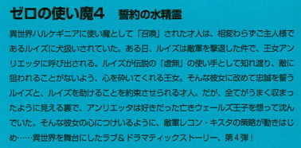

| [ヤマグチノボル] ゼロの使い魔04 | |
| ヤマグチノボル | |
| (2015) | |
|
ゼロの使い魔４〈誓約の水精霊〉
ヤマグチノボル
|

底本データ
一頁18行 一行40文字 段組１段
文庫判15センチ
ISBN4840112363
ゼロの使い魔４ 誓約の水精霊
異世界ハルケギニアに使い魔として「召喚」された才人は、相変わらずご主人様であるルイズに犬扱いされていた。ある日、ルイズは敵軍を撃退した件で、王女アンリエッタに呼び出される。ルイズが伝説の『虚無』の使い手として知れ渡り、敵に狙われることがないよう、心を砕いてくれる王女。そんな彼女に改めて忠誠を誓うルイズと、ルイズを助けることを約束させられる才人。だが、全てがうまく収まったように見える裏で、アンリエッタは好きだった亡きウェールズ王子を想って沈んでいた。そんな彼女の心につけいるように、敵軍レコン・キスタの策略が動きはじめ...異世界を舞台にしたラブ＆ドラマティックストーリー、第４弾。
ヤマグチノボル（やまぐち・のぼる）
１９７２年２月、茨城県生まれ。『カナリア～この想いを歌にのせて』（角川スニーカー文庫）でデウュー。著書に『グリーングリーン鐘ノ音ファンタスティック』『つっぱれ有栖川』（共に角川スニーカー文庫）『描きかけのラブレター』（富士見ミステリー文庫）『グリーングリーン鐘ノ音スタンド・バイ・ミー』（ＭＦ文庫Ｊ）など多数。小説連載も多数手がけている（富士見ファンタジアバトルロイヤル等）。『グリーングリーン』『Gonna Be??』『ゆきうた』『私立アキハバラ学園』『魔界天使ジブリール』など、ゲームシナリオライターとしても活躍中。
◎兎塚エイジ（うさつか・えいじ）
大阪出身、大阪在住の大阪人。８月１６日生まれ。
現在、サラリーマンをしながらイラストを描かせて頂いています。
今までの参加作品は『導士さまといっしょ』（電撃文庫）です。
ゼロの使い魔４
〈誓約の水精霊〉
※ＩＮＤＥＸ※
プロローグ................................................11
※第一章 聖女..........................................26
※第二章 戦勝の城下で才人、買い物をする...53
※第三章 水兵服とルイズの嫉妬..................93
※第四章 タバサの秘密..............................132
※第五章 惚れ薬の力.................................150
※第六章 水の精霊....................................177
※第七章 アンドバリの指輪........................196
※第八章 偽りの再会.................................209
※第九章 悲しみの対決..............................226
エピローグ................................................251
登場人物
ルイズ
才人のご主人様。魔法は失敗してばかりのおちこぼれだったが、伝説の『虚無』の系統を操れることが判明。二つ名は「ゼロ」。
サイト
（平賀才人）
ルイズの使い魔。伝説の使い魔『ガンダールヴ』として、様々な武器が扱える。元は地球のフツーの高校生。
モンモランシー
ルイズの同級生。水系統の魔法を得意とする、目立ちだがり屋の女の子。二つ名は「香水」。
アンリエッタ
トリステインの王女。幼い頃からウェールズのことが好きだった。
ウェールズ
アルビオンの皇太子。アンリエッタとは相思相愛だったが、レコン・キスタ軍の攻撃で死亡。
プロローグ
トリステイン王国と、ガリア王国に挟まれた内陸部に位置するラグドリアン湖は、ハルケギニア随一の名勝である。その広さは、おおよそ六百平方キロメイル。差し渡しは、トリステインの首都『トリスタニア』から魔法学院までの距離にも匹敵する大きな湖である。
比較的高地に位置したその湖は、まるで絵画のように美しい。
緑鮮やかな森と、澄んだ湖水が織り成すコントラストは、神がざっくりと斧をふるって世界を形作ったとは思えないほどの芸術品であった。
しかし、この湖は人間たちのものではない。
人ならざるハルケギニアの先住氏......、水の精霊が住まう場所。
人の歴史より長い歴史を誇る先住民たちの楽園なのであった。
水の精霊たちは湖の底に城と街をつくり、独自の文化と王国を築いている。
その姿を見たものは、その美しさに心うたれ、どんな悪人でも心を入れかえるという。
そんな水の精霊は誓約の精霊とも呼ばれ、その御許においてなされた誓約は、決して破られることがないと伝えられている。
しかしながら......、森と空と湖面の蒼が織り成す光の美しさにも勝るといわれる水の精霊たちは、その姿をほとんど人前には見せない。数十年に一度、トリステイン王家との盟約の更新を行う以外、湖底より出でることはないのだった。
そんなわけで、『誓いが破られることはない』といわれても、それを確かめるのはきわめて困難なのであった。
アンリエッタとウェールズが初めて出会ったのは、そのラグドリアンの湖畔である。
今を去ること三年前......、トリステイン王国はラグドリアン湖で太后マリアンヌの誕生日を祝う、各国から客を招いての大規模な園遊会を開催した。
アルビオン王国、ガリア王国、そして帝政ゲルマニア......、ハルケギニア中より招かれた貴族や王族はこぞって着飾り、湖畔に設けられた会場で社交と贅の限りをつくしたのだった。
湖面には魔法の花火がうちあがり、星空と大きな天幕の下、夜通し舞踏会が催された。会場には世界中の美味珍味が並べられ、ワインとともに貴族たちの胃袋へと消えていった。
二週間にも及ぶ、大園遊会も半ばを過ぎた頃のとある夜、十四歳のアンリエッタは自分の天幕を抜け出し、供や護衛のものも連れずに一人で湖畔を歩いていた。
アンリエッタは何日も続くお祭騒ぎにほとほと嫌気がさしていたのである。
一昨日も昨日も今日も、そして明日も次から次へと、行事は目白押しであった。晩餐会、舞踏会、詩吟の調べの会......、挨拶や追従やおべっかに、少女のアンリエッタはうんざりしていた。一人になって、新鮮な空気を胸いっぱいに吸い込んでみたくなったのである。
アンリエッタは天幕や建物が並んだ一角を、深くフードで顔をかくして通り抜け、静かな岸辺までやってきた。そこは月が照らして幻想的な雰囲気をつくり上げている。きらきらと月明かりが湖面に反射して、アンリエッタはうっとりとその光景に見とれてしまった。
見とれるだけでは飽き足らなくなったらしい。アンリエッタは辺りをきょろきょろと見回しはじめた。
誰もいないことを確かめると、思い切ったように、するりとドレスを脱ぎ捨てる。少女のいたずらっぽい笑みを、眩い美貌を主張し始めた顔に浮かべ、しずしずと水に入っていった。
ひんやりとした冷たい水の感触が体を包んでいく。しかし季節は初夏。その冷たさが生ぬるい夜に温められた体に心地よい。
こんなところを侍従のラ・ポルトに見つかったら怒られてしまうが、自分はずっと窮屈な園遊会を過ごしてきたのである。これぐらいの楽しみ、赦されるはずですわ、とアンリエッタは呟いて泳ぎ始めた。
しばらく泳いでいると、不意に岸辺に人の気配を感じた。
アンリエッタは顔を赤らめ、両手で体を隠す。
「誰？」
しかし、人影は答えない。誰だろう？ 口うるさい侍従のラ・ポルトだろうか？学友兼お遊び相手としてアンリエッタにつけられた、一つ年下のルイズ・フランソワーズ？
しかし、それらの誰にも見つからぬよう、こっそりと己の天幕を抜け出してきたのである。不安になって、アンリエッタはさらに誰何した。
「無礼者。名乗りなさい」
慌てたような声が、岸辺から届いた。
「怪しいものじゃない。散歩をしているだけだ。きみこそこんな夜更けにどうして水浴びなんかしているんだ？」
ちっとも悪びれた様子のない物言いに、アンリエッタはかちんときた。なによ、じっとわたくしが水浴びをしているのを覗いていたくせに。
「だから、名乗りなさいと申しているではありませんか。わたくしはこれでもさる国の王女です。面倒なことになる前に、名乗って立ち去りなさい」
アンリエッタがそういうと、人影はあっけにとられた声をあげた。
「王女？ まさか、アンリエッタ？」
呼び捨てにされて、アンリエッタは驚いた。自分を呼び捨てにできる人間は、このラグドリアン湖に集まった人間の中、五人とはいない。そうじゃなければとんでもない無礼者だ。
「誰？」
アンリエッタは王女の仮面を脱ぎ捨て、少女らしい怯えた声で問うた。
あっはっは、と高い笑いが届いた。
笑われて、アンリエッタはさらに顔を赤らめてしまった。
「ぼくだよアンリエッタ！ ウェールズだ。アルビオンのウェールズだ。きみの従兄だよ！」
「ウェールズ？ もしや、ウェールズさま？」
プリンス・オブ・ウェールズ。アルビオンの皇太子ではないか。会ったことはないが、当然名前は知っている。今は亡き父王の兄君アルビオン王の長男。つまり、自分とは従兄妹の関係にあたる。顔の赤みがさらに激しくなる。
「今日の夜、父上といっしょに到着したんだ。音にきこえたラグドリアン湖を一目見ようと、散歩していたんだ。驚かせてすまない」
「いやですわ。もう......」
浜にあがったアンリエッタは、服を身につけるとウェールズに向き直った。
「こちらを向いてもかまいませんわ」
アンリエッタが服を身につけている間中、ウェールズは後ろを向いていたのである。
長身の影が振り返る。その瞬間、アンリエッタの背筋に生まれて初めて感じる何かが流れた。一瞬で、冷たい水で冷やされた体がまるで炎にあぶられたように熱くなる。
凛々しい顔立ちに、はにかんだ笑顔。
そんな風にアンリエッタが感じた何かは、ウェールズも等しく感じたようだった。
「驚いた。綺麗になったね、アンリエッタ......」と、この瓢々とつかみ所のない王子の口から動揺するようなセリフを引き出した。
「そ、そんなことはありませんわ」
アンリエッタは顔をあげることができなくなって、俯いた。
「驚かせるつもりはなかったんだ。ただ、散歩していたら、水音がして......、行ってみれば、誰かが水浴びしているじゃないか。ごめん。じっと見入ってしまった」
「どうして、見入ってしまったの？」
「いや......、このラグドリアン湖に住む水の精霊が、月明かりに惹かれて湖面に姿をあらわしたんじゃないかって思ったんだ。一度見てみたいと願ってた。なんでも、水の精霊の美しさは、二つの月も恥じ入るほどだ、なんて言われているぐらいだから」
アンリエッタは微笑んだ。
「わたくしで、残念でしたわね」
ウェールズは頬を気恥ずかしげにかきながら、真摯な声で言った。
「そんなことはないよ。水の精霊を見たことはないけれど......」
「ないけれど？」
「きみは、もっと美しい。水の精霊より美しい」
はにかんで、アンリエッタは顔を伏せた。
「アルビオンのおかたは、冗談がお上手ですわね」
「じょ、冗談なんかじゃない！ きみ、ぼくは王子だよ。嘘をついたことは一度もない！ほんとにそう思ったんだ！」
ウェールズは慌てて言った。アンリエッタの胸の鼓動が、魔法をかけられたみたいに速くなる。目の前の従兄......。名前しか知らなかった異国の皇太子。
退屈だった園遊会が、急にこのきらきら光るラグドリアンの湖面のように、美しく彩られていくように感じた。
恋におちた二人が親密になっていくのに、さほど時間はかからなかった。お互いの気持ちは目を見ればすぐにわかったし、ここにいられる時間が限られていることの意味を二人ともよく理解していた。
ウェールズとアンリエッタは園遊会の間中、夜になると湖畔に出て密会を繰り返した。
アンリエッタは深くフードをかぶって顔を隠し、ウェールズは仮面舞踏会で使う、ファントムマスクをつけて水辺へと急ぐ。
待ち合わせの合図は、湖水に投げ込んだ小石の音。
その音で、先についている隠れた片方は茂みから姿をあらわし、周りに誰もいないことを確かめたあと、恋人に合言葉を投げかける。
「風吹く夜に」
そうウェールズが口にすれば、
「水の誓いを」
こうアンリエッタが答えるのだった。
その日も、二人は手を握りあって湖畔を歩いていた。
「遅かったね、アンリエッタ。待ちくたびれたよ」
「ごめんなさい。晩餐会が長引いたの。もう、よっぱらいの長話にはうんざり」
「でも......、こんな風に毎夜抜け出して大丈夫なのかい？」
ウェールズが心配そうに尋ねると、アンリエッタはいたずらっぽく笑って言った。
「平気です。影武者を使っておりますもの」
「影武者とは！ 穏やかじゃないね」
「たしかに、そんなたいそうなものじゃありませんわね。ウェールズさまも、先日の昼食会のおり、ごらんになったわたくしのおともだち......」
「あの、長い髪のやせっぽちの女の子かい？」
ウェールズは首をかしげた。ちょこちょことアンリエッタの後ろをついてまわっていたお遊び相手の少女。アンリエッタに夢中になっていたので、顔や格好がよく思い出せない。ただ、ぼんやりと髪の色だけは覚えていた。
「そうですわ。彼女が、わたくしの格好をして、わたくしのベッドに入ってくれてますの。布団をすっぽりかぶっておりますので、誰かがベッドのそばに立っても、顔は見えませんわ」
「でも、彼女ときみじゃ髪の色が全然違うじゃないか！たしか彼女は桃色がかったブロンドだし、きみはこのとおり......」
ウェールズは、アンリエッタの髪をいじりながら言った。
「綺麗な栗色だ。とんだ影武者だね！」
「髪を染める、特殊な魔法染料を調合いたしましたの。でも、ちょっと良心が痛みますわ。彼女には......、その、ウェールズさまにはお会いするとは申してません。てっきり、わたくしが気晴らしに一人で散歩しているものと思っていますわ」
「ずいぶんと悪知恵が働くじゃないか！」
ウェールズは大声で笑った。
「しっ！ そのような大声で笑ってはいけません。どこに耳があるかわかりませんわ」
「なあに、こんな夜更けに水辺で聞き耳をたてているのは、水の精霊ぐらいなものだよ。ああ、一度でいいから見てみたいものだね。月が嫉妬する美しさというのは、どのようなものなんだろう」
アンリエッタは唇をとがらせて、恋人を困らせるような口調で言った。
「なぁんだ。そうでしたのね。わたくしに会いたいわけじゃありませんのね。水の精霊が見たくって、わたくしをつきあわせているだけですのね」
不意に、ウェールズは立ち止まる。そして、アンリエッタの顔を両手で優しく挟むと、唇を近づけた。アンリエッタはちょっと戸惑うようなそぶりを見せたが、すぐに目をつむった。
ウェールズとアンリエッタは、唇を重ねた。しばらくしてウェールズは、顔を離した。
「きみが好きだ。アンリエッタ」
アンリエッタは、顔を真っ赤にしながら......、それでも勇気を振り絞って、愛の言葉を呟いた。
「わたくしだって、お慕いしております」
それからウェールズは、ちょっと寂しげに目をつむった。
恋の熱に浮かされながらも、どこか冷静な頭の一部で、この恋の結末を想像していたのだ。二人とも、好きな相手と結ばれることが赦される身分ではない。二人のことを誰かが知ったら......、二人は公式の場でも顔を合わすことは不可能になるだろう。王子と王女とは、そうしたものなのだ。
無理してつくった明るい声で、ウェールズは言った。
「ははは......、お互い面倒な星のもとに生まれたものだね。こうやって......、ただしばしの時間を共に過ごすときですら、夜を選び、変装せねばならないとは！一度でいいから......、たった一度でいいから、アンリエッタ、きみと太陽のもと......、誰の目もはばからずに、この湖畔を歩いてみたいものだ」
アンリエッタも目をつむった。目をつむって、ゆっくりとウェールズの胸に寄り添う。
「ならば、誓ってくださいまし」
「誓い？」
「そうですわ。このラグドリアン湖に住む水の精霊のまたの名は『誓約の精霊』。その姿の前でなされた誓約は、たがえられることがないとか」
「迷信だよ。ただの言い伝えさ」
「迷信でも、わたくしは信じます。信じて、それがかなうのなら、いつまでも信じますわ。そう、いつまでも......」
十四歳のアンリエッタは、そう呟くと顔を伏せた。まつげの先から涙が一滴垂れて、頬をつたう。ウェールズは優しくアンリエッタの顔を撫でた。
「ぼくはきみが大好きだ。アンリエッタ。だって、こんなにもぼくのことを好いていてくれるのだから。だから、そんな風に泣くのはおやめ。湖がきみの涙で溢れてしまうよ。そうしたら、ここに集まったみんなが溺れてしまうじゃないか」
「わたくしがどれだけあなたのことを好いているのか、あなたにはわからないのでしょうね。いっつも冗談めかして......。わたくしが本気になればなるほど、意地悪なことを言うんですから」
ウェールズは悲しそうな声で呟いた。
「機嫌を直してくれよアンリエッタ」
アンリエッタはドレスの裾をつまむと、じゃぶじゃぶと水の中に入っていった。
「トリステイン王国王女アンリエッタは水の精霊の御許で誓約いたします。ウェールズさまを、永久に愛することを」
それからアンリエッタはウェールズを呼んだ。
「次はウェールズさまの番ですわ。さあ、わたくしと同じように誓ってくださいまし」
ウェールズは水の中へと入っていった。そして、アンリエッタを抱きかかえる。アンリエッタはウェールズの肩にしがみついた。
「ウェールズさま？」
「足が冷えてしまうよ」
「かまいませんわ。それより、ほら、わたくしは永久に変わらぬ愛を誓いました。ウェールズさまも誓ってくださいまし」
「誓約がたがえられることはないなんて、ただの迷信だよ」
「心変わりをするとおっしゃるの？」
ウェールズはしばし黙祷するように考え込んだあと、
「アルビオン王国皇太子ウェールズは、水の精霊の御許で誓う。いつしか、トリステイン王国王女アンリエッタと、このラグドリアン湖の湖畔で太陽のもと、誰の目もはばかることなく、手をとり歩くことを」
神妙な面持ちになって、湖の沖へと、誓約の言葉を投げかけた。
「誓ったよ」
アンリエッタはウェールズの胸に顔をうずめた。そして、ウェールズに聞こえぬように呟く。
「......愛を誓ってはくださらないの？」
湖面は光で瞬いた。
しばし瞬いて、再び静寂が湖面を包む。
二人は顔を見合わせる。
月の光なのか、それとも水の精霊がその誓約を受け入れたしるしなのか、二人にはわからなかったけど......、ウェールズとアンリエッタはいつまでも寄り添って、ラグドリアンの美しい湖面を見つめ続けた。
第一章 聖女
トリステインの城下町、ブルドンネ街では派手に戦勝記念のパレードが行われていた。
聖獣ユニコーンにひかれた王女アンリエッタの馬車を先頭に、高名な貴族たちの馬車があとに続く。その周りを魔法衛士隊が警護をつとめている。
狭い街路にはいっぱいの観衆が詰めかけている。通り沿いの建物の窓や、屋上や、屋根から人々はパレードを見つめ、口々に歓声を投げかけた。
「アンリエッタ王女万歳！」
「トリステイン万歳！」
観衆たちの熱狂も、もっともである。なにせ、王女アンリエッタが率いたトリステイン軍は先日、不可侵条約を無視して侵攻してきたアルビオン軍をタルブの草原で打ち破ったばかり。数で勝る敵軍を破った王女アンリエッタは、『聖女』と崇められ、いまやその人気は絶頂であった。
この戦勝記念のパレードが終わり次第、アンリエッタには戴冠式が待っている。母である太后マリアンヌから、王冠を受け渡される運びであった。これには枢機卿マザリーニを筆頭に、ほとんどの宮廷貴族や大臣たちが賛同していた。
隣国のゲルマニアは渋い顔をしたが、皇帝とアンリエッタの婚約解消を受け入れた。一国にてアルビオンの侵攻軍を打ち破ったトリステインに、強硬な態度が示せるはずもない。
ましてや同盟の解消など論外である。アルビオンの脅威に怯えるゲルマニアにとって、トリステインはいまやなくてはならぬ強国である。
つまり、アンリエッタは己の手で自由をつかんだのだった。
賑々しい凱旋の一行を、中央広場の片隅でぼんやりと見つめる敗軍の一団がいた。
捕虜となったアルビオン軍の貴族たちであった。捕虜といえど、貴族にはそれなりの待遇が与えられる。杖こそ取り上げられたものの、縛られることもなく、思い思いに突っ立っている。周りには見張りの兵が置かれたが、逃げ出そうなどと考えるものはいなかった。
貴族は捕虜となる際に、捕虜宣誓を行う。その宣誓をやぶって逃げ出そうものなら、名誉と家名は地に落ちる。なにより名誉を重んずる貴族たちにとって、それは死に等しい行為なのであった。
その一団の中、日焼けした浅黒い肌が目立つ精悍な顔立ちの男の姿があった。
ルイズの『虚無』で炎上沈没した巨艦レキシントン号の艦長、サー・ヘンリ・ボーウッドである。彼はやはり同じく捕虜となった傍らの貴族をつついて言った。
「見ろよホレイショ。ぼくたちを負かした『聖女』のお通りだぜ」
ホレイショと呼ばれた貴族は、でっぷりと肥えた体を揺らしながら答えた。
「ふむ......、女王の即位はハルケギニアでは例がない。いくら我々に勝利したとはいえ、まだ戦争が終わったわけではない。大丈夫なのかね。しかも年若いという話ではないか」
「ホレイショ、きみは歴史を勉強すべきだよ。かつてガリアで一例、トリステインでは二例、女王の即位があったはずだ」
ボーウッドにそう言われて、ホレイショは頭をかいた。
「歴史か。してみると、我々はあの『聖女』アンリエッタの輝かしい歴史の一ページを飾るに過ぎない、リボンの一つというべきかな。あの光！ぼくの艦だけじゃなく、きみが率いた我々の艦隊を殲滅したあの光！驚いたね！」
ボーウッドは頷いた。レキシントン号の上空に輝いた光の玉は、見る間に巨大に膨れ上がり......、艦隊を炎上させたのみならず、積んでいた『風石』を消滅させ、進路を地面へと向けさせた。
そして何より驚くべきことは......。その光は誰一人として殺さなかったことである。光は艦を破壊したものの、人体にはなんの影響も与えなかった。
そんなわけで、なんとか操艦の自由が残った艦隊は地面に滑り落ちることができた。火災で怪我人は何人も出たが、不時着での死者は発生していない。
「奇跡の光だね。まったく......。あんな魔法は見たこともきいたこともない。いやはや、我が『祖国』は恐ろしい敵を相手にしたものだ！」
ボーウッドは呟いた。そのあと近くに控えた、大きな斧槍を掲げたトリステインの兵士に声をかける。
「きみ。そうだ、きみ」
兵士は怪訝な顔をしたが、すぐにボーウッドに近寄る。
「お呼びでしょうか？ 閣下」
敵味方を問わず、貴族には礼がつくされる。しごく丁寧な物腰で兵士はボーウッドの言葉を待った。
「ぼくの部下たちは不自由していないかね。食わせるものは食わせてくれているかね？」
「兵の捕虜は一箇所に集められ、トリステイン軍への志願者をつのっている最中です。そうでないものについては、強制労働が課されますが......、ほとんど、我が軍へと志願するでしょう。あれだけの大勝利ですからな。まあ、胃袋の心配はなされなくても結構です。捕虜に食わせるものに困るほど、トリステインは貧乏ではありませぬ」
胸を張って兵士は答えた。ボーウッドは苦笑を浮かべるとポケットから金貨を取り出して兵士に握らせた。
「これで聖女の勝利を祝して、一杯やりたまえ」
兵士は直立すると、にやっと笑った。
「おそれながら閣下のご健康のために、一杯いただくことにいたしましょう」
立ち去っていく兵士を見つめながら、ボーウッドはどこか晴れ晴れとした気持ちで呟いた。
「もし、この忌々しい戦が終わって、国に帰れたらどうする？ホレイショ」
「もう軍人は廃業するよ。なんなら杖を捨てたってかまわない。あんな光を見てしまったあとではね」
ボーウッドは大声で笑った。
「気が合うな！ ぼくも同じ気持ちだよ！」
枢機卿マザリーニはアンリエッタの隣で、にこやかな笑顔を浮かべていた。ここ十年は見せたことのない、屈託のない笑みである。
馬車の窓を開け放ち、街路を埋め尽くす観衆の声援に、手を振ってこたえている。彼は自分の左右の肩にのった二つの重石が、軽くなったことを素直に喜んでいた。内政と外交、二つの重石である。その二つをアンリエッタにまかせ、自分は相談役として退こうと考えていた。
傍らにこしかけた新たなる自分の主君が沈んだ表情をしていることにマザリーニは気づいた。口ひげをいじったあと、マザリーニはアンリエッタに問うた。
「ご気分がすぐれぬようですな。まったくこのマザリーニ、殿下の晴れ晴れとしたお顔をこの馬車の中で拝見したことがございませんわい」
「なにゆえ、わたくしが即位せねばならぬのですか？母さまがいるではありませぬか」
「あのお方は、我々が『女王陛下』とお呼びしてもお返事をくださいませぬ。妾は、『王』ではありませぬ、王の妻、王女の母に過ぎませぬ、とおっしゃって、決してご自分の即位をお認めになりませぬ」
「なぜ、母さまは女王になるのをこばんだのでしょうか」
マザリーニは、珍しくちょっと寂しげな憂いを浮かべて言つた。
「太后陛下は喪に服しているのですよ。亡き陛下を未だに偲んでらっしゃるのです」
アンリエッタはため息をついた。
「ならばわたくしも、母を見習うことにいたしましょう。王座は空位のままでよろしいわ。戴冠など、いたしませぬ」
「またわがままを申される！ 殿下の戴冠は、御母君も望んだことですぞ。トリステインは、いまや弱国では許されませぬ。国中の貴族や民、そして同盟国も、あの強大なアルビオンを破った強い王を......、女王の即位を望んでいるのです」
アンリエッタはため息をついた。それから......、左の薬指にはめた風のルビーを見つめる。才人がアルビオンから持ち帰った、ウェールズの形見の品である。
自分を玉座へと持ち上げることになった勝利は......、ある意味ウェールズのものだ。この指輪が、アンリエッタに敵へ立ち向かう勇気を与えてくれたのであった。
母が、亡き父を偲んで王座を空位のままにしておいたというのなら......、自分もそれに倣いたい。女王になど、なりたくはない。
しかし窓の外からは歓呼の声が聞こえてくる。マザリーニが、諭すように呟いた。
「民が、すべてが望んだ戴冠ですぞ。殿下のお体はもう、殿下御自身のものではありませぬ」
ごほんと咳をして、マザリーニは言葉を続けた。
「では、戴冠の儀式の手順をおさらいいたしますぞ。お間違えなど、なさらぬように」
「まったく。たかが王冠をかぶるのに大層なことね」
「そのようなことを申されてはなりませぬ。神聖なる儀式ですぞ。始祖が与えし王権を担うことを、世界に向けて表明する儀式なのです。多少の面倒は伝統の彩と申すもの」
マザリーニは、もったいぶった調子でアンリエッタに儀式の手順を説明した。
「......さて、一通り儀式がすすみましたら、殿下は祭壇のもとに控えた太后陛下の御前にお進みください。始祖と神に対する誓約の辞を殿下が述べると、御母君が殿下に王冠をかぶせてくださいます。そのときよりこの私を含め、ハルケギニア中のすべての人間が、殿下を『陛下』とお呼びすることになるのです」
誓約......。
心にも思っていないことを『誓約』するのは冒涜ではないのかしら？とアンリエッタは思う。自分に女王が務まるなどとはとても思えない。あの勝利は......、自分を玉座に押し上げることになったタルブでの勝利は己の指導力ではなく、経験豊かな将軍やマザリーニの機知のおかげだ。自分はただ、率いていた、それだけに過ぎない。
ウェールズがもし生きていたら、今の自分を見てなんと言うだろう？女王になろうとしている自分。権力の高みにのぼりつめることを義務づけられてしまった自分を見たら......。
ウェールズ。
愛しい皇太子。
自分が愛した、ただ一人の人間......。
後にも先にも、心よりの想いが溢れ、誓約の言葉を口にしたのは......。あのラグドリアンの湖畔で口にした誓いだけだ。
そんな風に考え始めると......。
偉大なる勝利も戴冠の華やかさも、アンリエッタの心を明るくはしてくれないのだった。
アンリエッタはぼんやりと手元の羊皮紙を見つめた。
先日、アンリエッタの元に届いた報告書である。それを記したのは、捕虜たちの尋問にあたった一衛士である。才人のゼロ戦に撃墜された竜騎士の話が書いてあった。
敏捷に飛び回り強力な魔法攻撃を用いて、その竜騎兵は味方の竜騎士を次々撃墜したと捕虜となったアルビオンの竜騎士は語ったらしい。しかしながら、そんな、竜騎兵はトリステイン軍には存在しない。
疑問に思った衛士は調査を続けたらしい。そのあとに、タルブの村での報告が書かれてあった。
その竜騎兵が操っていたのは、タルブの村に伝わる『竜の羽衣』と呼ばれるマジックアイテムということがわかった、と書いてある。しかし、どうやらそれはマジックアイテムではなく、未知の飛行機械であったこと。
そしてそれを操っていたのは......、アンリエッタと旧知の間柄であるラ・ヴァリエール嬢の使い魔の少年であること。
そして......、あの敵艦隊を吹き飛ばした光との関連も示唆されていた。あの光は、その飛行機械が飛んでいた辺りで発生した。衛士は大胆な仮説を立てていた。ラ・ヴァリエール嬢か、その使い魔の少年が、あの光を発生させたのでは？というものである。
しかし、ことがことだけに、衛士は直接の接触をその二人にしてよいものかどうか迷ったらしい。報告書はアンリエッタの裁可を待つかたちで締められていた。
自分に勝利をもたらした、あの光。
まるで太陽があらわれたかのような、眩い光。
あの光を思い出すと、胸が熱くなる。
「あなたなの？ ルイズ」
アンリエッタは小さく呟いた。
さて一方、こちらは魔法学院。戦勝で沸く城下町とは別に、いつもと変わらぬ雰囲気の日常が続いていた。タルブでの王軍の勝利を祝う辞が朝食の際に学院長のオスマン氏の口から出たものの、他には取り立てて特別なことも行われなかった。
やはり学び舎であるからして、一応政治とは無縁なのであった。戦中にもかかわらず、生徒たちもどこかのんびりとしている。ハルケギニアの貴族にとって、戦争はある意味年中行事である。いつもどこかとどこかが小競り合いを行っている。始まれば騒ぎもするが、戦況が落ち着いたらいつものごとくである。
そんな中、あまり人が来ないヴェストリの広場では小さな戦いが行われていた。
陽光香るベンチにこしかけた才人は手に持った包みを開いた。ぱあっと顔が輝く。
「すごい！ マフラーだ！」
隣に座ったシエスタが、ぽっと頬を染めた。
「あのね？ ほら、あのひこうきでしたっけ？あれに乗るとき、寒そうでしょ？」
時間は午後の三時過ぎ。シエスタは渡したいものがあるから、とこのヴェストリの広場まで才人を呼び出したのである。
そのプレゼントはマフラーであった。真っ白なマフラー。シエスタのやんわりした肌のような、暖かそうなマフラーである。
「うん！ 確かに風防をあけていると寒いんだよな」
才人は試しにそれを首に巻いてみた。今は初夏である。しかし、空の上は寒い。風防をあけているときはなおさらである。離着陸のときは頭を風防から出して下を覗き込む必要があった。現代の飛行機と違って閉めっぱなしというわけにはいかないのだ。
白地に、黒い毛糸で大きい文字が書かれている。アルファベットに似ているが、だいぶ雰囲気が違うハルケギニアの文字である。
「これ、なんて書いてあるの？」
「え？ ああ、サイトさんは異世界からいらしたから文字が読めないんでしたね。それはですね、えとですね......、サイトさんの名前が書いてあるの」
「へえ」
才人は感動した。ああ、自分の名前は、異世界の文字でこう書くのか......、とまじまじと見入ってしまった。四つの文字が組み合わさっている。その字を並べて読むと『サイト』と発音されるのであろう。ちょっと離れたところには六文字書いてあった。
「これは？」
そう尋ねると、シエスタははにかんだ笑みを見せた。
「えへ......、わたしの名前です。ごめんなさい。書いちゃいました。迷惑だったかしら？」
「そ、そんな迷惑なんかじゃないよ！」
才人はぶんぶんと首を振った。
「すっごく嬉しいよ！ だって、シエスタが俺のためにマフラーを編んでくれたんだぜ？」
女の子から、プレゼントをもらうなど生まれて初めての経験であった。才人は悲惨だった年中行事を思い出した。
誕生日。祝日だったので、毎年学校が休みであった。届けにきてくれるようなガールフレンドは一人もいなかった。ああ一度だけ、お母さんが腕時計をくれた。翌日壊れた。
バレンタインデー。いつだか隣のやつと間違えられて、机の中に一個チョコが入っていたときがあった。
小躍りして喜び、誰よ！ 誰！ 俺のこと愛してますか───！俺も愛してしまうかも───！と叫んだら、一人の地味な女子がやってきて「机間違えた。ごめん」と言った。自分のはしゃぎっぷりが呪わしく、トイレで泣いた。
そんな才人だったから、女の子からプレゼントをもらっただけで泣きそうになってしまった。また、手作りだったので、シエスタの魅力値が百二十パーセントもアップした。今までとても可愛く見えたシエスタが、なんと天使のように可愛く見えた。
「でも、いいの？ ほんとにもらっちゃって......。大変だったんじゃない？これ編むの」
才人がそう呟くと、シエスタは頬を染めた。
「いいの。あのね？ わたし、アルビオン軍が攻めてきたとき、すっごく怖かったの。でもね、戦が終わったって聞いて、森から出てきたとき......、サイトさんがひこうきで降りてきたでしょう？」
才人は頷いた。
「あのとき、すっごく、すっごく嬉しかったの。ほんとよ！だからわたし......、いきなりあんなこと......」
才人も頬を染めた。シエスタは、なんと才人に抱きつくと頬にキスをしてきたのである。
それから森から村人たちが出てきた。彼らの何人かは、才人がゼロ戦で竜騎兵を叩き落とすところをきちんと見ていた。
ルイズと才人はアルビオン軍をやっつけた英雄と村人たちに崇められ、三日三晩続いた村の祝宴では、まるで王侯貴族のような扱いを受けた。同時にシエスタのひいおじいちゃんの名誉も回復された。なにせ、ゼロ戦はきちんと飛んだのであるからして。
シエスタは宴会の間中、じっと才人に寄り添って、かたときも離れずかいがいしく給仕をつとめた。そう、今みたいに軽く体を寄りかからせて......。
才人はどぎまぎしながら、首に巻いたマフラーをいじった。あれ？と気づく。
「シエスタ、このマフラー随分と長いんだけど......」
「えへへ。それはね、こうするの」
シエスタはマフラーの端を取ると、なんと自分の首に巻いた。なるほどそうすると、マフラーはちょうどよい長さになるのであった。
「ふ、二人用？」
「そうよ。いや？」
そういってぐっと自分の目を覗き込んでくるシエスタは、なんとも素朴な魅力を放っている。まるで無邪気に懐いてくる子犬のような目だ。
二人用のマフラーなんて、なんてベタなメイドなんだ。シエスタはなんていけないベタメイドなんだ日本だったら死刑だぞこのやろう、こ、ここ、このやろう、と頭の中でわけのわからない思考がぐるぐる回る。しかし、ベタだけに才人の脳髄を直撃している。
シエスタはさらに攻撃を繰り出してきた。なんと目をつむって唇を突き出してきたのである。ついっと、なんの脈絡もなく。
才人はごくりと唾を飲んだ。反射的に唇を重ねてしまいそうになる。しかし......、宴会でのシエスタの父の言葉が、不意に蘇った。
彼はシエスタが席を外した隙をついて、才人の元にやってきた。そして、アルビオンの竜騎士をやっつけた才人の労を労い、村の英雄だと褒め称えた。にこやかに笑っていたが、急に真顔になると才人の顔を恐ろしい形相でにらみつけた。
「きみは村を救った英雄で、アルビオンからトリステインを守った類まれなる勇者だ。わたしはそんなきみが大好きだ。でも......」
「でも、なんでしょう？」
「娘を泣かせたら殺すよ？」
こともなげにそう言ったシエスタの父の顔を、才人は忘れない。オーク鬼よりも、竜騎士よりも、ルイズの魔法で吹き飛んだ巨大戦艦よりも怖かった。
軽々しく、シエスタに手を出すことはできない。いずれ自分は帰らなくちゃいけない人間だし......。ここでキスなんかしたら、シエスタを悲しませることになってしまう。そんなことになったら、シエスタの父は才人を地球まで追いかけてくるかもしれない。そんなことありえねえ、と笑い飛ばせない迫力があの顔にはあった。
でも、シエスタが唇をさらに近づけてきたとき、そんな躊躇いはどこかに飛んでいきそうになった。シエスタは才人が唇を近づけてこないので、自分で距離を縮めるつもりになったらしい。才人の頭をぐっとつかむと、大胆にも引き寄せた。シエスタは、大胆になるときはとことん大胆になれる少女なのであった。才人は抵抗できない。あ、いけない、でもキスぐらいなら......、と体を硬直させていると......。
頭にぼごんっ！ と大きな石がぶつかって、才人は気絶した。
シエスタと才人がこしかけたベンチの後ろ、十五メイルほどの地面に、ぽっかりとあいた穴があった。そこの中で、荒い息をつく少女がいた。ルイズである。
ルイズは穴の中で地団太を踏んだ。その隣には、この穴を掘った巨大モグラのヴェルダンデとインテリジェンスソードのデルフリンガーがいた。ルイズはギーシュのモグラに穴を掘らせ、中に潜んでこっそり頭を出して、ずっと才人とシエスタのやり取りを見張っていたのである。デルフリンガーはいろいろと聞きたいことがあったので、持ってきたのであった。
「なによう！ あの使い魔！」
ルイズは穴の壁を拳で叩きながら、う～～～～！と唸った。
穴から離れたベンチでは、シエスタが「サイトさんしっかりぃ！」と半泣きでわめきながら才人を介抱していた。さきほど才人の頭を直撃した石は、ルイズが穴の中からぶん投げたのである。自分の使い魔のくせに、他の女の子とキスするなんて許せないのである。
デルフリンガーが、とぼけた声で言った。
「なあ、貴族の娘っ子」
「あによ。ところであんた、いい加減わたしの名前覚えなさいよ」
「呼び方なんかどうだっていいじゃねえかよ。さて、最近は穴を掘って使い魔を見張るのが流行りかね？」
「流行りなわけないじゃないの」
「だったら、何故穴を掘って隠れて覗くんだね？」
「見つかったら、かっこ悪いじゃないの」
ルイズは剣をにらんで言った。
「だったらはなっから覗かなきゃいいじゃねえか。使い魔のすることなんか、ほっときゃいいじゃねえか」
「そういうわけにはいかないわ。あいつってば、あのバカ使い魔、わたしの相談にのりもしないで一日中いちゃいちゃいちゃいちゃ......」
いちゃいちゃと言うとき、ルイズの声が震えた。相当に頭にきているのだった。
「わたしってば伝説の『虚無』の系統使いかもしれないのに、でも誰にも相談できなくて、しかたなく無能で気のきかない愚図な使い魔相手に相談しようというのに、どこぞのメイドといつまでもいちゃいちゃいちゃ......」
「いちゃいちゃいちゃ」
「まねしないでよッ！」
「こわ。でも、石まで投げるなんてやりすぎとは違うかね？相棒かわいそうに、死んだかもしらんね」
ルイズは穴の中、腕を組んだ。
「使い魔の義務も果たさずに、いちゃいちゃなんて十年早いのよ」
「やきもち」
「違うわ。絶対違うんだから」
頬を染め、顔を背けてルイズが呟くと、デルフリンガーがルイズの口調を真似て言った。
「どうしてこのご主人さまには、キスしようとしないのよ」
「おだまり」
「寝たふりしてるのに......。泣いちゃうからネ」
「今度それ言ったら、『虚無』で溶かすわ。誓ってあんたを溶かすわよ」
デルフリンガーはぷるぷると震えた。どうやら笑っているらしい。ほんとにイヤな剣ね、と思いながら、ルイズはデルフリンガーに尋ねた。
「ねえ、あんたにしかたなく尋ねてあげる。由緒正しい貴族のわたしが、あんたみたいなボロ剣に尋ねるのよ。感謝してね」
「なんだね？」
ルイズはこほんと可愛らしく咳をした。それから顔を真っ赤にしながら、精一杯威厳を保とうとする声で、デルフリンガーに尋ねた。
「わたしより、あのメイドが魅力で勝る点を述べなさい。簡潔に、要点を踏まえ、わかりやすく述べなさい」
「聞いてどうするんだね？」
「あんたに関係ないじゃない。いいから尋ねたことに答えなさい」
「やきもち」
「だから違うっていってるじゃない」
「いつだかは夢中で襲ってきたくせに......。泣いちゃうからネ」
「やっぱ溶かすわ」
ルイズが杖を構えて呪文を詠唱し始めたので、デルフは慌てて答えた。この前爆発した魔法の光エクスプロージョン、『虚無』を使われてはたまらない。
「わ、わかったよ！ ったく、しょうがねえ娘っ子だな！まず、あの村娘は料理ができる」
「みたいね。でも、それがどうしたって言うのよ。料理なんか、注文すればいいじゃない」
「男はそういう女がすきなんだよ。あとな、裁縫も得意そうだな」
「わたしだってできるわ。母さまに仕込まれたのよ」
「お前さんとあの村娘で腕前を比べたら、ドラゴンとトカゲほども違うよ」
「次」
「顔はまぁ、好み次第だあね。お前さんもまあまあ整っているし、あの村娘には愛嬌がある。しかし、あの村娘はお前さんにない武器がある」
「言ってごらんなさい」
「むね」
「人間は成長するわ」
ルイズは胸を張って言った。そこは見事にぺったんこであった。
「お前さん、いくつだね？」
「じゅうろく」
「ありゃあ。もう成長、無理」
ルイズは呪文を唱え始めた。
「待った！ やめろ！ こら！ でも、人間の男は胸の大きい女が好きなんだろ？この前あのメイドといっしょに風呂入ったときなんか、相棒、夢中だったぜ？」
デルフがそう言ったとき、ルイズの目がつりあがった。
「なんですって？ 今、なんて言ったの？ あんた」
「え？ その、いっしょに風呂に入ったとき......」
デルフリンガーはこの前才人とシエスタがいっしょにお風呂に入った一件を、ルイズに説明した。
そこまで聞いたルイズは深く深呼吸した。体がぴりぴりぴりと危険なぐらい、震えている。とにかくもう、怒っているのだった。デルフリンガーは、この剣にしては珍しくぞくっと恐怖を感じ、黙ってしまった。
そのとき傍らのモグラが、がばっと穴から顔を出した。嬉しい人影を見つけたのだ。自分を捜していたギーシュである。
ギーシュはすさっと地面に立てひざをつくと、愛する使い魔を抱きしめ、ほお擦りした。
「ああ！ 捜したよヴェルダンデ！ ぼくの可愛いけむくじゃら！こんなところに穴を掘って、いったいなにをしているんだい？ん？おや、ルイズ」
ギーシュは穴の中にルイズの姿を発見して、怪訝な顔になった。
「なんできみは穴の中にいるんだね？」
モグラは困ったような目で、ギーシュとルイズを交互に見比べた。ギーシュはうむ、と首を振って、分別くさい口調で言った。
「わかったぞルイズ。きみはヴェルダンデに穴を掘らせて、どばどばミミズを探していたな？なんだ、美容の秘薬でも調合する気だね。なるほどきみの使い魔は、どうやら食堂のメイドに夢中のようだし......」
ギーシュはちらっと、ベンチのところで才人を介抱するシエスタを見つめて言った。相変わらず才人は気絶したままだ。シエスタはそんな才人の胸にすがって、わあわあ騒いでいる。
「あっはっは！ せいぜい美容に気をつかって取り返さないとな！平民の娘に男を取られたとあっては、貴族の名誉が、がた落ちだからな！」
いけね、とデルフリンガーが呟いた。ルイズはトタテグモのように足首をつかんでギーシュを穴の中に引きずり込むと、二秒でぎたぎたにした。
モグラが心配そうに、気絶したギーシュの顔を鼻先でつついた。ルイズは拳をぎゅっとにぎって、低い、唸るような声で呟いた。
「次はあいつだかんね」
デルフリンガーが、せつない声で呟いた。
「いやぁ、こんどの『虚無』はブリミル・ヴァルトリの百倍こええやね」
痛む頭をさすって才人が部屋にやってくると、ルイズはベッドの上に正座して窓の方をじっと見つめていた。部屋の中は薄暗い。もう夕方だというのに、ルイズは灯りもつけていない。才人は、なにかいやぁな空気を感じ、ぞくっと震えた。
「どうしたルイズ。部屋が暗いじゃねえか」
才人がそう言っても、ルイズは返事をしない。才人に背中を見せたままである。どうやらご機嫌ななめらしい。いったい、なにを怒っているんだろう、と才人はいぶかしんだ。
「遅かったじゃない。今まで、どこでなにをしていたの？」
正座をしたまま、ルイズが尋ねる。声の調子は冷たいが、怒っているわけではないようだ。才人はほっと安心して、答えた。
「ヴェストリの広場でシエスタと会ってたんだ。プレゼントをくれるって言うから。そしたら頭に石が飛んできて......。痛かったよ。なんなんだあの石」
「そう。きっと天罰ね。ところで話があるから......、ちょっと床に座りなさい」
「え？ 床？」
「犬」
久々の犬かぁ～～～～、と呟いて、才人はそっと部屋から抜け出そうとした。さわらぬ神にたたりなし、である。というか今のルイズは神より怖い。始祖だか虚無だかしらねえが、とんでもない呪文を唱えて、トリステインに攻めてきた戦艦を吹っ飛ばしたルイズである。
才人がドアを開けようとしたら、ルイズが杖を振った。
がちゃがちゃ。あれ？ 回そうとしたが、ノブが回らない。ルイズは背中を見せたまま、「不思議ね......。簡単なコモン・マジックはきちんと成功するようになったわ」
「ル、ルイズ？」
震える声で才人は尋ねた。ルイズ怖い。なんか怖い。声が普通なのがものすごく怖い。
「未だ、四大系統は失敗するけど......、やはりわたしは『虚無』の使い手なのかしら。そして日々わたしは成長しているのかしら？ねえ、犬」
才人は必死になってノブを回そうとする。しかし、回らない。
「無駄よ。『ロック』がかかってるもの。ところで犬、ご主人さまはね、不安なの。そんな風に『虚無』の使い手かもしれないのに、誰にも相談できなくて不安なの。今のところ、誰もわたしが『虚無』を使えるようになったなんて知らないわ。わたしが唱えた『エクスプロージョン』は城下や王軍の間では『奇跡』でかたがついてるみたいだし......。でも、そのうちお城にバレると思うわ。そしたらわたしどうなっちゃうのかなあ？そんな非常時なのに、どこかの恩知らずのバカ使い魔ときたら、メイドと逢引を重ねているわ」
キキキ、キスしたくせに逢引、とルイズは危うく口に出しそうになってしまい、慌てて唇を閉じた。深呼吸して、次の言葉を選ぶ。
才人は顔色を変えて、ノブを回そうとした。しかしどんなに力を込めてもノブは回らない。『ロック』の魔法はどうやら強力にかかっているようだ。
「逢引ならまだいいわ。でもお風呂。これはよくないわ。まずいなんてもんじゃないわ。ご主人さまを放り出してメイドとお風呂。どういうこと？世が世ならこりゃ死罪ものだわ。わたしが優しくて、あんたは幸せね」
ルイズの全身が震え始めた。
キキキキキ、キスしたくせに。お風呂。メイドとお風呂。
そのとき窓の外から何かが飛んできた。果たして、それは一匹のペリカンだった。
「あら。早かったじゃないの」
ルイズはペリカンの足に縛られた包みを外すと、ベッドの上に置いた。それからくちばしの中に金貨を入れた。どうやらこのペリカンは才人の世界でいう宅配便かなにからしい。
「な、なにを買ったんだ？ お前......」
「わたしね、犬は鞭だけじゃ理解しないことを学んだの」
才人は顔をこわばらせ、狂ったようにノブを回そうとした。
「た、たすけてッ！ たすけてッ！」
「だから無駄だって言ってるじゃない」
後ろを振り向くと、いつの間にか近づいてきたルイズが立っている。その顔を見て、才人は悲鳴をあげた。
「ひっ」
ルイズ、目はつりあがり、唇をぎゅっと強く噛み締めている。シエスタの父より怖い顔だ。
とりあえずルイズは、例によって才人の股間を蹴り上げた。才人は床に崩れ落ちる。
「あ、ああああああ......、あ、い、お、お前はいっつも俺のせつない部分を邪険に扱いやがって......」
がしっとルイズは才人の首根っこを踏んづけた。
「犬。あんたに足りないのは、どうやら節操みたいね。あっちで尻尾をふりふり、こっちで尻尾をふりふり、種まきに余念がないみたい。だからこんなものを買うハメになっちゃったわ」
ルイズは才人の体に、革でできた紐のようなものを取りつけた。ぱちんと、胸の前の錠前に鍵をかける。体をしばるサスペンダーのような代物であった。
「な、なんすかこれ？」
「猛獣を飼いならすための、魔法の拘束具よ」
ざっけんな！ と叫んで立ち上がろうとしたら、ルイズが短く呪文を呟いた。
「ヴァスラ」
ぎゃっ！ とわめいて、才人は床に転がった。
「水と風の呪文が付与されているわ。主人の合図に応じて、込められた電撃の魔法が発動するのよ」
ルイズが説明したが、才人はショックで気絶していたので答えることができなかった。ルイズはそれから、才人を引きずって藁束の中に放り込んだ。
「わたしの使い魔のくせに、女の子とお風呂なんて百年早いのよッ！」
第二章 戦勝の城下で才人、買い物をする
ワルドは目を覚ました。起き上がろうとして、顔をしかめる。体に巻かれた包帯を見つめて、いぶかしむ。ここはいったいどこだろう？自分は確か......。ガンダールヴの操る飛行機械が繰り出した魔法によって傷を受け、意識を失ったのだ。
辺りを見回す。板張りの壁の、粗末な部屋だった。ベッドと机が一個。机の上には、自分が首から下げていたペンダントが置いてある。水差しを見つけ、手を伸ばしたが......、やはり体が痛んで、手が届かない。そうしていると、扉が開いて見知った顔が姿を見せた。
「おや、意識が戻ったみたいじゃないか」
「土くれ？ 貴様か」
フーケは机の上にスープの入った皿を置いた。ワルドは再び起き上がろうとして、顔をしかめた。
「つッ......」
「まだ、動いちゃいけないよ。弾に何箇所も体を射抜かれてたのさ。水系統のメイジを何人も集めて、三日三晩『治癒』の呪文を唱えさせたんだ」
「弾？」
ワルドは怪訝な顔になった。
「俺は『銃』で撃たれたのか？ あんな強力な『銃』があるのか？」
銃といえば、平民が使う武器だ。火打石の火花で点火した火薬の圧力で、丸い弾を打ち出す武器。弓より近距離の威力は勝るが、いちいち弾と火薬を込めねばならないため、速射性におとる。弓に比べると命中精度もよくない。弓より大きな利点があるとすれば、使用に際し、弓ほどの訓練を必要としないということぐらいだ。メイジにとってはたいした武器じゃない。
「そうだよ？ 自分を倒した武器もしらないで戦ってたのかい？のん気な男だね」
フーケはそう言うと、スープをスプーンですくって、ワルドの口元に運んでやった。
ワルドは考え込んだ。あのガンダールヴが操っていた奇妙な飛行機械......。
あのように機敏にすばやく飛びまわれるだけでなく、連発式の『銃』も装備しているとは。
そして、意識が途切れる瞬間に見た光の渦......。
見る間にアルビオンの艦隊を炎上させた、あの光......。
自分が見たものはいったいなんだったんだろう。
やはり、このハルケギニアには何かが起こっている。
自分を変えるきっかけになった、あの事件とつながりがあるなにか......。
手に入れたいと願ったルイズの才能。
そして、神聖皇帝クロムウェルが操る、奇妙な魔法......。
『聖地』に行けば、なにか手がかりがあるやも知れぬ、とクロムウェルについてきたが、ヤツの計画は初手から蹟いたようだな、と燃え上がる戦艦を思い出して独りごちた。
「ほら、スープが冷めちまうよ」
フーケはじっと考え事をしているワルドに業を煮やしたような声で言った。
「ここはどこだ？」
スープに目もくれず、ワルドは尋ねる。
「アルビオンさ。ロンディニウム郊外の寺院だよ。昔世話になったことがあるところでね。無事に帰れてよかったね。わたしにせいぜい感謝するんだね」
「アルビオン？ 侵攻作戦はどうなった？」
「ああ、あんたは気を失っていたから知らないだろうけど、大失敗だよ。艦隊全滅でアルビオン軍は総崩れ。まったく『なにが勝利はこれ疑いなし』だよ。数で劣るトリステイン軍に負けてちゃ、『聖地』の奪回なんておぼつかないんじゃないの？」
「お前も、侵攻軍にくわわっていたとはな。俺に知らせておけ」
フーケは呆れた顔になった。
「しっかりあんたに伝えたじゃない！ 異国の地理に不案内なアルビオン軍のために、斥候隊に派遣されるって！あんたはどうやら自分の興味のないことはすぐに忘れるタチなのね！」
「そうか？ ああ、そうかもしれん。すまんな」
ワルドはそう呟くと「スープをくれ。腹が減った」とフーケを促した。
フーケは苦々しげに顔を歪めたが、それでもワルドの口にスープを運んでやった。
「あんたが空から落ちてくるのが見えたからね、急いで駆けつけて介抱してやったんだよ。
とりあえずわたしの『水』で応急処置してさ。それから盗賊時代の闇ルートを使って、アルビオン行きの船をなんとか手配して、必死に落ちのびたんだ。まったくこんな恩知らずを助けるんじゃなかったよ！」
ワルドはテーブルの上を指差した。
「そこのペンダントを取ってくれ」
銀でできたロケットがついたペンダント。フーケがそれを取ってやるとワルドは首につけた。
「一番大事な宝物ってわけ？」
「ただ、ないと落ちつかぬだけだ」
「随分と綺麗な人ね」
フーケが、にやっと笑みを浮かべてワルドを見つめると、ワルドの顔に赤みがさした。
「見たのか？」
「つい、ね。だってあんたってば、意識がなくてもぎゅっとそれを握り締めてるんだもの。気になるじゃない」
「さすがは盗賊だな」
「ねえ、それ、誰？ 恋人？」
フーケが身を乗り出して、ワルドに尋ねる。苦々しい声で、ワルドは言った。
「母だ」
「母親ぁ？ あんた、そんな顔して乳離れをしてなかったの？」
「今はもういない。どちらにしろ、貴様に関係あるまい」
「あのさ、貴様貴様って、何様よ」
そのとき、部屋ががちゃりと開いた。シェフィールドをしたがえたクロムウェルであった。
彼はワルドを見ると、にこっと笑った。いつもと変わらぬ笑みである。まるで人形のようだな、とワルドは思う。
あれだけの敗戦である。アルビオンの野望は初手から蹟いたのである。それなのに、クロムウェルには動揺したところが見られない。ほんとの大物なのか、それともただの楽天家なのか、判断がつきかねた。
「意識が戻ったようだな。子爵」
「申し訳ありません、閣下。一度ならず、二度までも失敗いたしました」
「きみの失敗が原因ではないだろう」
傍らに控えたシェフィールドが頷いた。報告書らしき羊皮紙の巻物を見つめ、呟く。
「なにやら空にあらわれた光の玉が膨れ上がり、我が艦隊を吹き飛ばしたとか」
「つまり、敵に未知の魔法を使われたのだ。これは計算違いだ。誰の責任でもない。しいてあげるなら......、敵の戦力の分析を怠った我ら指導部の問題だ。一兵士のきみたちの責任を問うつもりはない。ゆっくりと傷を癒したまえ、子爵」
クロムウェルはワルドに手を差し出した。ワルドはそこに口をつける。
「閣下の慈悲のお心に感謝します」
ワルドはルイズの長い、桃色がかったブロンドの髪を思い出していた。あの飛行機械にルイズは乗っていた。あの魔法はまさか......。
ワルドはルイズに才能があると見抜いていた。だから己の片腕においておきたいと望んだのである。
......始祖ブリミルが用いし失われた系統『虚無』。
首を振る。クロムウェルが言うには『虚無』は生命を操る系統。あのような光を発して、艦隊をやっつけることなどできるのか？
それに、あれほど強大な魔力......。ルイズはおろか、個人に操れるとは思えない。
「あれは『虚無』の光なのでありましょうか？しかしながら、閣下のおっしゃる『虚無』とあの光はまったく相容れませぬ」
「余とて、『虚無』のすべてを理解しているとは言いきれぬ。『虚無』には謎が多すぎるのだ」
シェフィールドが、あとを引き取る。
「長い、歴史の闇の彼方に包まれておりますゆえ」
「歴史。そう、余は歴史に深い興味を抱いておる。たまに書をひもとくのだ。始祖の盾、と呼ばれた聖者エイジスの伝記の一章に、次のような言葉がある。数少ない『虚無』に関する記述だ」
クロムウェルは詩を吟じるような口調で、次の言葉を口にした。
「〝始祖は太陽を作り出し、あまねく地を照らした〟」
「なるほど。あの光は小型の太陽ともいえなくもない」
「謎が謎のままでは、気分が悪い。目覚めも悪い。そうだな、子爵」
「おっしゃるとおりです」
「トリステイン軍は、アンリエッタが率いていたという話ではないか。ただの世間知らずのお姫さまと思っていたが、どうしてどうして、やるではないか。あの姫君は、『始祖の祈祷書』を用い、王室に眠る秘密を嗅ぎ当てたのかもしれぬ」
「王室に眠りし秘密とは？」
「アルビオン王家、トリステイン王家、そしてガリア王家......、もとは一本の矢だ。そして、それぞれに始祖の秘密は分けられた。そうだな？ミス・シェフィールド」
クロムウェルは傍らの女性を促した。
「閣下のおっしゃるとおりですわ。アルビオン王家の残した秘宝は『風のルビー』ともう一つ......。しかしいずこに消えたのか、風のルビーは見つからずじまい。もう一つは未だ調査が済んでおりません」
ワルドは地味な感じのその女性を見つめた。深いローブで顔を隠しているため、表情が窺えない。クロムウェルの秘書と思っていたが......、どうしてどうして、ただの秘書ではないようだった。強い魔力を感じるわけではない。しかし、ここまでクロムウェルに重用されるからには、何か特殊な能力を持っているのだろう。
「いまやアンリエッタは、『聖女』と崇められ、なんと女王に即位するとか」
クロムウェルが呟く。シェフィールドが答えた。
「王国にとって王は国。女王を手に入れれば、国も、王家の秘密も手に入るでしょう」
クロムウェルは笑みを浮かべた。
「ウェールズ君」
廊下から、クロムウェルによって蘇ったウェールズが、部屋に入ってきた。
「お呼びですか。閣下」
「余はきみの恋人......、『聖女』どのに戴冠のお祝いを言上したいと思う。我がロンディニウムの城までお越し願ってな。なに、道中が退屈だろうが、きみがいれば退屈も紛れるだろう」
ウェールズは抑揚のない声で、
「かしこまりました」とだけ呟いた。
「ではワルド君。ゆっくりと養生したまえ。『聖女』をこのウェールズ君の手引きで無事晩餐会に招待することができたら、きみにも出席願おう」
ワルドは頭を下げた。
クロムウェルたちは、部屋から退出していった。フーケがぼんやりと呟く。
「いけすかない男だね。死んだ恋人を餌に残された恋人を釣り上げるなんて、貴族のやりかたじゃないよ」
ま、わたしは貴族は嫌いだけどさ、と言い訳をするようにフーケは言葉をくわえた。
「あの男は貴族ではない。聞いたろう？ 元は一介の司教だ」
それからワルドは忌々しげに鼻を鳴らした。
「どうしたのよ」
「じっとしていられんタチでね。傷さえ癒えておれば......、死人なんぞに仕事をとられずにすんだものを......」
それからワルドは、口惜しげに腕に顔をうずめた。
「くそ！ 俺は......、俺は無能なのか？また『聖地』が遠ざかったではないか......」
フーケはにっこりと笑うと、そんなワルドの肩に手を回した。
「弱い男だね......。まあ、初めから知ってたけどさ」
それからフーケは、ワルドの唇に自分のそれを近づけ、重ねた。
ゆっくりと唇を離し、フーケは呟いた。
「今はゆっくりと休むんだね。あんたが抱えたものがなんなのか、わたしは知らないけれど......。たまにゃ休息も必要だよ」
トリステインの王宮で、アンリエッタは客を待っていた。女王とはいえ、いつも玉座にこしかけているわけではない。王の仕事は、主に接待である。
戴冠式を終えて女王となってからは、国内外の客と会うことが格段に増えた。何かしらの訴えや要求、ただのご機嫌伺い、アンリエッタは朝から晩まで、誰かと会わねばならない羽目になった。そのうえ戦時なので、普段より客は多い。
それなりに威厳を見せねばならぬので、大変に気疲れがする。マザリーニが補佐してくれるとはいえ、受け答えにも揺るぎがあってはならない。すでにもうアンリエッタは、何も知らないお姫さまでいることを許されないのであった。
しかし......、今度の客は、そのような作った表情と態度を見せないでもすむ相手だった。
部屋の外に控えた呼び出しの声が、アンリエッタに客の到着を告げる。
通して、と告げると扉が開いた。
ルイズが立って、恭しく頭を下げた。その隣には才人の姿も見える。未だに体には、せつなく猛獣の拘束具が取りつけられている。
「ルイズ、ああ、ルイズ！」
アンリエッタは駆け寄り、ルイズを抱きしめた。顔をあげず、ルイズは呟いた。
「姫さま......、いえ、もう陛下とお呼びせねばいけませんね」
「そのような他人行儀を申したら、承知しませんよ。ルイズ・フランソワーズ。あなたはわたくしから、最愛のおともだちを取り上げてしまうつもりなの？」
「ならばいつものように、姫さまとお呼びいたしますわ」
「そうしてちょうだい。ああルイズ、女王になんてなるんじゃなかったわ。退屈は二倍。窮屈は三倍。そして気苦労は十倍よ」
アンリエッタはつまらなそうに呟いた。
それからルイズは、黙ってアンリエッタの言葉を待った。アンリエッタからの使者が魔法学院にやってきたのは今朝のことである。二人は授業を休んで、アンリエッタが用意した馬車に乗り込んでここまでやってきたのだ。
わざわざ自分を呼び寄せた理由はなんだろう。やはり『虚無』のことだろうか？しかし、こちらから質問することははばかられた。
アンリエッタは自分の目を覗き込んだまま、話さない。しかたなくルイズは、「このたびの戦勝のお祝いを、言上させてくださいまし」と言ってみた。当たり障りのない話題のつもりだったが、アンリエッタは思うところがあったらしく、ルイズの手を握った。
「あの勝利はあなたのおかげだものね。ルイズ」
ルイズは、アンリエッタの顔を、はっとした表情で見つめた。
「わたくしに隠し事はしなくても結構よ。ルイズ」
「わたし、なんのことだか......」
それでもルイズはとぼけようとした。
アンリエッタは微笑んで、ルイズに羊皮紙の報告書を手渡した。それを読んだあと、ルイズはため息をついた。
「ここまでお調べなんですか？」
「あれだけ派手な戦果をあげておいて、隠し通せるわけがないじゃないの」
それからアンリエッタは、今まで蚊帳の外だった才人の方を向いた。道中、アンリエッタが女王になったことをルイズから聞いていたので、才人はかちこちに緊張した。
「異国の飛行機械を操り、敵の竜騎士隊を撃滅したとか。厚く御礼を申し上げますわ」
「いえ......、たいしたことじゃないです」
「あなたは救国の英雄ですわ。できたらあなたを貴族にしてさしあげたいぐらいだけど......」
「いけませんわ！ 犬を貴族にするなんて！」
「犬？」
「い、いや......、なんでもありませんわ」ルイズは頬を染めて、呟くように言った。
「あなたに、爵位をさずけるわけには参りませんの」
アンリエッタにそう言われ、「はぁ」と才人は呟いた。いつかキュルケが言っていたことを思い出す。もとよりトリステインでは、メイジではないものが貴族になることはできないはずだった。
どっちにしろ爵位なんかいらねーよ、と思ったが、口には出さなかった。そんなものもらったって、日本に帰ったら英検やソロバンほどの資格にもならないのである。
「多大な......、ほんとうに大きな戦果ですわ。ルイズ・フランソワーズ。あなたと、その使い魔が成し遂げた戦果は、このトリステインはおろか、ハルケギニアの歴史の中でも類をみないほどのものです。本来ならルイズ、あなたには領地どころか小国を与え、大公の位をあたえてもよいくらい。そして使い魔さんにも特例で爵位を授けることぐらいできましょう」
「わ、わたしはなにも......、手柄を立てたのは使い魔で......」
ルイズはぼそぼそと言いにくそうに呟いた。
「あの光はあなたなのでしょう？ ルイズ。城下では奇跡の光だ、などと噂されておりますが、わたくしは奇跡など信じませぬ。あの光が膨れ上がった場所に、あなたたちが乗った飛行機械は飛んでいた。あれはあなたなのでしょ？」
ルイズはアンリエッタに見つめられ、それ以上隠し通すことができなくなった。
才人がいいのか？ といった顔でシャツの袖を引っ張ったが、ルイズは「実は......」と切り出すと、始祖の祈祷書のことを語り始めた。誰にも相談できなくて、不安だったのである。
ゆっくりと......、ルイズはアンリエッタに語った。
アンリエッタからもらった『水のルビー』を嵌めたら、始祖の祈祷書のページに古代文字が浮かび上がったこと。そこに記された呪文を読み上げたら......、あの光が発生したこと。
「始祖の祈祷書には、『虚無』の系統と書かれておりました。姫さま、それは本当なのでしょうか？」
アンリエッタは目をつむったあと、ルイズの肩に手をおいた。
「ご存知、ルイズ？ 始祖ブリミルは、その三人の子に王家を作らせ、それぞれに指輪と秘宝を遺したのです。トリステインに伝わるのがあなたの嵌めている『水のルビー』と始祖の祈祷書」
「ええ......」
「王家の間では、このように言い伝えられてきました。始祖の力を受け継ぐものは、王家にあらわれると」
「わたしは王族ではありませんわ」
「ルイズ、なにをおっしゃるの。ラ・ヴァリエール公爵家の祖は、王の庶子。なればこそ公爵家なのではありませんか」
ルイズははっとした顔になった。
「あなたも、このトリステイン王家の血をひいているのですよ。資格は十分にあるのです」
それからアンリエッタは、才人の手をとった。ルーンを見て頷く。
「この印は、『ガンダールヴ』の印ですね？ 始祖ブリミルが用いし、呪文詠唱の時間を確保するためだけに生まれた使い魔の印」
才人は頷いた。オスマン氏も、確かそのようなことを言っていた。
「では......、間違いなくわたしは『虚無』の担い手なのですか？」
「そう考えるのが、正しいようね」
ルイズはため息をついた。
「これであなたに、勲章や恩賞を授けることができなくなった理由はわかるわね？ルイズ」
才人はどうしてだかわからなかったので、尋ねた。
「どうしてですか？」
アンリエッタは顔を曇らせて、答えた。
「わたくしが恩賞を与えたら、ルイズの功績を白日のもとにさらしてしまうことになるでしょう。それは危険です。ルイズの持つ力は大きすぎるのです。一国でさえ、もてあますほどの力なのです。ルイズの秘密を敵が知ったら......、彼らはなんとしてでも彼女を手に入れようと躍起になるでしょう。敵の的になるのはわたくしだけで十分」
それからアンリエッタは、ため息をついた。
「敵は空の上だけとは限りません。城の中にも......、あなたのその力を知ったら、私欲のために利用しようとするものが必ずあらわれるでしょう」
ルイズはこわばった顔で頷いた。
「だからルイズ、誰にもその力のことは話してはなりません。これはわたしと、あなたとの秘密よ」
それからルイズはしばらく考え込んでいたが......。
やおら決心したように、口を開いた。
「おそれながら姫さまに、わたしの『虚無』を捧げたいと思います」
「いえ......、いいのです。あなたはその力のことを一刻も早く忘れなさい。二度と使ってはなりませぬ」
「神は......、姫さまをお助けするために、わたしにこの力を授けたに違いありません！」
しかし、アンリエッタは首を振る。
「母が申しておりました。過ぎたる力は人を狂わせると。『虚無』の協力を手にしたわたくしがそうならぬと、誰が言いきれるでしょうか？」
ルイズは昂然と顔を持ち上げた。自分の使命に気づいたような、そんな顔であった。しかし、その顔はどこか危うい。
「わたしは、姫さまと祖国のために、この力と体を捧げたいと常々考えておりました。そうしつけられ、そう信じて育って参りました。しかしながら、わたしの魔法は常に失敗しておりました。ご存知のように、ついた二つ名は『ゼロ』。嘲りと侮蔑の中、いつも口惜しさに体を震わせておりました」
ルイズはきっぱりと言い切った。
「しかし、そんなわたしに神は力を与えてくださいました。わたしは自分が信じるもののために、この力を使いとう存じます。それでも陛下がいらぬとおっしゃるなら、杖を陛下にお返しせねばなりません」
アンリエッタはルイズのその口上に心打たれた。
「わかったわルイズ。あなたは今でも......、一番のわたしのおともだち。ラグドリアンの湖畔でも、あなたはわたくしを助けてくれたわね。わたくしの身代わりに、ベッドに入ってくださって......」
「姫さま」
ルイズとアンリエッタは、ひし、と抱き合った。才人は相変わらず蚊帳の外で、ぼんやりと頭をかいた。ルイズのやつ、安請け合いしやがって......、と思ったが、口にはしない。
アンリエッタの力になるのはいいけど......、俺はどーすんだよ、帰る方法の手がかりを探しに東へと旅してみたいのに......。
アンリエッタの手伝いをするんじゃ、そうもいかないだろうが。
「これからも、わたくしの力になってくれるというのねルイズ」
「当然ですわ、姫さま」
「ならば、あの『始祖の祈祷書』はあなたに授けましょう。しかしルイズ、これだけは約束して。決して『虚無』の使い手ということを、口外しませんように。また、みだりに使用してはなりません」
「かしこまりました」
「これから、あなたはわたくし直属の女官ということに致します」
アンリエッタは羽ペンをとると、さらさらと羊皮紙になにかしたためた。それから羽ペンを振ると、書面に花押がついた。
「これをお持ちなさい。わたくしが発行する正式な許可証です。王宮を含む、国内外へのあらゆる場所への通行と、警察権を含む公的機関の使用を認めた許可証です。自由がなければ、仕事もしにくいでしょうから」
ルイズは恭しく礼をすると、その許可証を受け取った。アンリエッタのお墨付きである。ルイズはある意味、女王の権利を行使する許可を与えられたのであった。
「あなたにしか解決できない事件がもちあがったら、必ずや相談いたします。表向きは、これまでどおり魔法学院の生徒としてふるまってちょうだい。まあ言わずともあなたなら、きっとうまくやってくれるわね」
それからアンリエッタは、憮然としている才人に向き直る。思いついたように、体中のポケットを探る。そこにあった宝石や金貨を取り出すと、それをそっくり才人に握らせた。
「これからもルイズを......、わたくしの大事なおともだちをよろしくお願いしますわね。優しい使い魔さん」
「そ、そんな......、こんなにたくさん受け取れませんよ」
才人は手に持った金銀宝石を見て、あっけにとられた。
「是非、受け取ってくださいな。ほんとうならあなたを『シュヴァリエ』に叙さねばならぬのに、それが適わぬ無力な女王のせめてもの感謝の気持ちです。あなたはわたくしと祖国に忠誠を示してくださいました。報いるところがなければなりませぬ」
アンリエッタは真摯な目でそう告げた。
その目を見ていると......、受け取らぬわけにはいかなくなってくる。これを受け取ったら、ルイズの手伝いをこれからもしなくちゃいかんだろう......。才人はこっちの世界の人間じゃないし、アンリエッタの臣下でもないのだから、そこまで責任を感じなくてもよいのだが、何気に才人は義理堅いのだった。
ああ、これも運命なのかもしれない、と思う。
いや、運命というよりは性格だな。俺はアンリエッタみたいな美人に、お願いしますと言われて断れるような性格じゃない。ウキウキしてしまう俺がいる。はあ......。モテなかった日本時代が、こんなところで尾を引くとは。
帰る手がかりを探すのはしばらく先になりそうだな、と思いながら、才人はポケットに金貨と宝石を突っ込んだ。
才人とルイズは、並んで王宮を出た。
「まったく......、お前ってば安請け合いしやがって......」
「どういう意味よ」
ルイズは、才人を見上げてにらんだ。
「お前が姫さまの手伝いするなんて言うから、東に行けなくなったじゃねえか」
憮然とした声で、才人は言った。
「勝手に行けばいいじゃない。誰も残ってなんて頼んでないわ」
ルイズはぷいっと顔をそらすと、才人を置いて歩き出した。慌てて才人は追いかける。
「そういう言い方はないんじゃねえのか？ だったらこんな！」
才人は自分の体につけられた、猛獣用の拘束具とやらを指差した。
「もんつけんじゃねえよッ！」
「使い魔が勝手なことしないように、鎖をつけるのは飼い主の義務でしょ」
澄ました顔で、ルイズが答える。
才人は、はたと気づいてルイズの肩をつかんだ。
そこはもう、王宮前のブルドンネ街。大通りである。通行人が何事？といった目でじろじろと見つめている。
「もう！ 人が見てるじゃない！ 離してよ！」
低い声で才人は言った。
「お前......、俺が帰らないほうがいいとか、思ってるんだろ」
ルイズはその言葉に、うっ！ と顔色を変えた。
「やっぱりそうだ。そうなんだな？ 俺がいないと困るんだろ？姫さまの手伝いがしにくくなるからな」
違うわ、と言いそうになって、ルイズは口をつぐんだ。そんな理由で、才人を元の世界とやらに返したくないわけじゃない。でも、それを口にしたら、才人に対するもやもやした気持ちを告げることになってしまう。そんなこと、ルイズのプライドが許さない。
そんなわけで、ルイズはしかたなく頷いた。
「そ、そうよっ！ あんたみたいなへぼ使い魔でも、いなくちゃそれなりに困るからね！」
「かわいくねぇ。なんだよそれ」
才人はそう呟くと、再び歩き出す。
なんだよ、と思う。好きだから、とは言わない。せめて「寂しくなるから」とか、「そばにいて欲しい」とか、そのぐらいのこと言ってくれれば、こっちも気持ちよく手伝うことだってできるのだ。あてにならない帰る方法探しは、そしたら後でもかまわない。
さっきアンリエッタに頼まれたときだって、めんどくせえなあ、と思う反面、ちょっと嬉しくもあったのだ。日本にいたときは、誰も自分を必要としなかった。才人がいてもいなくても、きっと地球は回るだろう。でも、こっちの世界は違う。シエスタやアンリエッタ......、何人かの人たちが自分を必要としてくれている。それは素直に嬉しかった。
ルイズにももっと自分を必要に感じて欲しかった。でも、さっきの言い方はまるで『ガンダールヴ』の力だけに用があるみたいじゃないか。
才人は唇を尖らせた。拗ねてしまったのである。
つかつかと人ごみをかき分け、歩く。街は戦勝祝いで未だに賑わっている。酔っ払った一団が、ワインやエールの入った杯を掲げ、口々に乾杯！と叫んではカラにしている。
ルイズは才人に「かわいくねぇ」と言われたショックで、しばし立ちすくんでしまった。下を向いて、下唇を噛んだ。しばらくしてから顔をあげると、才人はもう人ごみにまぎれて姿が見えない。ルイズは慌てて駆け出した。
「いてぇな！」
勢い余って、ルイズは男にぶつかってしまった。どうやら傭兵崩れらしい。手に酒の壜を持って、それをぐびぐびラッパ飲みしている。相当にできあがっているようだ。
ルイズはその男の脇を通り抜けようとしたが、腕をつかまれた。
「待ちなよ、お嬢さん。人にぶつかって謝りもしねえで通りぬけるってえ法はねえ」
傍らの傭兵仲間らしき男が、ルイズの羽織ったマントに気づき、「貴族じゃねえか」と呟いた。
しかし、ルイズの腕を握った男は動じない。
「今日はタルブの戦勝祝いのお祭さ。無礼講だ。貴族も兵隊も町人もねえよ。ほら、貴族のお嬢さん、ぶつかったわびに、俺に一杯ついでくれ」
男はそういって、ワインの壜を突き出した。
「離しなさい！ 無礼者！」
ルイズが叫ぶ。途端に男の顔が凶悪にゆがんだ。
「なんでぇ、俺にはつげねぇってか。おい！ 誰がタルブでアルビオン軍をやっつけたと思ってるんでぇ！『聖女』でもてめえら貴族でもねえ、俺たち兵隊さ！」
男はルイズの髪をつかもうとした。しかし、その手が遮られる。
いつの間にかあらわれた才人が、男の手をがっしりとつかんでいた。
「なんだてめえ。ガキは引っ込んでろ！」
「離せよ」
才人は静かな声で言った。昔なら......、こんな怖い顔をした男にこんな風にすごまれたら、足が震えたに違いない。しかし、今では相応の修羅場をくぐってきた才人である。それなりの度胸がついていた。それにいざとなれば背中に吊ったデルフリンガーを握ればいい。抜かずとも、握るだけでここにいる兵隊全員を叩きのめすことだってできるだろう。
男は才人が背負った剣と、その表情を交互に眺めた。長年戦場を生き抜いてきた経験が、才人の態度がただのはったりでないことを教えてくれる。男はつまらなそうに唾を吐くと、仲間を促し去っていく。
才人は無言でルイズの手をとった。歩き出す。
ルイズは才人に何か言おうとした。けど、気が動転していてうまく言葉にならなかった。才人はずんずんと人ごみをかき分けて歩く。
「怒ってるの？」ルイズは小さな声で尋ねた。
「別に」才人はぶっきらぼうな声で答える。
手を握られて、ルイズはちょっとどぎまぎした。才人も同じ気持ちなんだろうか？でも、才人はまっすぐ前を見ているので表情がわからない。
引きずられるようにして、ルイズは歩く。
冷たくされた分だけ気持ちは弾んだが、それを悟られたくないと思ってしまうルイズであった。
ルイズは才人に手を繋がれて歩くうちに、ウキウキしはじめた。街はお祭騒ぎで華やかだし、楽しそうな見世物や、珍しい品々を取り揃えた屋台や露店が通りを埋めている。
地方領主の娘であるルイズは、こんな風に賑やかな街を歩いたことがない。そして異性と手を繋いで街を歩くなんてことも、したことがなかった。その両方が、重かったルイズの心を軽くさせる。
「しっかし、すごい騒ぎだな」才人がそう言うと、
「ほんとね」とルイズもつい楽しそうに呟く。
「俺の世界のお祭もこんな感じなんだぜ」
「そうなの？」
「うん。こんな風に、派手な露店が並んでさ......。金魚すくいや、ヨーヨー釣りや、お好み焼きや、べっこうあめの屋台が並んで......」
そう言って才人は、遠い目になった。ルイズは、きゅっとそんな才人の手を強く握る。なんだか、急に才人がどこかに行ってしまうような、そんな気分になってしまったのだ。
いつか......、才人が帰る日は確実にやってくるだろう。
でも、こうやって並んで歩いているときぐらい、自分の方を見てほしいものだ、とルイズは思う。今だけ。そうね、今ぐらいはいいじゃない。
そして同時に、そんな風に思ってしまう自分に腹が立つ。
好きだから？ 違うもん。なんていうか、そう、プライドの問題ね。
そう自分に言い聞かせたあと、ルイズは辺りを見回す。
そして、わあっ、と叫んで立ち止まる。
「なんだよ？」
才人が振り返る。ルイズは、宝石商に目を止めたらしい。立てられたラシャの布に、指輪やネックレスなんかが並べられている。
「見たいのか？」と才人が尋ねると、ルイズは頬を染めて頷いた。
二人が近づくと、頭にターバンを巻いた商人がもみ手をした。
「おや！ いらっしゃい！ 見てください貴族のお嬢さん。珍しい石を取り揃えました。『錬金』で作られたまがい物じゃございませんよ」
並んだ宝石は、貴族が身につけるにしては装飾がゴテゴテしていて、お世辞にも趣味がいいとはいえない代物だった。
ルイズはペンダントを手に取った。貝殻を彫って作られた、真っ白なペンダント。周りには大きな宝石がたくさん嵌め込まれている。しかし、よく見るとちゃちなつくりであった。宝石にしたって、安い水晶であろう。
でも、ルイズはそのきらきら光るペンダントが気に入ってしまった。騒がしいお祭の雰囲気の中では、高級品より、こういった下賎で派手なもののほうが目を引くのである。
「欲しいのか？」
ルイズは困ったように首を振った。
「お金がないもの」
「それでしたらお安くしますよ。四エキューにしときます」
商人はにっこりと微笑んだ。
「高いわ！」
ルイズは叫んだ。
「お前、そんぐらいも持ってないのか？」
才人が呆れたように言うと、ルイズはつまらなそうに唇を尖らせた。
「この前、生意気な剣を買ったじゃない。あれで今季のお小遣いはなくなっちゃったわ」
才人はしかたなく、ポケットを探った。じゃらじゃらとさっきアンリエッタにもらった金貨をつかむ。
手のひらに、一円玉ぐらいの大きさの金貨を山盛りにして、才人は尋ねた。
「これで何枚なんだ？」
商人は、才人がそんなにお金を持っているので驚いたらしい。
「こ、こんなにいりませんよ！ ひい、ふう、みい......、これで結構です」
先々王の肖像が彫られた金貨を四枚取り上げると、商人はルイズにペンダントを渡す。
ルイズはしばしあっけにとられたが、思わず頬が緩んでしまった。才人は、アンリエッタに下賜されたお金で、まず自分のための買い物をしてくれたのだ。それがすごく嬉しかった。手でしばしいじくりまわしたあと、ウキウキ気分でペンダントを首に巻いてみる。お似合いですよ、と商人がお愛想を言った。
才人に見て欲しい、と思って袖を引っ張る。しかし才人はじっと隣の露店の一画を見て、動かない。いったいなにを夢中で見つめているのかしら。
才人がじっと見つめているのは、地面に並べられたアルビオン軍からの分捕り品であった。
おそらく捕虜を管理する兵隊が、商人に流したものであろう。
敵兵から奪った品々......。剣や鎧、そして服や時計であった。才人は一着の服を手に取った。
自分を見てくれないので、ルイズはつまらなそうに唇を尖らせた。でも、考えてみれば才人は着たきりスズメである。新しい服が欲しくなるのは無理からぬことだ。
「なによ、服が欲しいの？ どうせ着るんならそんな敵が着ていた中古じゃなくて、もっといいの着なさいよ」
しかし、才人は答えない。一着の服を手にして、ぷるぷると震えている。
「お客さん、お目がたけえ。それはアルビオンの水兵服でさ。安いつくりだが、便利にできてる。こうやって襟を立てれば、風をみることだってできる」
水兵服？ なるほど！
で、でもこれは才人の国では、水兵が着るものというより......。
才人の頭がフル回転した。
サイズは大きいが、例えばシエスタあたりに仕立て直してもらって......。
シエスタが、これを着ているところを想像してしまった。
いける。
楽しみが増えていく。いや、そうじゃない。個人的な楽しみではない。お礼だ。マフラーのお礼ダヨ！やましいことなんか、ここ、これっぽっちもないんだからな。
そうだ才人冴えてるぞ。お金は、こういうことに使うべきなのだ。
「いくら？」感極まった声で、才人は尋ねた。
「三着で、一エキューで結構でさ」
ルイズはあきれた。こんな中古、お金をもらったっていらないぐらいである。
しかし才人はそれを、言い値で買い込んだ。
部屋に帰ってきたルイズは、ベッドの上に横たわると、鼻歌交じりで始祖の祈祷書を開いた。どうやらご機嫌のようだ。才人はこっそりと部屋を抜け出して、今日買った品をシエスタに届けに行こうとしたが、杖を振って『ロック』をかけたルイズに鍵を閉められた。
「こんな夜中に、どこに行くのよ」
「え？ いや......」
まさか今日買ってきた水兵服を、シエスタに届けに行くところだとは言えない。
「よ、夜風に当たりたくなって！ わは！ わっはっは！」
ルイズはじろっと才人をにらんだ。それからつかつかと才人のところにやってくると、がばっと、パーカーを脱がせにかかった。
「な、なにすんだよ！」
「脱いで」
「脱げねえよ！ 猛獣の拘束具とやらが邪魔で！」
才人がそう怒鳴ると、ルイズはちょっとうつむいて拘束具の鍵を外してくれた。今日、街でペンダントを買ってくれたので、ちょっと許してやろうと思ったのだ。まあ、お風呂の全部を許したわけじゃないけれど。
ルイズは拘束具を外すと才人のパーカーを脱がせにかかった。相変わらず怒っているような、そんな顔で。唇をきゅっと噛み締めて。
ルイズはそれからベッドの上に行くと、脱がせたパーカーをきゅっと抱きしめて、
「あっち向いてなさいよ」と言った。
服を全部脱ぎ捨て、才人のパーカーを羽織っただけの姿になったルイズは唇を尖らせた。
「その格好で散歩に行く気？」
Ｔシャツ姿になってしまった才人は、とりあえずシエスタに届けに行くのは明日の夜にしよう、と思った。初夏とはいえ、ハルケギニアの気候は日本と全然違う。この格好だと、ちと冷える。この格好で行ったら、ルイズは怪しむに違いない。
「夜風より、あんたには大事なことがあるでしょー。ご主人さまのお相手つとめなきゃ、ダメでしょー」
ベッドに寝転がり、足をぱたぱたさせてルイズは言った。
しかたなく、才人はベッドにこしかけた。
「わかったよ」
ルイズはベッドに寝そべったまま、始祖の祈祷書を読み始めた。
「真っ白じゃねえか」
「わたしには読めるのよ」
ルイズは指に嵌めた『水のルビー』を才人に見せ、始祖の祈祷書との関係を才人に説明した。
「へえ、虚無の系統ねえ......」
才人はあの日、艦隊を吹き飛ばした魔法の光を思い出した。
『虚無』。それは始祖ブリミルが用いし伝説の系統......。
そして俺はその始祖ブリミルが使ったといわれる使い魔『ガンダールヴ』。
あらゆる武器が使いこなす能力でもって、始祖の呪文詠唱の時間を守った伝説の使い魔......。
「じゃあお前は、この世界で最強の魔法使いなのか？よかったな！ビリから一気に一番じゃねえか」
「そうとも言いきれないの。がっかりさせたくなくって、姫さまには言わなかったけど......」
ルイズはため息混じりに、杖を取り上げた。
「な、なんだよ」
それからルイズは、ゆっくりと呪文を唱え始めた。
「エオルー・スーヌ・フィル......」
「や、やめろ！ ばか！」
こんなところで、あんな爆発をかまされてはかなわない。しかし、ルイズは詠唱を止めようとしない。
「ヤルンサクサ......」
そこまで唱えて、耐え切れなくなったようで、ルイズは杖を振った。才人の藁束が、ぼーんと爆発して飛び散った。
そしてルイズは白目をむいて、ぱたっとベッドに崩れ落ちた。
「ルルル、ルイズ？ ルイズッ！」
才人は慌てて、ルイズを揺さぶった。しばらく揺さぶると、ルイズはぱっちりと目を開けた。
「あううう......」
「な、なんだよ！ どうした！」
頭を振りながら、ルイズはむっくりと起き上がった。
「そんな大騒ぎしないでよ。ちょっと気絶しただけよ」
「え？ えええ!?」
「最後まで『エクスプロージョン』を唱えられたのは、あのときこっきり......。それから何度唱えようとしても、途中で気絶しちゃうの。一応爆発はするんだけど」
「どういうことだよ？」
「たぶん、精神力が足りないんだと思うの」
「精神力ぅ？」
「そうよ。魔法は精神力を消費して唱えるのよ。知らなかったの？」
「そんなの、知るかっつの」
ルイズはちょこんと正座すると、指を立てて得意げに説明を始めた。
「いつかあんたに、メイジにはその足せる系統の数で、クラスが決まるって説明したわよね。一つの系統しか使えないメイジはドット。二つ足せるようになるとライン。三つ足せるのがトライアングル。クラスは呪文にも適用されるわ。三つ系統を足した呪文は、『トライアングル・スペル』って呼ばれるの。おおよそ呪文のクラスが一個あがるごとに、精神力の消費は倍になるの」
「はぁ」
「例えば、精神力八のライン・メイジがいて、そのメイジは『ドットの呪文を使用するとき四の精神力を消費する』と仮定するわね。個人差があるから、一概には言えないけど」
「はぁ」
「そのメイジは、まあ大体、一日二回、『ドット』の呪文を唱えることができるわ。八割る四は二だからね。だから、二回使ったら打ち止めね。そしてラインの呪文を唱えるときは、倍精神力を消費するから、八割る八は一で、一回だけ」
「はぁ」
「このラインメイジがトライアングルメイジに成長すると、ドットの呪文を使用する際の精神力の消費はおおよそ半分になるの。だから八割る二は四で、ドットの呪文が四回使えるようになるわ。ラインの呪文は二回使える。トライアングルの呪文は一回。そんな感じでメイジは成長するの」
「はぁ。つまり、低いクラスの呪文は何度も唱えることができるけど、高いクラスの呪文は、そう何度も唱えることができないってわけか」
「そうよ。呪文と精神力の関係は理解した？」
「なんとなく。じゃあ、さっきお前が気絶したのは......」
「そう。精神力が切れちゃったの。無理するとさっきみたいに気絶しちゃうわ。呪文が強力すぎて、わたしの精神力が足りないんだわ」
「じゃあどうして、この前は唱えられたんだよ」
「そうね......。どうしてなのかしら......。それが疑問なのよね......」
「精神力とやらは、どうやったら回復するの？」
「だいたい、睡眠をとれば回復するわ」
才人は腕を組んで考え込んだ。
「うむむ......。えっと、今までお前は、まともに呪文を唱えられなかったんだろ？」
「そうね」
「だから精神力とやらが溜まりに溜まってたんじゃねえのか？それを、あの一回で使いきってしまったと」
ルイズははっとした顔になった。
「例えば、お前の精神力が百だとする。あの『エクスプロージョン』は、一回で百を消費しちまう。普通だったら、一晩寝れば精神力は回復するけど、お前の場合は必要な量が多すぎて......、なにせ百だからな......、一晩寝たぐらいではなかなか溜まらない」
才人は思いついた仮定を淡々と述べた。
「なんてな！ 俺に、お前らの魔法のことなんかわかるわけもないけどな」
しかし、ルイズは真剣な顔だ。
「そうかもしれないわ......」
「え？ ええ？」
「四つの『土』を足して唱えられるスクウェア・クラスの『錬金』は、黄金を生み出すことができるわ。でも、どうしてこの世が贋金だらけにならないかわかる？」
「ふぇ？」
「スクウェアメイジといえど、スクウェア・スペルはそう何度も唱えられない。下手すると、一週間に一度、一月に一度だったりするの。それでも、錬金できる黄金はほんとに微量。だから黄金はお金として通用するのよ」
「ふむむ......」
「つまり、強力な呪文を使うための精神力が溜まるのには、時間がかかるってことなの。わたしの場合も、そうなのかもしれないわ」
「とすると......。次、最後まで唱えられるようになるのは......」
「わかんないわ。自分でも......。一月なのか、もしかしたら一年なのか......」
ルイズは考え込んでしまった。
「十年とか」
「怖いこと言わないで」
「でも、成功することは成功するんだよな」
「そうね。『虚無』はほんとにわからないことばかり。なにせ、呪文詠唱が途中でも、効力を発揮するんだもの。そんな呪文聞いたことがないわ」
「規模は小さいけどな。うう、俺の藁束......」
才人は粉々に飛び散った藁束を見つめて言った。
「いいじゃないのよ。藁束なんかなくたって」
なぜか頬を染めて、ルイズが呟く。
はぁ、とため息をついて才人は気づいた。なんと！説明に夢中になって、ルイズのやつ気づかなかったのだろう。パーカーの裾がめくれて、寝転がったルイズのお尻が、ほんの少し、すこぉーし、顔を覗かせていた。
才人は思わず鼻を押さえた。才人のその仕草で、ルイズもパーカーがめくれていることに気づいたらしい。がばっと跳ね起き、パーカーの裾を押さえて顔を真っ赤にした。
「な！ 見た！ 見た見た！ 見た────ッ！」
「お、お前がパンツはかないのが悪いんだろうが！」
才人も怒鳴った。
「寝るときははかないんだもん！ 決まってるもん！」
「決まってねえよ！」
ルイズは唇を噛んだあと、ごそごそと布団の中に潜り込んだ。
「寝る」
才人もしかたなく毛布の端っこに潜り込んだ。拗ねたようなルイズの声が、布団の中から聞こえてくる。
「覗きをする使い魔は、藁束で寝なさい」
「お前が爆発させたんだけど」
しばらくルイズは布団の中で唸っていたが、そのうちにおとなしくなった。才人も、ああ、明日の夜こそシエスタに水兵服を届けなくちゃと思いながら、眠りについた。
第三章 水兵服とルイズの嫉妬
陽光眩しいアウストリの広場で、才人は地面にはいつくばり激しく身震いした。それから顔をあげ、自分がプロデュースした芸術品を見つめたあと、再び感動してもだえくるった。
はぁはぁはぁ......、呼吸が熱い。
胸の高鳴りは何度も絶頂を数え、才人を魂のユートピアへと運んでくれる。
才人は小さく呟いた。
震えろ、鼓動のビート。
高鳴れ、望郷のハート。
もっともっと熱く震えて、俺の天才を祝福してくれ......。
天使はいた。ここにいた。生きててよかった......。
才人は地面に生えた草を握り締め、高らかに咆哮した。
「うぉおおおおおおおおおおおおおおオオオオッ！おれッ、サイッコォオオオッ！」
それから目の前の天使を指差した。
「シエスタも最高ぉおおおおオォォォッ！」
シエスタは唖然として、才人がもだえくるうさまを見つめていた。
サイトさん、ヘン......。
思わずそう呟いてしまう。そのぐらい、才人の様子は尋常ではなかったのである。
「で、でも、この服......」
「な、なにっ？ どうしたの？ どこか不具合でもッ!?」
才人はがばっとはねおき、シエスタに詰め寄った。
「い、いえ......。だってこれ、軍服なんでしょう？わたしなんかが着ても、さまにならないんじゃ......」
「バカ言うなッ！」
才人の剣幕に、ひっ、とシエスタはあとじさった。
「こっちのぉおおオオッ！ せせ、世界ではぁッ！確かにそれは水兵服かもしれませンッ！でむぅぉおオッ！ぼくの世界でぇはァアッ！シエスタぐらいの年の女の子はそれ着て学校に通うッ！現在進行形で通っているぅううウウウウッ！」
「は、はい......」
ああ、サイトさん、ヘンを超えてる......。
それから才人は半泣きで絶叫した。
「それはぼくの世界でセーラー服と呼ばれてますッ！生まれてすいましぇえエエンッ！」
シエスタは、そうだったのか、と思った。
これはサイトさんの故郷の格好なんだわ......。
昨晩才人がやってきて、こわばった表情でこの水兵服をシエスタに手渡し「シエスタが着られるように仕立て直してくれ」と言ってきたときは、正直才人の頭が沸いたと思った。
それでもシエスタは、才人が自分の服を買ってきたことを素直に嬉しく感じた。
そして今、自分に故郷の装いをさせて悦ぶ才人を愛しく感じてしまった。
今の才人は普通だったらドンびき以外ありえないが、シエスタはそんな理由で頬を染めた。
「最初はサイトさんがおかしくなったと思ったけど、そんな理由があったのね......」
わかりました！ とシエスタは頷いて、真顔でサイトに向き直った。
「どうすれば、もつと喜んでもらえるんですか？」
才人は上から下までシエスタの格好を見つめなおした。
まず上着。アルビオンの水兵服を仕立て直した逸品である。白地の長袖に、黒い袖の折り返し。襟とスカーフは濃い紺色であった。襟には白い三本線が走っている。
そして、才人はその天才を〝丈〟に凝縮させた。才人は、極力、胴の丈を短くするようシエスタに指示したのである。上着の丈は短くつめられ、スカートの上ぐらいまでしかない。したがって、シエスタが身をよじるたびに、へそが見えた。才人は本物だった。
そしてスカート。いけないことだが、ルイズの替えの制服をパチった。もともとプリーツがついていたので応用が利いた。これも極力、丈をつめさせた。結果、異世界初かもしれない、膝上十五センチが実現した。
そして靴下。才人の趣味と現実がせめぎあうところだった。才人は慎重に紺色の靴下を選びだし、あてがった。
靴。いつもシエスタがはいている編み上げのブーツである。輝く芸術の唯一の傷であった。ここはやはりローファーが欲しいところだ。しかし悲しいかな、この世界にはローファーは存在しなかったのである。
とにかくすべて才人が吟味し、あらゆる部分に口を出し、コーディネイトした品々であった。
いつもはエプロンに隠れて存在がわからない、いけない胸が、その手製のセーラー服を持ち上げている。カモシカのように健康そうな足はすらりと伸びて、膝上十五センチのスカートに吸い込まれていた。シエスタは普段短いスカートをはかないので、懐かしさと新鮮さが入り混じり、その感動はひとしおであった。
「言って！ サイトさん！ どうすればわたし、もっとサイトさんの故郷に近づけるの!?」
才人は考えた。真剣に、命がけで考えた。色んなパターンが蘇る。高性能の計算機のごとく、才人の頭が回転する。
心の声が呟いた。
サイト、アレシカナイヨ。
そうだよ。それしかねえ......、ねえンだ......。
泣き出しそうな声を、才人は絞り出した。
「回ってくれ」
「え？」
「くるりと、回転してくれ。そしてそのあと、『お待たせっ！』って、元気よく俺に言ってくれ」
シエスタはひいた。幼い頃、近づいちゃいけませんよと母に教えられたタイプの男性と才人がダブる。でも、シエスタは才人を喜ばせたかった。
決心したように、は、はい......、と頷いて、シエスタは回転した。スカーフとスカートが軽やかに舞い上がる。
「お、お待たせっ」
「ちがーうッ！」
「ひっ」
「最後は指立てて、ネ。元気よく。もう一回」
シエスタは頷くと、言われた通りに繰り返した。見ると、才人は泣いていた。
「きき、き、きみの勇気にありがとう」
いいのシエスタ？ このひとで、ほんとにいいの？そんな想いが冷静な部分からちょっぴり湧いてきたが、シエスタはそんなネガティブを抑え込んだ。
誰にだって、人に言えない趣味嗜好があるわ。サイトさんだって例外じゃない。そうよ、それだけよ......、そう、それだけっ！と自分に明るく言い聞かせ、にっこり微笑む。シエスタは強いのである。
「次はどうするの？」
「えっと、次は......」
才人が腕を組んで考え込むと、ぎくしゃくした足取りの二人組がこっちに歩いてきた。
ギーシュとふとっちょのマリコルヌであった。珍しい取り合わせである。二人はじっとシエスタのことを物陰から覗いていたらしい。
おほん、とギーシュがもったいぶって咳をする。
「それは、なんだね？ その服はなんだねッ！」
ギーシュは何故か泣きそうな顔で怒っている。マリコルヌも、わなわなと震えながらシエスタを指差した。
「けけ、けしからん！ まったくもってけしからんッ！そうだなッ！ギーシュッ！」
「ああ、こんなッ！ こんなけしからん衣装は見たことがないぞッ！のののッ！」
「ののの脳髄をッ！ 直撃するじゃないかッ！」
二人の目は燗々と輝き、シエスタを食い入るように見つめている。わーん頭痛いの増えたー、とシエスタはせつなくなったが、相手は貴族である。しかたなく愛想笑いを浮かべてあげた。
マリコルヌとギーシュは、その笑顔とセーラー服に完全にやられたらしく、ふらふらと夢遊病者のような足取りで近づいてきた。シエスタは身の危険を感じ、「じゃ、仕事に戻りますっ！」と一声告げて走り去った。
「可憐だ......」その後ろ姿を見守りながら、ギーシュが夢見るような口調で呟く。
「まったくだ......」マリコルヌもうっとりした声で呟く。
「なんなんだよ！ お前ら！」
才人が怒鳴ると、二人は我に返った。それから、ギーシュは才人の肩を抱いた。
「な、なあきみ。あの衣装をどこで買ったんだ？」
「聞いてどうする？」
ギーシュは、はにかんだ笑みを浮かべて言った。
「あ、あの可憐な装いを、プレゼントしたい人物がいるんだ」
「姫さま？」
「ばか者！ 恐れ多い！ 恐れ多いぞ！ 姫殿下は、今や女王陛下だ！ああ、手の届かない、高い場所に行ってしまわれた......。姫殿下ならまだしも、女王陛下では......」
高いもなにも、はなから全然相手にされてなかったじゃねえかと思ったけど、才人は黙って聞いてやった。
「それでやっと、ぼくは思い出したんだ。いつもそばにいて、ぼくを見つめ続けてくれていた可憐なまなざしを......。あの麗しい金髪を。芳しい、香水のような微笑を......」
ああ元カノか、と才人は気づいた。
「モンモン？」
「モンモンじゃない！ モンモランシーだ！」
「なるほど、ヨリを戻したくなったのか。お前ってほんとうに節操ねえのな」
「きみに言われたくない。さてと、では教えたまえ。どこで売ってた？」
「ふん。お前なんかに芸術がわかるかっつの」
才人は吐き出すように言った。故郷の思い出を、ギーシュなんかに汚されたくはない。
「しかたない。今の出来事をきちんと報告したうえで、ルイズに尋ねてみよう」
それはまったく魔法の言葉だった。
「あと二着ある。好きにつかってくれ」
才人から最大限の譲歩を、瞬間的に引き出した。
「しっかし、あの装いはなんなんだ？ どっかで見たことあるような......、たしか水兵が着ている服じゃないのか？それが、うーむ、女の子が着るだけで、あんなに魅力を放つとは！不思議だ」
腕を組んで、才人は胸をそらせて言った。
「当然だ。俺の故郷の、魅力の魔法がかかってる」
さて、その日の夜。
長い金色の巻き毛と鮮やかな青い瞳が自慢のモンモランシーは、寮の自分の部屋でポーションを調合していた。どちらかというとやせぎすで背の高い体を椅子にあずけ、夢中になって、るつぼの中の秘薬をすりこぎでこね回している。
『水』系統メイジである、『香水』のモンモランシーの趣味は魔法の薬......、ポーション作りである。そして二つ名のとおり、香水作りを得意としていた。彼女の作る香水は、独特の素敵な香りを醸し出す逸品と騒がれ、貴婦人や街女たちに大人気であった。
この日モンモランシーは、とあるポーション作りに熱中していた。
ただのポーションではない。なんと、いけないことにそれは禁断のポーション。国のふれで、作成と使用を禁じられているシロモノである。
モンモランシーは自分の作った香水を、街で売ってコツコツお金を貯めた。そして今日この日、その貯めたお金を使い、闇の魔法屋で禁断のポーションのレシピと、その調合に必要な高価な秘薬を手に入れたのである。趣味は道徳に勝る。普通のポーションを作り飽きたモンモランシーは、見つかったら大変な罰金が科せられると知りつつも、禁断とやらを作ってみたくなってしまったのであった。
滑らかにすりつぶした香木や竜硫黄やマンドラゴラなどの中に、いよいよ肝心要の秘薬......、大枚をはたいて手に入れたその液体を入れようと、傍らの小瓶を手に取った。
ほんの少量......、香水の壜に収められた、わずかのこの液体のために、モンモランシーは貯めたお金のほとんどを使ってしまったのである。エキュー金貨にして七百枚。平民が、五、六年は暮らせるだけの額だ。
こぼさぬように細心の注意をはらいながら、小瓶をるつぼの中へと傾けていると......。
扉がノックされて、モンモランシーは跳び上がった。
「だ、だれよ......。こんなときに......」
机の上の材料や器具を引き出しの中にしまう。それから、髪をかきあげながら扉へと向かった。
「どなた？」
「ぼくだ。ギーシュだ！ きみへの永久の奉仕者だよ！この扉を開けておくれよ！」
だーれーがー永久の奉仕者よ、とモンモランシーは呟いた。ギーシュの浮気性にはほとほと愛想がつきていた。並んで街を歩けばきょろきょろと美人に目移りするし、酒場でワインを飲んでいれば、自分がちょっと席を立った隙に給仕の娘を口説く。しまいにはデートの約束を忘れて他所の女の子のために花を摘みにいってしまう。永久が聞いて呆れるわ。
モンモランシーは、イライラした声で言った。
「なにしに来たのよ。もう、あなたとは別れたはずよ」
「ぼくはちっともそんな風に思っていないよ。でも、きみがそう思うのなら、それはぼくの責任だね......。なにせ、ぼくはほら、綺麗なものがダイスキだ。つまりぼくは美への奉仕者......、きみも知っての通り、芸術、そう芸術！綺麗なものに目がないのでね......」
芸術がダイスキ？ 趣味が悪いくせによくいうわ、と思った。デートに着てくるシャツの色はギンギラの紫だし、赤と緑のスカーフを巻いてきたときなんか頭痛がした。
「でも、ぼくはもう、きみ以外を芸術とは認めないことにした。だって、きみはなんだか一番芸術してるからね。えっと、金髪とか」
バカじゃないの。
「帰って。わたし、忙しいの」
モンモランシーが冷たくそう言うと、しばらく沈黙が走った。そのあと、おいおいおい、と廊下でギーシュが泣き崩れる声が聞こえてきた。
「わかった......、そんな風に言われては、ぼくはこの場で果てるしかない。愛するキミに、そこまで嫌われたら、ぼくの生きる価値なんて、これっぽっちもないからね」
「勝手にすれば」
ギーシュみたいな男が、フラれたぐらいで死ぬわけがない。モンモランシーはつれない態度を崩さない。
「さて、ではここに......、せめて、キミが暮らす部屋の扉にぼくが生きた証を、きみを愛した証拠を刻みつけようと思う」
「な、なにするのよ！ やめてよ！」
ガリガリガリとかたい何かで扉をひっかく音が聞こえてくる。
「愛に殉じた男、ギーシュ・ド・グラモン。永久の愛に破れ、ここに果てる......、と」
「と、じゃないわよッ！ もう！」
モンモランシーは扉を開けた。ギーシュは満面の笑みを浮かべて立っていた。
「モンモランシー！ 愛してる！ ダイスキだよ！愛してる！愛してる！」
そして、ぎゅっと自分を抱きしめてくる。一瞬、モンモランシーはうっとりとしてしまった。ギーシュはとにかく「愛してる」を連発してくる。ボキャブラリーが貧困なせいなのだが、そのセリフを何度も言われると悪い気はしないのであった。
それからギーシュは、持っていた包みをモンモランシーに手渡した。
「......なにこれ？」
「あけてごらん。きみへのプレゼントだよ」
モンモランシーは包みを解いた。それは例の水兵服であった。才人経由でシエスタに頼んで、モンモランシーの体に合うように仕立て直してある。ギーシュは、仲良くなった女の子のサイズを欠かさず暗記しているのである。
「ヘンな服......」
モンモランシーは眉をひそめた。
「着てごらん？ 似合うはずだよ。きみの清純が何倍にも増幅されるから。ほら。はやく。なに、ぼくはあっちを向いているさ」
ギーシュは後ろを向くと、せわしげに爪を噛み始めた。モンモランシーはしかたなく、シャツを脱いでその上着を着てみた。
「いいわよ」
振り向いたギーシュの顔が、ぱあっと華やいだ。
「ああ、モンモランシー......、やっぱりきみは清純だよ......。ぼくの可愛いモンモランシー......」
呟きながら、ギーシュはキスをしようとした。すっと、その唇をモンモランシーは遮る。
「モンモン......」
悲しげに、ギーシュの顔が歪む。
「かんちがいしないで。部屋の扉はあけたけど、こっちの扉はあけてないの。まだ、あなたとやり直すって決めたわけじゃないんだから。あと誰がモンモンよ」
ギーシュはもう、それだけで嬉しくなった。脈があるのである。
「ぼくのモンモランシー！ 考えてくれる気になったんだね！」
「わかったら、出てって！ 用事の途中だったんだから！」
はいはい出ていくとも、きみがそう言うならいつでも出るさ、と、ギーシュはぴょんぴょん跳ねながら部屋を出ていった。
モンモランシーは、鏡に自分の姿を映してみた。
「なによこれ......。こんな丈の短い上着、恥ずかしくって着られるわけないじゃない！」
思わず顔が赤らむ。でも、よく見ると結構可愛い格好だ。ギーシュはわざわざ、これを自分のためにあつらえてくれたのだ。
うむむむ......。
あんな風に好きだ好きだ言われて、そりゃまあ気分は悪くない。もともとつきあってたのだから、嫌いではないのである。
「どうする？ 許しちゃう？」
でも、かつてのギーシュの浮気っぷりを思い出した。
再びつきあったって、同じことの繰り返しじゃないのかしら。もう浮気でやきもきするのはこりごりである。
どうしようかなー、と考えているうちに、調合していたポーションのことを思い出した。
引き出しをあける。先ほど隠した、香水の小瓶に入った秘薬が見えた。
モンモランシーは首をかしげて、考え込んだ。
うーん、いい機会だし......。効果のほども試せるし......。
このポーションが完成したら、ちょっと使ってみようかしらとモンモランシーは思った。
翌朝、教室中が入ってきたモンモランシーに一斉に注目した。
果たして、彼女はセーラー服姿であらわれたのである。
男子生徒たちがいち早く反応した。
水兵服と女の子の、今まで想像もしなかった絶妙な組み合わせに新鮮な清楚を感じ、夢中でモンモランシーに見入ってしまった。女生徒たちは、そんな風に男子が反応したことに対して急速に嫉妬と羨望を感じ、モンモランシーをにらみつけた。
モンモランシーは教室中の視線を独り占めにしたので気分がよかった。腰に手をやり、得意そうにツンと澄まして上を向いて、自分の席へと向かった。
ルイズもあんぐりと口をあけて、モンモランシーを見つめた。あれはたしか、才人が街で買ったアルビオン軍の水兵服ではないか？
ルイズは隣でなぜかガタガタと震えている才人をつついた。
「ねえ、あれってあんたが買った服でしょ？ どうしてモンモランシーが着てるのよ」
「あ、ああ......、その、えへ、あ、ギーシュがくれって言うから......」
そういえばギーシュとモンモランシーがつきあっていたことを、ルイズは思い出した。
「なんでギーシュにあげたの？」才人の体がさらに震えた。
「え？ だって、欲しいって言うから......」
ルイズは、才人の態度に怪しいものを感じた。
「ねえ、なにをわたしに隠してるの？」じろっとにらむ。
「え？ ええ？ なにも隠してないよ！ いやだなあ......」
才人はじっとりと冷や汗が流れるのを感じた。まさかモンモランシー、教室に着てくるとは思わなかった。いけねえ、あれをシエスタにプレゼントしたことがルイズにバレたら......。
ルイズ、怒りくるうに違いない。こいつってば、使い魔の俺が女の子と仲良くすることがつまらんらしい。別に俺のこと好きでもなんでもないくせに、許せないらしい。
きっと、いつもルイズが言っているように『ご主人様をないがしろにして、他の女の子と仲良くする』のが癪に障るのだろう。
なんちゅうの？ とにかく使い魔に対する独占欲の一種、と才人は解釈していた。飼い犬が自分より他人に懐いているとムカつくアレである。ルイズが自分に好意を抱いているとは夢にも思っていない。才人らしい、随分と遠回りな勘違いであった。
ああ、この前、シエスタと風呂に入ったことがバレたときなんかひどかった。才人は恨めしげに、今朝再び取りつけられた拘束具を見つめた。
あの一件が......、シエスタにセーラー服を着せて、くるくる回転スカートふわっを楽しんだことがルイズにバレたら......。恐怖で顔がこわばった。
天井に吊られ、連続で電気を流されて......。
しまいにゃ、『虚無』の一撃を食らって......。
あの藁束みたいにバラバラに......。
俺、死ぬかも。
ガタガタガタガタ、と才人は激しく震えた。震えるな、怪しまれる！と思えば思うほど、体は震えた。やっぱり初めからルイズにあのセーラー、プレゼントしたほうがよかっただろうか？いや、プライドの高いルイズが着るわけがない。それにシエスタの方がセーラーはハマる。髪は黒髪だし、八分の一、日本人じゃねえか。ルイズの桃色がかったブロンドは、セーラー服には似合わない。体も小さいし、すっごいぶかぶかになってしまう。
なに？
そ、そうだった！ くそ、それはそれで。そ、それはそれで。くそ！計算ミスだ！俺としたことが......。
才人はぶるぶると頭を振って妄想を頭から追い出した。とにかく、俺はただ故郷の雰囲気を楽しみたかっただけだ。やましい気持ちはない。嘘だけど、ない。
顔を真っ青にして、激しく震え、ブツブツ呟いているので、ルイズじゃなくても怪しいと感じる才人であった。
「ねえ。なに隠してるの。わたしに隠しごとしたら、許さないかんね」
ルイズの目がつりあがった。
「な、なにも隠してましぇん」
怪しすぎる。ルイズは才人を問い詰めようとしたが、教室に先生が入ってきたので諦めねばならなかった。
才人は放課後になると、「ハトに餌やらなくちゃ」といかにもとってつけたような、ありえない理由を言い残して逃げ去るように教室から消えた。
「いつハトなんか飼ったのよ」
ルイズは思いっきり不機嫌な顔で呟いた。何かすっごく、イヤな予感がする。
才人は厨房へと駆けつけた。昼食のときはシエスタも忙しそうだったし、ルイズの監視が厳しくて話かけることができなかったのである。
息せききってあらわれた才人を見て、厨房で洗いものをしていたシエスタは顔を輝かせた。
「わあ！ サイトさん！」
コック長のマルトー親父もやってきて、才人の首にぶっとい腕を巻きつけた。
「おい！ 我らの剣！ 久しぶりだな！」
「ど、ども......」
「やい！ 最近、ここに顔を見せないじゃないか！シエスタがいっつも寂しがっているぞ！」
わははは、と厨房のあちこちから笑い声がとんだ。シエスタは顔を真っ赤にして皿を握り締めた。才人はすばやく、シエスタの耳元に口を寄せた。
「シエスタ」
「は、はい......」
「あの例の服を、仕事が終わったら、持ってきてくれないか？」
「え？」
「そうだな......、人目につかないところがいいな......。ヴェストリの広場に、塔に上がる階段の踊り場があるだろ？あそこに持ってきてくれ」
「は、はい......」
シエスタはうっとりと顔を赤らめた。
それから才人は小走りで消えた。
「ああ......、わたし......」
「どうしたシエスタ。逢引の約束か？」
野次が飛んだがシエスタの耳にはもう入らない。顔を思いっきり赤らめ、うっとりとした声でシエスタは呟いた。
「どうしよう。ああ、わたし、奪われちゃうんだわ......」
さて一方、ルイズは学園中を歩き回って使い魔を捜していた。ハトに餌をやる、と言ったきり、姿を見せない才人であった。
火の塔を回り、ミスタ・コルベールの研究室を覗いてみた。研究室といっても、ボロい掘っ立て小屋である。コルベールは暇なときはほとんどここに入り浸っているのであった。
しかし、そこには才人はいなかった。コルベールが一人、研究室の前に置かれた竜の羽衣......、ゼロ戦に取りついてカンコンカンコンなにかをやっているところだった。
ルイズはコルベールに尋ねた。
「ミスタ・コルベール。サイトを見ませんでしたか？」
「さあ......、ここ二、三日姿を見せんなぁ......」
ルイズはゼロ戦を見て驚いた。機首のエンジン部分が機体から外されて地面に下ろされ、無残に分解されている。
「おお、これかね！ なぁに、構造に興味を抱いてな。サイトくんには無断だが軽く分解させてもらった。複雑だが、理論的にはわたしの設計した『愉快なヘビくん』とたいして変わらぬ。しかし、これがなかなか脆いシロモノでな。一回飛んだら、きっちり分解して部品のすりあわせを行わぬといかんようだ。そうしないと、所定の性能を発揮できぬばかりか、壊れてしまう可能性もあるようだな......」
コルベールは、とうとうとエンジンの構造と整備について語り始めた。
「は、はぁ。では失礼します」
ルイズは、そんな話にはあまり興味がなかったので、ぺこりと頭を下げると再び走り出した。その背中に向かってコルベールが叫んだ。
「ミス！ サイトくんに会ったら伝えてくれたまえ！この『竜の羽衣』に、あっと驚く新兵器を取りつけてやったぞと！」
次にルイズがやってきたのは、風の塔である。魔法学院は、本塔を中心として、五芒星のかたちに塔が配置されている。風の塔はそのうちの一つだ。ほとんど授業にしか使われない塔である。入り口は一つこっきりしかない。
ルイズは入り口の扉に、怪しい人影が消えるのを目撃した。白っぽい衣装......、大きな襟。明らかに、モンモランシーがさきほど着ていた水兵服だ。
誰だろう？ モンモランシーだったら金髪だが......、先ほど入っていった人物は黒い髪をしていた。ルイズはこっそりとあとをつけた。
風の塔は扉を開けると、まっすぐに廊下が走り、左右に半円形の部屋が配置されている。そして、入って左側にらせん状の階段がついている。
ゆっくりと扉を押し開くと、コツコツと階段を上る足音が聞こえた。
ルイズはしばらく一階で息をひそめたあと、あとを追いかける。二階から扉が開き、そして閉まる音が聞こえてきた。
足音を立てないように注意して扉の前までやってきたルイズは、そこにぴたりと小さな体を寄せた。ここは確か、倉庫だったはずである。いったい、あの白い水兵服に身を包んだ人物は、ここでなにをしようと言うのだろう。
ルイズは桃色がかったブロンドをかきあげ、耳を扉につけた。中からは、妙な声が聞こえてくる。途切れ途切れの......、
「はあ、ん、はぁはぁ......」
そんな声だった。ルイズの眉が、への字に曲がる。小さいため、誰の声かはわからない。
しかし、男の声だ。
こんなところに、あの服装の人物を呼び寄せて......、あんな声をあげる人物......。
ルイズの頭の中で、よくない妄想が膨らんだ。
「はぁ！ かか、かわいいよ......」
かわいい？ その瞬間、ルイズの頭の中でなにかがはじけた。
ばぁーん！ と扉を開けて中に躍りこんだ。
「なにしてんのっ！ あんたっ！」
「ひぃいいいっ！」
そこにいた人物が振り向いた。例の水兵服に身を包み、下にはなんとスカートをはいている。果たしてそれはふとっちょのマリコルヌであった。
「ママ、マリコルヌ？」
「ルイズ！」マリコルヌは走って逃げ出そうとしたが、慣れないスカートに足をもつれさせ、床にすっころんだ。
「あ！ んあ！ あ！ ふぁ！ ああ！」
マリコルヌは絶叫しながら床をのたうち回る。ルイズは鬼の形相で、マリコルヌの背中を踏んづけた。倉庫には古ぼけた鏡があった。『嘘つきの鏡』であった。醜いものは美しく映し出し、美しいものを醜く映し出す魔法の鏡であったが、いろんな理由ですぐに割られそうになるので、しまってあるのだった。マリコルヌはその鏡に己を映して悦にいっていたらしい。とんだお楽しみである。
「なんであんたがその服着てるの？」
「いや、あんまり可憐すぎて......。で、でも、ぼくには着てくれる人がいなくって......」
「そんで自分で着てたってわけ？」
「そ、そうだよっ！ 悪いかッ！ じ、自分で着るしかないじゃないかッ！ギーシュにはモンモランシーがいるし、きみの使い魔の平民にはあの厨房のメイドがいる！でも、ぼくにはガールフレンドがいないんだぁあああッ！」
「なんですって？ サイトとあのメイドがどうしたの？」
ルイズの目がつりあがった。
「え？ だって、あいつがメイドにこの服を着せて、くるくる回らせて......、ああ、感動だなあ！思い返すだけで、ぼくのハートは可憐な官能でこげてしまいそうさ！だからその想いのよすがに、せめて鏡にこの服を着た自分の姿を映して......、ああ、ぼくは......、ぼくはなんて可憐な妖精さんなんだ......、あぁあああああッ！」
マリコルヌは絶叫した。ルイズがその顔を足で踏んづけたのだ。
「おだまり」
「あ！ ああ！ あ！ ルイズッ！ あ！ ルイズ！きみみたいな美少女に踏まれて、我を忘れそうさ！ぼくの罪を清めてくれッ！懺悔させてくれッ！こんなとこで可憐な妖精さんを気取って、我を忘れたぼくの罪を踏み潰してくれッ！ぼくはどうかしてるッ！あ！あ！んんぁああああああああッ！」
そのままルイズはマリコルヌの顔をぐしゃっと踏みつけ、気絶させた。
「ええ、どうかしてるわよ。あんた」
はぁ、はぁ、はぁ、と怒りで肩を上下させ、ルイズは呟いた。
「そう......、そういうことだったの......。あのメイドがそんなにいいのね......。可憐な装いをプレゼントするほど、いいってわけね。おまけにくるくる回転させて、お楽しみ？冗談じゃないわ」
拳をぎゅっと握り締め、ルイズは唸った。
「っの、使い魔ってば。キキ、キスしたくせに」
待ち合わせのヴェストリの広場に面した、火の塔の階段にシエスタがやってきたのは、とっぷりと日が落ちた頃であった。仕事を終わらせたあと風呂で体を清め、身支度を整えてやってきたので時間がかかってしまったのである。
階段の踊り場へと向かったが、そこには才人はいない。樽が二つばかり置いてあるだけ。辺りは薄暗い。シエスタは心配そうにきょろきょろと見回した。
「サイトさん......」
そんな風に心細げに呟くと、がたん！ と音がして、樽の蓋が開いた。
シエスタが思わずあとじさると、中から才人が顔を出した。
「シエスタ」
「わ！ サイトさん！ なぜそんなとこに！」
「いや、いろいろと事情があって......、って、え？」
才人はシエスタの格好を見て、目を丸くした。例の手製のセーラー服を着用に及んでいる。
「き、着てきちゃったの？」
「え、ええ......。だって、こっちの格好のほうがサイトさん喜ぶと思ったから」
しまった。持ってきて、じゃなくって、返してくれと言えばよかった。まさかここで脱げというわけにもいかない。才人があたふたしていると、シエスタはくるりと回転して、顔の前で指を立てた。
スカートが軽やかに舞い上がる。
「えっと、その......、お、お待たせっ」
そしてシエスタは朗らかに笑う。か、可愛い。才人は思わず顔を赤らめた。
そのとき、がたん！ と背後で樽が揺れる音がした。
シエスタがきゃっ！ と叫んで才人に抱きついた。
にゃあにゃあ、とネコの鳴き声が聞こえてくる。
才人はほっと胸を撫でおろした。
「なんだ、ネコか......」
しかし、ネコどころの騒ぎでなかった。シエスタの胸がぎゅうぎゅうと押し付けられている。むにゅ、むにゅ、と才人の胸で押しつぶされ、自在に手製のセーラー服がかたちを変える。
才人の顔が青くなる。こここ、この感触は。
「シ、シエスタって、その......」
「なんでしょう？」
「ブラジャー、つけてないの？」
シエスタはきょとんとした顔になった。
「ブラジャーつてなんですか？」
「え？ ええええええ？ その、胸をですね、こう、保護する......」
しかし、シエスタはきょとんとした顔だ。この世界にどうやらブラジャーはないらしい。
「メイド服のときはシャツの下にドロワーズとコルセットならつけますけど......」
それから顔を赤らめる。
「でも、今はなにもつけてません。短いスカートにドロワーズをはくとはみ出ちゃうので......」
「ドロワーズってなに？」
「え？ その、下穿きです」
ああ、あの膨らんだスパッツのようなものか。
はぁ、コルセットをつけてないのでこう胸がむにむにするのかー、と茄で上がった頭で思いながら、才人は天を仰いだ。そうしないと鼻血が出そうだったのである。
とゆーかブラジャーなかったのか。そうか。そういえば、ルイズの下着を洗うとき、レースでできてるパンツやシミーズやらコルセットは洗った記憶があるが、ブラジャーはなかった。胸がないせいだと思っていたが、ブラジャー自体存在しないらしい。
そして貴族の娘はレースでできてる下着もつけるが、シエスタみたいな平民の女の子はそうもいかないのだろう。え？今はなにもつけていない？
と、ということは......。
シエスタは顔を真っ赤にした。
「サイトさんは意地悪だわ......。わたし、貴族のかたみたいにレースの小さな下着なんて持ってませんもの......。それなのに、こんな、こんな短いスカートをはかせて......」
つまり、はいてないのでありますか。
アリマス。
頭の中に、ぱんぱかぱぁんぱんぱんぱんぱんぱかぱぁんとファンファーレが鳴り響いた。
一等賞。シエスタさん、いっとうしょー。
シエスタは、ぎゅっと体を才人に預けてきた。その肩を抱く。ゆっくりとはいてないシエスタが唇を才人に近づけてくる。
「あ、あの......、こ、ここで、ですかっ？」
「え？」
「わたし、そりゃ、村娘ですから、その、場所なんか気にしませんけど、でも、その......」
「シエスタ？」
「もう、ちょっと、その、人が来なさそうで、綺麗な場所がいいなあ。あ、でも！これ願望でして！サイトさんがここがいいって言うんなら、ここでも平気よ。ああ、わたし、怖いです。だって初めてなんだもの。母さま許して。わたしここでとうとう奪われちゃうのね」
なんだか激しく勘違いしている。才人はここで、そのセーラー服を返して欲しかっただけだ。でもシエスタは奪われにきたと思っている。
なんとか説明しないと、と考えをめぐらせたその瞬間......。
背後で、もう一個の樽の蓋が垂直に跳ね上がった。
「な、なんだぁ！」
才人が振り返ると、落ちてきた樽の蓋が頭を直撃した。
「ぎゃッ！」
そして樽の中から、ゴゴゴゴゴと地響きとともに人影が立ち上がった。実際、揺れてるのは樽だけだったが、地面全体が揺れているように感じた。そのぐらい、樽の中の人物の怒りが伝染していたのだ。
「ル、ルイズ？」
才人はわななく声で呟いた。シエスタが、樽の中から頭を出しているルイズに怯えて才人の陰に隠れた。
「ど、どうして樽の中なんかに......」
「あんたのあとをつけたら樽の中にこっそり隠れたから、真似して隣の樽の中に隠れただけよ。音を立てないように、そりゃもう注意してね。でも、ちょっと怒りで樽を叩いてしまったわ。にゃあにゃあってね」
ああ、さっきのネコの鳴き声はルイズだったのだ。全部、ばっちり、今の会話を聞かれてしまったのだ。
ルイズの顔は怒りで青ざめている。目はつりあがり、全身が地震のようにわなないている。思いっきり震えた声で、ルイズは呟いた。
「随分と素敵なハトを飼ってるのね。へぇ。可憐な装いをプレゼントね。まあいいわ。わたしは優しいから、そのぐらいのことなら許してあげる。ご主人様をないがしろにして、ハトにプレゼントを贈ろうが、別にかまわないわ」
「ルイズ、あのね？」
「しかし、そのハトはこう言ったわ。『こんな短いスカートをはかせて』。下着もつけさせずに、『こんな短いスカートをはかせて』。最高。今世紀最高の冗談ね」
「ルイズ！ 聞いて！ お願い！」
「安心して。痛くしないから。わたしの『虚無』で、塵一つ残さないようにしてあげる」
ルイズは『始祖の祈祷書』をかまえると、呪文を詠唱し始めた。命の危険を感じて、才人は思わず背中に吊ったデルフリンガーを握り締めた。
シエスタは怖くなって物陰に体を隠した。
「なによあんた。ご主人さまにさからおうと言うの？面白いじゃないの」
そう呟くルイズが怖い。戦艦より、竜騎兵より、オーク鬼より、ワルドより......、今まで戦った全部より、ルイズ怖い。
才人の体がガチガチガチと震えた。
なんなんだ、この迫力は......。
ここ、これが『虚無』か......。
「相棒、やめとけ」
デルフがつまらなそうに呟いたが、才人は蛮勇を発揮して剣を引き抜いた。
「きょきょきょ虚無がなんぼのもんじゃあッ！かかってこいやぁッ！」
才人の左手のルーンが輝いた......、途中詠唱のままルイズは杖を振り下ろす。
ボンッ！ と音がして、才人の目の前の空間が爆発した。
閃光に彩られる中、才人は踊り場から吹き飛び、下の地面へと叩きつけられる。
地面に叩きつけられた才人は恐怖で顔を歪め、立ち上がるなり逃げ出した。踊り場から顔を出してルイズが怒鳴る。
「待ちなさいよッ！」
待つか。待ったら死ぬ。確実に死ぬ。
原始の恐怖が、才人の脳裏を支配した。才人は転びながら、必死になって駆けた。
ルイズはそのあとを追いかけた。
ギーシュはモンモランシーの部屋で一生懸命に恋人を口説いていた。
モンモランシーの容姿を薔薇のようだ野薔薇のようだ白薔薇のようだ瞳なんか青い薔薇だと、とにかく薔薇を並べて褒め、それから水の精霊を引き合いに出して盛んに褒めちぎった。
モンモランシーはトリステイン貴族の例に漏れず、高慢と自尊心の塊だったので、おべんちゃらは嫌いじゃない。しかし、ギーシュに背中を向けて、物憂げに窓の外を見つめるふりをする。『もっと褒めろ』のサインである。
ギーシュはしかたなく、さらに頭をひねって、気を引くための言葉を繰り出す。
「きみの前では、水の精霊もはだしで逃げ出すんじゃないかな。ほら、この髪......。まるで金色の草原だ。キラキラ光って星の海だ。ああ、ぼくはきみ以外の女性がもう、目に入らない」
ギーシュは部屋の中を行ったり来たりしつつ、すでに歌劇一本分ぐらいのセリフを吐き出していた。そろそろいいかしら、とモンモランシーは思った。すっと、後ろを向いたままギーシュに左手を差し出す。ああ、とギーシュは感嘆のうめきを漏らし、その手に口づける。
「ああ、ぼくのモンモランシー......」
ギーシュは唇を近づけようとしたが、すっと指で制された。
「その前に、ワインで乾杯しましょうよ。せっかく持ってきたんだから」
「そ、そうだね！」
テーブルの上には、花瓶に入った花とワインの壜と陶器のグラスが二つ置いてあった。ギーシュはそれらを携えて、モンモランシーの部屋を訪れたのである。
ギーシュは慌てて、ワインをグラスについだ。すると、モンモランシーはいきなり窓の外を指差した。
「あら？ 裸のお姫さまが空飛んでる」
「え？ どこ！ どこどこ！」
ギーシュは目を丸くして、窓の外を食い入るように見つめている。なーにーがー『きみ以外の女性は目に入らない』よ、やっぱりコレを使わなきゃダメねと思いながら、モンモランシーは袖に隠した小壜の中身を、ギーシュの杯にそっと垂らした。透明な液体がワインに溶けていく。
モンモランシーはにっこりと笑った。
「嘘よ。じゃあ、乾杯しましょ」
「やだなあ、びっくりさせないでくれ......」と、ギーシュが言った瞬間、扉がばあーん！と開かれ、旋風が飛び込んできた。
ギーシュは跳ね飛ばされ、床に転がった。それは才人であった。
「はぁ、はぁ、はぁ......、かかか」
「なんだ！ きみはぁ！」
「かくまってくれ！」
そう言うなり、才人はモンモランシーのベッドに飛び込んだ。
「おい！ モンモランシーのベッドに飛び込むやつがいるか！出て行きたまえ！この！」
「ちょっと、なんなのよ！ あんた！ 勝手に人の部屋に......」
モンモランシーが腕を組んで、才人を怒鳴りつけようとしたとき、再び部屋に旋風が飛び込んできた。モンモランシーは突き飛ばされ、したたかに鼻を床にうちつけた。
「ルイズ！」
ギーシュが叫んだ。果たして、それは怒りに我を忘れたルイズであった。
「ななな、なんなのよ！ あんたたちぃ！」
「っさいわねッ！ サイトはどこッ！」
ギーシュとモンモランシーは、ルイズの剣幕に押され、顔を見合わせるとベッドを指差した。布団がこんもりと盛り上がり、小刻みに震えている。
ルイズは低い声で、ベッドに向かって命令した。
「サイト、出てきなさい」
こわばった声が、布団から聞こえてきた。
「才人はいません」
ルイズはテーブルの上のワインのグラスを取りあげた。モンモランシーがあっ！と低い声をあげたが、もう遅い。ルイズはそれを一気に飲み干してしまった。
「ぷはー！ 走ったら喉がかわいちゃった。それもこれもあんたのせいね。いいわ、こっちから迎えにいってあげる」
ベッドの上の布団を、ルイズはひっぺがした。
ガタガタと震えている才人がそこにいた。
「覚悟しなさい......、んあ？」
才人を見つめ、そう言った瞬間......、ルイズの感情が変化した。
ルイズは自分にキスしたくせに、他の女の子にプレゼントした才人が許せなくって追い掛け回していた。ルイズみたいな女の子にキスなんかしたら、そりゃもう大変なのである。
つまり、どっちかというとプライドの問題であった。
しかし今才人を見た瞬間、才人への好意が膨れ上がった。それまでだって、そりゃ微妙に好きだった。自分では決して認めないが、そりゃ好きなのである。だからこそこんなにも嫉妬したのであるが......。
この瞬間、ハンパなしに好きになっていた。当のルイズが困惑するぐらい、その感情は大きかった。ルイズは思わず頬を両手でおおった。
やだ......、わたし、こんなに好きだったの？
こんなに、こんなにダイスキだったの？
ルイズの目からぽろぽろと涙が溢れてきた。
怒りより、悲しみの感情が大きくなったのである。自分はこんなにも好きなのに、どうして才人は自分を見てくれないんだろう。それが悲しくて、ルイズはぼろぼろと泣き始めた。
「ルイズ？」
才人はころっと態度を変えたルイズをいぶかしんで、立ち上がった。ギーシュも、驚いた顔で、いきなり泣き出したルイズを見守っている。
モンモランシーはしまったぁ～～～～、と頭を抱えていた。ギーシュに飲ませるつもりの薬を、ルイズが飲んでしまったのである。
「おい、ルイズ......」
ルイズは才人を見上げ、その胸に取りすがった。
「ばか！」
「え？」
「ばかばか！ どうして！ どうしてよ！」
ぽかぽかとルイズは才人を殴りつけた。
「ルイズ、お前、いったい......」
今まで火のように怒っていたのに、まるっきり態度が違う。才人は慌てた。
「どうしてわたしを見てくれないのよ！ ひどいじゃない！うえ～～～～ん！」
ルイズは才人の胸に顔をうずめて大泣きした。
第四章 タバサの秘密
さて少し時間をさかのぼり、ルイズと才人が追いかけっこをした日の昼前のこと......。
キュルケとタバサは馬車に揺られて、魔法学院から延びた街道を南東へとくだっていた。
キユルケは窓から顔を出して、きゃあきゃあ騒いでいる。
「タバサ、ほら見て！ すごい！ 牛よ！ 牛！ほら！あんなにたくさん！」
街道のそばには牧場があって、牛たちが草を食んでいる。
「草を食べてる！ もー、もーもー」
しかしタバサはそちらの方を見向きもしない。相変わらず本を読んだままだった。キュルケはつまらなそうに、両手を広げた。
「ねえタバサ。せっかく学校をサボって、帰省するんだからもっとはしゃいだ顔をしなさいよ」
ルイズと才人が王宮に呼ばれている日、キュルケはタバサの部屋に遊びに行った。驚いたことに、タバサは荷物をまとめているところだった。旅行に行くの？とキュルケが尋ねると、タバサは実家に帰ると答えた。いつもの無口なタバサだったが、その様子になにか感じるものがあったキュルケは自分も授業をサボり、くっついてきたのだった。
タバサの実家から馬車が派遣されてきたので、いつものように風竜に跨る必要はなかった。風竜はキュルケの火トカゲを背中に乗せて、馬車の上をゆっくり旋回しながら飛んでいる。
「きちんと署名入りの休暇願があれば、サボりじゃないわよね。あたしもつきそいってことで届けが通ったし......。塔の掃除の心配しないで、ゆっくりと羽が伸ばせるわね」
タバサは答えずに、じっと本を見つめている。この三つばかり年下の友人は、ほんとに何を考えているのかわからない。キュルケは、ちょっと探るような口調で続けた。
「あなたのお国がトリステインじゃなくって、ガリアだって初めて知ったわ。あなたも留学生だったのね」
それはタバサがキュルケに、国境を越えるための通行手形の発行をオスマン氏に頼むよう指示したことで判明した。キュルケは『タバサ』が偽名であることをうすうす感じていたが、今までその理由を尋ねることを控えていた。タバサ。随分とふざけた名前だ。平民だって、もう少し立派な名前をつける。まるで、そう、飼い猫にでもつけるようなそんな名前だ。
タバサはおそらく世を忍ぶトリステイン名門貴族の出だろうと、キュルケは当たりをつけていたが......、それは外れていた。トリステイン、ゲルマニアと国境を接する旧い王国......、ガリア王国の出だったのだ。
ハルケギニアは大洋に突き出たゆるやかに弧を描く巨大な半島だ。才人の世界で言う、オランダとベルギーを合わせたぐらいの大きさのトリステインを挟むように、キュルケの母国、北東のゲルマニアと、南東のガリアが位置している。それぞれの国土の面積は、トリステインの十倍ほどもある。トリステイン人が自嘲気味に『小国』と母国を呼ぶのはそんなわけだ。
さらに南の海に面した小さな半島群には、かつてのゲルマニアのような都市国家がひしめき覇権を争っている。そのような都市国家のひとつに、宗教国家ロマリアもある。法王庁があるそこは、始祖ブリミルと神に対する信仰の要だ。ちなみに枢機卿マザリーニはロマリアの出身である。
ハルケギニアを東に進むと、蛮族や魔物が住まう未開の地が横たわる。
その先には広い砂漠が広がり、その不毛の土地を切り開く能力を持ったエルフたちが『聖地』を守っている。さらに東へ向かえば、ロバ・アル・カリイエ......、『東方』とひとくくりにされた地がどこまでも続いている。
大洋とハルケギニアの上を行ったり来たりしている浮遊大陸アルビオンはまた別だ。あれはあくまでアルビオンであって、厳密にはハルケギニアではないのであった。
キュルケはタバサに尋ねた。
「なんでまた、トリステインに留学してきたの？」
しかし、タバサは答えない。じっと本を見つめたままだ。そのときキュルケは気づいた。本のページが、出発したときと変わらないことに。めくりもしない本を、タバサはじっと見つめている。
キュルケはそれ以上、尋ねるのをやめた。留学とこの帰省になにか事情があるにせよ、話したくなったときに自分から口を開くだろう。タバサが荷物をまとめていたときに感じた、ちょっとただならぬ雰囲気の理由はそのときわかるだろう。
性格も年齢も違う二人が友達になれたのは、妙にウマが合うからというだけではない。聞かれたくないことを、お互い無理やり聞いたりしないから友達になれたのだ。タバサはそのあまり開かれることのない口によって。キュルケは年長の気配りで。国境を越えてトリステインにやってきたことに関して、二人ともそれなりの理由があるのだった。
キュルケは現在の各国の政情を思い出した。政治に興味はなかったが、昨今のきな臭いハルケギニアに住んでいれば、いやでも耳に入ってくる。
今から向かうガリア王国は、アルビオンのトリステイン侵攻に関して中立と沈黙を保っていた。アルビオンの政変と新政府に脅威は感じているだろうが、なんらの声明さえ発していない。トリステインから同盟参加への申し入れがあったが、これを拒絶している。自国の国土が侵されぬ限り、中立を保つだろうというのが大方の予想だった。噂によるとガリアは内乱の危機を孕んでいるとのことだった。外憂より、内患で頭がいっぱいなのだろう。
タバサの帰省のつきそいは、そんなガリア王国への訪問である。観光気分だったが、なんだか忙しいことになりそうな予感がした。
キュルケはしばらくそんなことに想いを馳せながら、窓の外をぼんやりと眺めていた。
前から、馬車に乗った一行があらわれた。深くフードをかぶった十人にも満たない一行であったが、妙にキュルケの注意を引いた。マントの裾から杖が突き出ている。貴族であった。
その杖のつくりからいって一行は軍人であるようだ。今は戦時であるので珍しくもない。なにか密命でも帯びているのだろうか、静々と馬を進めている。
先頭をゆく貴族の顔が、フードの隙間からちらっと覗いた。キュルケは声にならぬ叫びをあげた。涼しげな目元のいい男である。美男子に目がないキュルケは、ため息を漏らしながらその横顔を見送った。
「いい男って、いるところにはいるのよね」
腕を組んでうんうんと呟く。
それから、はたと気づく。見覚えがある気がしたのだった。
「いったいどこで見たのかしら......。というか誰だっけ......」
キュルケは熱しやすく冷めやすい。いい男！と燃え上がるのも早いが、忘れるのも早いのである。
ま、いっかと呟くと、キュルケは視線をタバサに移した。相変わらず、同じページをじっと見つめている。眼鏡の奥の澄んだ青い瞳からはなんの感情も窺えない。
キュルケは優しくタバサの肩を抱いて、いつもの楽天的な声で言った。
「大丈夫よ。なにが起こったって、あたしがついてるんだから」
国境まで二泊して、ゆるゆると二人は旅を続けた。関所でトリステインの衛士に通行手形を見せて石の門をくぐると、そこはガリアであった。ガリアとトリステインは、言葉も文化も似通っている。『双子の王冠』と並んで称されることも多い。
石門を挟んで、ガリアの関所があった。そこから出てきたガリアの衛士に交通手形を見せる。大きな槍を掲げた衛士は、開いた馬車の扉に顔を突っ込み、タバサとキュルケの通行手形を確かめ、
「ああ、この先の街道は通れないから、迂回してください」と言いにくそうに告げた。
「どういうこと？」
「ラグドリアン湖から溢れた水で街道が水没しちまったんです」
ラグドリアン湖はガリアとトリステインの国境沿いに広がる、ハルケギニア随一の名勝とその名も高い大きな湖だ。
街道をしばらく進むと開けた場所に出た。街道のそばをゆるやかに丘がくだり、ラグドリアン湖へと続いている。湖の向こう岸はトリステインだ。
衛士の言うとおり、確かにラグドリアンの水位はあがっているようだ。浜は見えず、湖水は丘の緑を侵食している。花や草が、水に飲まれているさまがよく見えた。
タバサは本を閉じ、窓から外を覗いている。
「あなたのご実家、この辺なの？」
「もうすぐ」
タバサは馬車に乗り込んでから、初めて口を開いた。しかし、すぐにまた黙り込んだ。
街道を山側へと折れ、馬車は一路タバサの実家へと進む。
そのうちに森の中へと馬車は進み、大きな樫の木がしげっているところに出た。木陰の空き地では農民たちが休んでいる。リンゴの籠に目をとめたキュルケは、馬車を止めさせ、農民を呼んだ。
「おいしそうなリンゴね。いくつか売ってちょうだい」
農民は籠からリンゴを取り出し、銅貨と引き換えにキュルケに渡した。
「こんなにもらったら、籠一杯分になっちまいます」
「二個でいいわ」
キュルケは一個をかじり、もう一個をタバサに渡しながら言った。
「おいしいリンゴね。ここはなんていう土地なの？」
「へえ、この辺りはラグドリアンの直轄領でさ」
「え？ 直轄領？」
王さまが直接保有、管理する土地のことだ。
「ええ。陛下の所領でさ。わしらも陛下のご家来さまってことでさあ」
農民たちは笑った。確かに土地の手入れがよく行き届いた、風光明媚な場所である。王さまが欲しがるのも無理はない。
キュルケは目を丸くして、タバサを見つめた。
「直轄領が実家って......、あなたってもしかして......」
それから十分ほどで、タバサの実家のお屋敷が見えてきた。旧い、立派なつくりの大名邸である。門に刻まれた紋章を見て、キュルケは、う！と息を呑んだ。交差した二本の杖、そして〝さらに先へ〟と書かれた銘。まごうことなきガリア王家の紋章である。
しかし、近づくとその紋章にはバッテンの傷がついていた。不名誉印である。この家のものは、王族でありながらその権利を剥奪されていることを意味している。
玄関前の馬周りにつくと、一人の老僕が近づいてきて馬車の扉を開けた。恭しくタバサに頭を下げる。
「お嬢さま、お帰りなさいませ」
他に出迎えのものはいない。随分寂しいお出迎えね、と思いながらキュルケも続いて馬車をおりた。二人は老僕に連れられ、屋敷の客間へと案内された。手入れが行き届いた綺麗な邸内だったが、しーんと静まり返って、まるで葬式が行われている寺院のようだ。
ホールのソファに座ったキュルケは、タバサに言った。
「まずはお父上にご挨拶したいわ」
しかしタバサは首を振る。それから「ここで待ってて」と言い残して客間を出ていった。取り残されたキュルケがぽかんとしていると、先ほどの老僕が入ってきてキュルケの前にワインとお菓子を置いた。
それには手をつけずに、キュルケは老僕に尋ねた。
「このお屋敷、随分と由緒正しいみたいだけど。なんだかあなた以外、人がいないみたいね」
老僕は恭しく礼をした。
「このオルレアン家の執事を務めておりまするペルスランでございます。おそれながら、シャルロットお嬢さまのお友達でございますか？」
キュルケは頷いた。オルレアン家のシャルロット。それがタバサの本名らしい。オルレアン、オルレアン......、そこまで思考をめぐらせて、はたと気づく。オルレアン家といえば、ガリア王の弟、王弟家ではないか。
「どうして王弟家の紋章を掲げずに、不名誉印なんか門に飾っておくのかしら」
「お見受けしたところ、外国のおかたと存じますが......。お許しがいただければ、お名前をお伺いしてもよろしいでしょうか？」
「ゲルマニアのフォン・ツェルプストー。ところでいったい、この家はどんな家なの？タバサはなぜ偽名をつかって留学してきたの？あの子、なにも話してくれないのよ」
キュルケがそう言うと、老僕はせつなげなため息を漏らした。
「お嬢さまは『タバサ』と名乗ってらっしゃるのですか......。わかりました。お嬢さまが、お友達をこの屋敷に連れてくるなど、絶えてないこと。お嬢さまが心許すかたなら、かまいますまい。ツェルプストーさまを信用してお話ししましょう」
それからペルスランは、深く一礼すると語りだした。
「この屋敷は牢獄なのです」
タバサは屋敷の一番奥の部屋の扉をノックした。返事はない。いつものことだ。この部屋の主がノックにたいする返事を行わなくなってから、五年が経っている。そのときタバサはまだ十歳だった。
タバサは扉を開けた。大きく、殺風景な部屋だった。ベッドと椅子とテーブル以外、他にはなにもない。開け放した窓からは爽やかな風が吹いてカーテンをそよがせている。
このなにもない部屋の主は自分の世界への闖入者に気づいた。乳飲み子のように抱えた人形をぎゅっと抱きしめる。
それは痩身の女性だった。もとは美しかった顔が病のため、見る影もなくやつれている。彼女はまだ三十代の後半だったが、二十も老けて見えた。
のばし放題の髪から覗く目が、まるで子供のように怯えている。わななく声で女性は問うた。
「だれ？」
タバサはその女性に近づくと、深々と頭を下げた。
「ただいま帰りました。母さま」
しかし、その人物はタバサを娘と認めない。そればかりか、目を燗々と光らせて冷たく言い放つ。
「下がりなさい無礼者。王家の回し者ね？ わたしからシャルロットを奪おうというのね？誰があなたがたに、可愛いシャルロットを渡すものですか」
タバサは身じろぎもしないで、母の前で頭を垂れ続けた。
「おそろしや......、この子がいずれ王位を狙うなどと......、誰が申したのでありましょうか。薄汚い宮廷のすずめたちにはもううんざり！わたしたちは静かに暮らしたいだけなのに......、下がりなさい！下がれ！」
母はタバサに、テーブルの上のグラスを投げつけた。タバサはそれをよけなかった。頭に当たり、床に転がる。母は抱きしめた人形に頬ずりした。何度も何度もそのように頬をすりつけられたせいか、人形の顔はすり切れて綿がはみ出ている。
タバサは悲しい笑みを浮かべた。それは母の前でのみ見せる、たった一つの表情だった。
「あなたの夫を殺し、あなたをこのようにしたものどもの首を、いずれここに並べに戻って参ります。その日まで、あなたが娘に与えた人形が仇どもを欺けるようお祈りください」
開けた窓から風が吹き込んでカーテンを揺らす。初夏だというのに、湖から吹いてくる風は肌寒かった。
「継承争いの犠牲者？」
キュルケがそう問い返すと、ペルスランは頷いた。
「そうでございます。今を去ること五年前......、先王が崩御されました。先王は二人の王子を遺されました。現在、王座についておられるご長男のジョゼフさま、そしてシャルロットお嬢さまのお父上であられたご次男オルレアン公のお二人です」
「あの子は、王族だったのね」
「しかし、ご長男のジョゼフさまはお世辞にも王の器とは言いにくい暗愚なおかたでありました。オルレアン公は王家の次男としてはご不幸なことに、才能と人望に溢れていた。したがって、オルレアン公を擁して王座へ、という動きが持ち上がったのです。宮廷は二つにわかれての醜い争いになり、結果オルレアン公は謀殺されました。狩猟会の最中、毒矢で胸を射抜かれたのでございます。この国の誰より高潔なおかたが魔法ではなく、下賎な毒矢によってお命を奪われたのです。その無念たるや、私などには想像もつきかねます。しかし、ご不幸はそれにとどまらなかったのです」
ペルスランは胸をつまらせるような声で続けた。
「ジョゼフさまを王座につけた連中は、次にお嬢さまを狙いました。将来の禍根を断とうと考えたのでありましょう。連中はお嬢さまと奥さまを宮廷に呼びつけ、酒肴を振る舞いました。しかし、お嬢さまの料理には毒が盛られていた。奥さまはそれを知り、お嬢さまをかばいその料理を口にされたのです。それはお心を狂わせる水魔法の毒でございました。以来、奥さまは心を病まれたままでございます」
キュルケは言葉を失い、呆然と老僕の告白に耳を傾けた。
「お嬢さまは......、その日より、言葉と表情を失われました。快活で明るかったシャルロットお嬢さまはまるで別人のようになってしまわれた。しかしそれも無理からぬこと。目の前で母が狂えば、誰でもそのようになってしまうでしょう。そんなお嬢さまは、ご自分の身を守るため、進んで王家の命に従いました。困難な......、生還不能と思われた任務に志願し、これを見事果たして王家への忠誠を知らしめ、ご自分をお守りになられたのです。王家はそんなシャルロットお嬢さまを、それでも冷たくあしらわれました。本来なら領地を下賜されてしかるべき功績にもかかわらず、シュヴァリエの称号のみ与え、外国に留学させたのです。そして心を病まれた奥さまを、この屋敷に閉じ込めました。体のいい、厄介払いというわけです」
口惜しそうにペルスランは唇を噛んだ。
「そして！ 未だに宮廷で解決困難な汚れ仕事がもちあがると、今日のようにほいほい呼びつける！父を殺され、母を狂わされた娘が、自分の仇にまるで牛馬のようにこきつかわれる！私はこれほどの悲劇を知りませぬ。どこまで人は人に残酷になれるのでありましょうか」
キュルケは、タバサが口を開かぬ理由を知った。決してマントに縫いつけぬ、シュヴァリエの称号の理由を知った。
じっと馬車の中で、ページをめくりもしない本を眺め続けていた理由も......。
雪風......、彼女の二つ名だ。彼女の心には冷たい雪風が吹き荒れ、今もやむことがないのだろう。その冷たさはキュルケには想像できなかった。
「お嬢さまは、タバサと名乗っておられる。そうおっしゃいましたね？」
「ええ」
「奥さまは、お忙しいかたでありました。幼い頃のお嬢さまはそれでも明るさを失いませんでしたが......、随分と寂しい想いをされたことでありましょう。しかし、そんな奥さまが、ある日、お嬢さまに人形をプレゼントなさったのです。お忙しい中、ご自分で街に出でて、下々の者に交じり、手ずからお選びになった人形でした。そのときのお嬢さまの喜びようといったら！その人形に名前をつけて、まるで妹のように可愛がっておられました。今現在、その人形は奥さまの腕の中でございます。心を病まれた奥さまは、その人形をシャルロットお嬢さまと思い込んでおられます」
キュルケははっとした。
「『タバサ』。それはお嬢さまが、その人形におつけになった名前でございます」
扉が開いて、タバサがあらわれた。
ペルスランは一礼すると、苦しそうな表情を浮かべ、懐から一通の手紙を取り出した。
「王家よりの指令でございます」
タバサはそれを受け取ると、無造作に封を開いて読み始めた。読み終えると、軽く頷いた。
「いつごろ取りかかられますか？」
まるで散歩の予定を答えるように、タバサは言った。
「明日」
「かしこまりました。そのように使者に取り次ぎます。御武運をお祈りいたします」
そう言いのこすと、ペルスランは厳かに一礼して部屋を出て行った。
タバサはキュルケのほうを向いた。
「ここで待ってて」
これ以上はついてくるなと言いたいのだろう。しかしキュルケは首を横に振った。
「ごめんね。さっきの人に全部聞いちゃったの。だからあたしもついていくわ」
「危険」
「余計に、あなたを一人で行かせるわけにいかないわね」
タバサは答えない。ただ、軽く下を向いた。
その夜、二人は同じ部屋で寝た。気が張り詰めて疲れたのか、タバサはすぐにベッドに入って寝てしまった。キュルケは眠れずに、ソファの上で片肘をついていた。先ほどタバサから聞いた任務のことで頭がいっぱいだったのである。
「安請け合いしちゃったけど......、こりゃおおごとだわ」
もしかしたら、命を落とすかもしれない。しかしゲルマニア貴族のキュルケにとって、死の危険はそんなに遠い世界のことではない。それより、この小さな友人のほうが心配である。いったい、どんな寂しさに耐えてきたのだろう。
タバサは寝返りをうった。眼鏡を外した寝顔は、どこまでもあどけない少女であった。年に似合わぬ不幸を背負わされ、シュヴァリエに叙される功績をあげ、今また困難な任務に立ち向かおうとしている掃討者にはとても見えない。
「母さま」
タバサは寝言を呟いた。キュルケの肩が、その言葉にぴくんと反応した。
「母さま、それを食べちゃだめ。母さま」
寝言で、タバサは何度も母を呼んだ。額にはじっとりと汗が浮かんでいる。
キュルケはそっと立ち上がるとベッドに入り込み、タバサを抱きしめた。
タバサはキュルケの胸に顔をうずめた。その豊かな胸に母を感じてしまったのかもしれない。しばらくすると、安心したようにタバサは寝息を立て始めた。
キュルケはタバサが自分を友人として扱う理由が、なんとなくわかった気がした。
彼女の心は凍てついてなどいない。芯には熱いものが渦巻いている。ただそれが......、雪風のベールに覆われているだけなのだ。
それをはらってくれる火を自分に感じたのかもしれない。
子供をあやすような声で、キュルケは優しくタバサに呟いた。
「ねえ、シャルロット。この『微熱』が全部暖めて溶かしてあげる。だから安心してゆっくりおやすみなさい」
第五章 惚れ薬の力
朝起きると、ルイズが傍らに寝ていた。昨晩、散々泣きはらしたルイズは疲れたらしく、部屋に連れてくるなりすぐに寝ついてしまったのである。あどけない顔で、くーくーと寝息を立てている。昨日の変わりよう、いったい何事だろう？殺されるかと思った瞬間、いきなり「どうしてわたしを見てくれないのよ！」と泣き出した。何事？何事なの？と才人はいぶかしんだ。
目覚めたらしい。ルイズはむっくりと起き上がると、才人の顔を見て唇を噛んだ。それから絞り出すような声で、「おはよう」と呟く。
「お、おはよう」才人も返事を返す。
それからルイズは顔を赤らめた。いつもは顔を赤らめるときでも、むっとした目つきをしているルイズだが、今は違った。才人を見上げると、ふにゃっと唇を歪めた。それから何か言いたそうにもじもじし始めた。
「な、なんだよ」
「あのね」
泣きそうな声で、ルイズが口を開いた。
「あのねあのねあのね。あのね？」
やっぱりルイズヘンだ。子犬のような、頼りきった、それでいてこちらの様子を窺うような目つきで才人をじっと見つめている。いつもはこんな目で才人を見ない。ルイズの目つきはいつもだいたい見下すか、にらんでいるか、そっぽを向いているかのどれかなのである。
「ほんとにどうしたんだよ、お前」
心配になって肩をつかんだ。ネグリジェ姿のルイズは顔を傾けると、その手の上に頬を乗せてきた。予期せぬジャブである。しかも左ジャブ。速い。その上破壊力も満点だった。才人は激しくボディーに食らい、鼓動をばっくんばっくんさせた。ああ、こんなルイズ見たことねえ。まるで俺に、俺に惚れてるみたいじゃないか！
「見たの」
「え？」
「......昨日、夢見たの」
夢？
「な、なんの夢？」
「サイトの夢」
「ど、どんな夢」
「サイトが夢の中で意地悪するの。わたしが一生懸命に話しかけてるのに、他の女の子と話してる」
そういうとルイズはサイトの手をがぶっと噛んだ。
でも痛くない。ルイズは甘く噛んだだけだ。それから上目遣いに才人の顔を見上げる。
「昨日だってそうよ。他の女の子にプレゼント買わないで。他の女の子見ないで。あんたには、ご主人さまがいるでしょう？」
才人は唾を飲み込みながら、ルイズを見つめた。気づかなかった。そんなに俺のことが好きだったなんて......。
でも、何かルイズの態度は引っかかる。まるで別人だ。ルイズは自分がないがしろにされたら、こんな風にしおらしくなったりしない。まず怒る。そしてルイズは怒ったら手のひらを甘噛みなんてしない。思いっきりかぶりつく。そして殴る。
こんな風に媚を売ってくるのはルイズじゃない......。
そう思ったのだが、もともと才人はルイズが好きなので、こんな風にラブ光線を当てられると頭がぼーっとしてしまう。
「わかったら、ハイって言って」
「は、はい」
「だ、誰が世界で一番好きなの？ はっきり言いなさい」
胸に顔をうずめて、泣きそうな声でルイズが呟く。才人も熱に浮かされたような頭で、しどろもどろになりながら答えた。
「ご、ご主人さまです。はい」
「うそ」
嘘じゃない。そばにいるだけで、こんなに胸がどきどきするのはルイズだけだ。でも、今のルイズは......。
「ほんと？」
「うん......」
するとルイズは立ち上がり、ととと、とベッドの向こうに駆け出した。ベッドの壁の隙間に隠してあったらしい何かをつかむと、それを持って再び才人のそばに駆け寄ってくる。
「ん。ん、んっ」
そして才人に持ったモノを突き出してきた。
「なにこれ？」
「きて」
それは毛糸が複雑にからまったオブジェであった。どう見ても、着られるような代物ではない。才人は受け取ると、はて「キテ」というのはどういう意味だろうと頭をひねらせた。まさか、『着ろ』という意味だろうか？いやまさか。どこに体を通せばいいのか、さっぱりわからないではないか。
ルイズは才人をじっと......、泣きそうな潤んだ眼で見つめたままだ。ああ、そんな目で見ないでくれ。すっごくすまない気分になってくる。ルイズの気持ちにこたえなきゃ。いったいどうすればいいのかわからないけど、どうにかしなきゃ！
いったいこれはなんだ。才人考えろ。考えろ！うーん、贔屓目に見て、クラゲのぬいぐるみである。古代の地球の海を支配した、バージェス動物群の一種にも思える。そんな不可思議な生き物にしか見えないが、ルイズがこれを俺に手渡すからにはなにか使い道があるに違いない。あ！そうだ！
テンパった才人は、それをおもむろに頭にかぶった。たぶん、一番近い使い道だと思った。
「いいなあ！ これ！ 素敵なかぶり物だな！気分はクラゲ！最高！」
ルイズの顔がふにゃっと崩れた。
「違うもん......。そうじゃないもん......、それセーターだもん......」
さすが異世界のセーターはデキが違う。才人の想像を軽く凌駕している。
才人は慌てて、それを着ようとした。しかし、どうやったら着られるのだろう。なんとか入り口を見つけ、それを頭から通してみた。しかし腕が出ない。顔も半分、埋もれたままだ。まるでぴっちぴちの蛹のような格好になって、才人は立ち尽くした。
ルイズはそんな才人をぎゅっと抱きしめると、ベッドに押し倒した。
「ル、ルイズ......」
腕が『セーター』の外に出ていないので、身動きが取れない。
「ぎゅーってして」と、ルイズが才人にねだってきた。なんということだ。かたくきつぅく、ぎゅーってしたい。でも、腕が『セーター』の中から出てこないので、ぎゅーっができない。
「できません」
と正直に答えると、じゃあじっとしててと言われた。
ルイズは、お気に入りのぬいぐるみを抱える少女のように才人を抱きすくめた。
「じゅ、授業に行かなくていいのか？」
「いいの。サボる。こうしてたいの」
むはー！ と思ったが、ますます疑惑が大きくなる。基本的に真面目なルイズは、簡単に授業をサボったりはしない。
「ずっと今日はこうしてる。だって、あんたを外に出したら他の女の子と仲良くしちゃうもの。それがイヤなの」
どうやら、才人をこうやって縛っておきたいらしい。プライドの高いルイズが、そんなことを言うなんて。よしんばそう思ったとしても、口に出すなんてルイズに限ってありえない。
「なんかお話しして」
甘えた口調でルイズが呟く。才人は、ルイズいったいどうしたんだろう？と頭の中をはてなマークと心配でいっぱいにしながら、当たり障りのない話をし始めた。
昼過ぎになると、ルイズは寝入ってしまった。ほんとにぐーぐーよく寝る娘である。
才人はそっとベッドから抜け出すと、飯を調達しに食堂へと出かけた。ルイズの分も運んでやるつもりであった。
厨房でいそいそと昼食の支度をしていたシエスタに事の次第を説明すると、シエスタはにっこりと微笑んだ。
「モテモテですね」
「いや、違うよ。いつものルイズじゃねえんだ。なんかおかしくなっちゃって。しかたないからご飯を持っていかなくちゃならないんだけど......」
才人が困ったようにそう言うと、シエスタは笑みを崩さずに才人の足を踏んづけた。
「それは大変ですね」
「シ、シエスタ？」
どうやら怒っているらしい。笑みを浮かべたままなのが、シエスタの冷えた怒りを強調している。
「へええ。いきなりべたべたしてくると。あの貴族でプライドの高いミス・ヴァリエールがサイトさんに。いったい、サイトさんはどうやって気をひいたのかなあ。気になるなあ」
にこにこと笑いながら、シエスタはぎりっと力を込めて、才人の足を押しつぶす。才人は悲鳴をあげた。
「ど、どうもしてねえよ！ ほんとにいきなりおかしくなっちゃったんだ」
「ほんと？」
「うん......。まるで人が変わったみたいになっちゃって」
そうなんですか、と真顔になるとシエスタは考え込み始めた。
「そういえば、心をどうにかしてしまう魔法の薬があるって聞いたことがありますけど......」
「魔法の薬？」
「そうです。わたしはメイジじゃないからよくわかりませんけど、もしかしたらそれなんじゃ......。でも、ミス・ヴァリエールがそんなの飲むわけがないし......」
才人は昨晩のことを思い出した。ルイズの態度がガラッと変わったのは、モンモランシーの部屋に入ってきて......、ベッドに隠れた自分の布団を引っぺがしたときだ。
あのとき、みるみるうちにルイズの態度が変わって......。あの前、ルイズはなにかしなかっただろうか？
あ。
そういや、「ぷはー！ 走ったら喉が渇いちゃったわ！」と、一気になにかを飲み干していた。テーブルの上にあったワインだ！
あれか？ あれなのか？
才人の中で、モンモランシーの部屋にあったワインにたいしての疑念が膨れ上がった。
食堂から出てきたモンモランシーの腕を、待ち構えていた才人はぎゅっとつかんだ。隣にいたギーシュがわめく。
「な！ ぼくのモンモランシーになにをするんだきみは！」
しかし、モンモランシーは文句を言うどころかさっと青い顔になった。いつものモンモランシーなら、こんな顔はしない。なによ！貴族の腕をつかむなんてどういうつもり！とルイズに輪をかけて高慢なモンモランシーはさわぎまくるだろう。つまり、何か才人にたいして負い目があるのだ。それは、あの豹変したルイズに関係しているに違いない。
「なあモンモン」
才人はぎろっとモンモランシーをにらんだ。
「な、なによ......」
気まずそうに目をそらす。モンモンと呼ばれて怒らない。ますます怪しい。
「お前、ルイズになにを飲ませた？」
ギーシュが、え？ と怪訝な顔になった。
「モンモランシー、ルイズになにかご馳走したのかい？」
「なあギーシュ。ルイズの変わりようを見ただろ？怒ったあいつが、あんな風に手のひら返したみたいにしおらしくなるわけねえだろ。足りないお前だって、さすがに怪しいと思うだろ」
ギーシュは腕を組んで考え込む。鈍いので、思い出すのに時間がかかるらしい。やっとのことで昨晩の様子を思い出したギーシュは、うむ、と頷いた。
「たしかにきみの言うとおりだ。あんな風にルイズがしおらしくなるなんてありえないな。で？」
「で、じゃねえよ！ やいモンモン！ ルイズはお前の部屋にあったワインを飲んだらおかしくなったんだ！どーゆーことだ！」
「あれはぼくが持ってきたワインだ！ 怪しいものはなんにも入ってないぞ！」
そこまで言って、ギーシュはモンモランシーの様子が尋常じゃないことに気づいた。唇をまっすぐ噛み締め、額からたらーりと冷や汗を垂らしている。
「モンモランシー！ まさか、あのワインに......」
「あの子が勝手に飲んだのよ！」
モンモランシーはいたたまれなくなって、大声で叫んだ。
「だいたいねえ！ あんたが悪いのよ！」ギーシュを指差すと、その指をぐいぐいギーシュの鼻に押しつける。逆ギレである。才人とギーシュは、唖然としてモンモランシーを見つめた。
「あんたがいっつも浮気するから、しょーがないでしょー！」
「お前！ ワインになにを入れた！」
才人は理解した。モンモランシーは、ギーシュに飲ませようとしてワインの中に何かを入れた。それを部屋に飛び込んできたルイズが飲み干してしまったのだ。
しばらくもじもじと困ったように体をくねらせていたが、ギーシュと才人の二人ににらまれて観念したらしい。それでもモンモランシーは悪びれない声で、つまらなそうに言った。
「......惚れ薬よ」
「ほれぐすりぃ！」
ギーシュと才人は、大声で叫んだ。その口をモンモランシーが慌てて両手でふさぐ。
「ばか！ 大声出さないで！ ......禁制の品なんだから」
才人はモンモランシーの腕をつかみ、口から手を離して叫んだ。
「だったらそんなもん入れるな！ ルイズをなんとかしろッ！」
モンモランシーと才人とギーシュは、モンモランシーの部屋で頭を悩ませていた。モンモランシーは、二人にしぶしぶ説明した。ギーシュに浮気をさせないために惚れ薬を作ったこと。それを飲ませようとギーシュのグラスに入れたら才人とルイズが部屋に飛び込んできたこと......。そのあとは才人の想像のとおりであった。ルイズはそれを思いっきり飲み干してしまったのであった。才人は悲鳴をあげた。
「なんとかしろよぉ！」
「......いいじゃない。惚れられて、困るもんじゃないでしょ？」
それまで黙っていたギーシュが、頬を染めてモンモランシーの手を握った。
「モンモランシー、そんなにぼくのことを......」
「ふんっ！ べつにあなたじゃなくってもかまわないのよ？おつきあいなんて暇つぶしじゃない。ただ浮気されるのがイヤなだけ！」
モンモランシーは頬を染めて、ぷいっと横を向いた。さすがはプライドの高いトリステインの女貴族。たいした高慢ぶりである。
「ぼくが浮気なんかするわけないじゃないか！永久の奉仕者なんだから！」
ギーシュはがばっとモンモランシーを抱きしめた。そして強引に頬を持ち、キスしようとした。モンモランシーもまんざらではないのか、目をつむる。
「あとにしろ」
才人はそんな二人をぐいっと引き離した。
「野暮天だなきみは！」
「いいから！ 早くルイズをどうにかしろ！」
「そのうち治るわよ」
「そのうちっていつだよ！」
モンモランシーは、首をかしげた。
「個人差があるから、そうね、一ヵ月後か、それとも一年後か......」
「きみはそんなシロモノをぼくに飲ませようとしたのか」
さすがのギーシュも青くなる。
「そんなに待てるか。すぐに！ なんとか！ しやがれ！」
才人は、ぐいっとモンモランシーに顔を近づけた。
「わかったわよ！ 解除薬を調合するから、待っててよ！」
「早く作れ。さあ作れ。今作れ」
「でも、解除薬を作るには、とある高価な秘薬が必要なんだけど、惚れ薬を作るときに全部つかっちゃったの。買うにしてももうお金ないし。さあどうしましょう」
「それは参ったね。自慢じゃないが、金ならぼくもない」
「金がない？ お前ら貴族だろうが！」
才人がそう怒鳴ると、ギーシュとモンモランシーは顔を見合わせた。
「貴族といっても、わたしたちまだ書生の身分だし」
「領地やお金を持ってるのは実家の両親だしな」
「じゃあ実家に言って金を送ってもらえ」
才人は二人をにらんで言った。するとギーシュがもっともらしく人差し指を立て、語りだした。
「いいかねきみ。世の中には二種類の貴族がいる。お金に縁のない貴族と、お金と仲良しの貴族だ。例えばモンモランシーのご実家のド・モンモランシ家のように、干拓に失敗して領地の経営が苦しかったり......」
モンモランシーがあとを引き取る。
「ギーシュの実家のド・グラモン家みたいに、出征の際に見栄を張りまくってお金を使い果たしたりしちゃうと......」
「このように、お金とは縁のない貴族ができあがるのだ。自慢じゃないが、世の中の半分の貴族は屋敷と領地を維持するだけで精一杯なのだ。平民のきみにはわからんことだろうが、貴族の誇りと名誉を守るのも、これでなかなか大変なのだよ」
こいつらつかえねー。才人はがっくりと膝をついた。しかたなく、パーカーやジーンズのポケットをさぐる。中にはアンリエッタからもらった金貨がじゃらじゃらと入っている。半分はルイズの部屋に置いて、半分は自分で持っていたのだった。
「これでなんとかなるか？」
それをテーブルの上にぶちまける。
「うおっ！ なんでこんなに金を持ってるんだね！きみは！」
テーブルの上に山盛りになった金貨を見て、モンモランシーがため息をついた。
「すごい。五百エキューはあるじゃないの」
「出所は聞くな。いいか、これで高価な秘薬とやらを買って、明日中になんとかしろ」
モンモランシーはしぶしぶといった調子で、頷いた。
軽くなったポケットとともに部屋に戻ってくると、部屋の様子がおかしかった。
なんだかタバコでも吸ったみたいに、もくもくと煙くて、甘い香りがする。ルイズが部屋の真ん中にぺたりと座って、お香を焚いているのだった。
「おい、どうした？ なんだこのお香は」
才人がそう言うと、ルイズは泣きそうな声で才人を見つめた。
「どこに行ってたのよ......」
才人はルイズの格好に気づいた。こいつ、スカートはいてねえ。
「一人にしちゃやだ......」
拗ねて、泣きそうな声で才人を見上げる。どうやら寂しくなって、お香を焚いていたらしい。
「ご、ごめん......」
なんでスカートはいてないんすか！ 思わず目をそらそうとして、さらにとんでもない事実に気づく。なんと......、ルル、ルイズ、ルイズ・フランソワーズの野郎、スカートだけじゃなく......。パンツはいてねえ。
シャツの隙間から覗く、腰のライン。どこにも下着らしき布っぱっちが見当たらない。
才人はがくがくがくと震えだした。
「お、お前、パパパパ、パンツはけよッ！」
横を向いて、わななきながら叫んだ。
「は、はかないんだもんっ」
「なんで！ よかったら理由を教えてくださいッ！」
「わたし、色気ないんだもん。知ってるもん。だから、横で寝ててもサイトはなにもしないんだもん。そんなの許せないんだもん」
ルイズは泣きそうな声でまくしたてた。
「そ、それはつまり、俺がその、お前をいきなりがばっと押し倒してあーんなことやこーんなことをしても、いいいいい、いいって、ことなのか？」
「そ、それは、だめ......」
「だよね。そうだよね」
「でも、でもちょっとなら目をつむってるもん。一時間ぐらいなら、目をつむってて知らないフリするもん」
こうやって言ってしまったら知らないフリもなにもないと思うのだが......、ルイズはかなりキテいるようだ。
ルイズはシャツの裾をひっぱって、前を隠して立ち上がった。細いルイズの生足が口に飛び込んでくる。才人の胸の中で、キンコンキンコンと踏み切りのベルのような音が鳴り響いていく。
ルイズは才人の胸の中に飛び込んできた。髪からは部屋に漂うお香に似た甘い香りがする。いつもはつけない香水まで、体にふりかけているらしい。
才人のパーカーに顔をうずめて、ルイズはひくひくと震えた。
「すっごく寂しかったんだから......、ばかぁ......」
才人の両手が、ルイズの体にのびた。
思わず抱きしめてしまいそうになる。
才人は唇を噛んだ。ぎりっと、強く噛み締める。その痛さで冷静な部分が蘇る。
今のルイズは......、俺の知ってるルイズじゃない。惚れ薬で、自分を失っている状態だ。俺はルイズのことを、ずっと守ってやりたいぐらいに好きだけど......。だからこそ、こんなときのルイズを抱きしめてはいけない。そうしたら、歯止めはきかなくなってしまうだろう。獣みたいに、ルイズをむさぼってしまうに違いない。
好きだからこそ、それは許されない。
才人は震える手で、ルイズの肩をつかんだ。そして、ルイズの目を覗き込み、つとめて優しい声を絞り出した。
「ルイズ......」
「サイト......」
「あ、あのな？ 今のお前は薬でおかしくなってるんだ」
「くすり......？」
潤んだ瞳で、ルイズは才人を見上げる。
「そうだよ。だから、今のお前はお前じゃねえんだ。でも、なんとかするから、待ってろ。な？」
「くすりのせいなんかじゃないもん」
ルイズはまっすぐに才人を見つめた。
「この気持ち、薬のせいなんかじゃない。だって、サイトをじっと見てると、すっごくどきどきするもん。どきどきするだけじゃなくて......、すっごく息苦しくて、どうしようもなくなっちゃうの。知ってる。これが......」
「ち、違うんだよ。俺もその、そうだったらいいなぁーとか、思うけど、やっぱり、それは違うんだ。惚れ薬なんだよ。明日の夜には解除薬ができるっていうから、それまで待ってろ。とにかく今日はもう寝ろ。な？」
ルイズは首を振った。
「わかんない。そんなのどうでもいい。とにかくぎゅってして。じゃないと寝ない」
「ぎゅっとしてたら、寝るか？」
ルイズは頷いた。才人はルイズをベッドに運んでやった。寄り添うように、隣に寝転ぶ。ルイズはいつものようにぎゅっとしがみついてくる。
「どこにも行かないで。他の女の子みないで。わたしだけ見てて」
呪文のように、そう繰り返した。
才人は頷いた。
「どこにも行かないよ。ずっとここにいるから」
「ほんと？」
「ああ。だから寝ろ。わかったか？」
「うん......。サイトが寝ろって言うんなら寝る。だって、嫌われたくないもん」
でもルイズは眠らない。もぞもぞと顔を真っ赤にしながら、才人の首筋に顔を近づけてきた。なにをするのかと思ったら、才人の首筋にキスをしはじめた。電流が背筋に走る。
「ほ、ほぁああああああ......」
才人はびくびくと痙攣した。そのうちにルイズは強く才人の肌を吸いはじめた。
「ルイズ！ ルイズ！」
やめてくれないと、死んでしまいそうである。しかしルイズはやめない。上気した頬で、自分が強くキスしたところを見つめる。虫にさされたように、赤くなっている。
そのことに気づいたルイズは、夢中になって才人の肌にしるしをつけ始めた。
「ルイズ、やめてくれ！ 俺はもう！ 俺は！ああ！」
頭がどうにかなってしまいそうである。ルイズは唇を離すと、怒ったように呟いた。
「だめ。やめないもん。サイトはわたしのものだもん。だから、こうやって他の女の子に取られないように、わたしのものだっていうしるしをいっぱいつけとくんだもん」
それから、才人にとってはある意味拷問のような時間が続いた。ルイズがつけ始めたキスマークは、首筋のみならず胸にまで及んだ。その数数十個。
サイトが体をぴくぴく痙攣させて、気絶一歩手前で震えていると、ルイズは唇を才人の胸から離し、自分の首筋を才人に見せるように、顎をかたむけた。
「わたしにもつけて」
「で、でも......」
ルイズの真っ白で、細い首が目に飛び込んでくる。
「つけてくれないと、眠らない」
しかたがない。才人は目をつむると、ルイズの首筋に唇を近づけた。触れる。ルイズの唇からため息が漏れる。そんな甘いため息を聞いたことがなくって、才人は死にそうになった。
思いっきり緊張しながら、青磁のようなルイズの肌を吸い上げた。
「んっ......！」
ルイズもよほど緊張していたのか、そんな一声をあげるとぐったりとしてしまった。
気絶してしまったらしい。そしてルイズはしばらくすると寝息を立て始めた。
自分がつけた、ルイズの首筋の赤が眩しい。白い雪に、苺のかけらを落としたように、そこだけ赤い。
才人は荒い息をつきながら、何度も自分にいいきかせた。そうしないと、隣で寝ているルイズに襲いかかってしまいそうだったからだ。
落ち着け！ ルイズは薬でおかしくなってるだけだ！
解除薬を飲めば、いつもの生意気で可愛くないルイズに戻るさ！
そこで才人はルイズが何かをぎゅっと握り締めていることに気づいた。
才人が街で買ってやったペンダントだった。大事そうに、ぎゅっと握り締めている。それを見ていたら、さらに愛しさがつのってどうしようもなくなってしまった。
ひどい。ルイズ最低。こんなに可愛いなんてずるい。
思わずルイズに手が伸びたが、その手を自分でぱちんと叩く。今のルイズをどうにかする権利は、自分にはないのだ。ないんだ才人。我慢しろ。
なんてったって、シエスタにあのセーラー服を着せたのが原因で、ルイズはこうなっちゃったんだよな......。だから俺のせいだ。
俺はダメなやつだなあ、と才人は思う。女の子の気をひくようなことばっかりして......。
シエスタ。そうだシエスタ。
ああ、そばにいると安心するシエスタ。彼女も素敵だ。
そして、そばにいるとドキドキするルイズ。
ああ、俺、どっちが好きなんだろ。
なんて贅沢な悩みだろう。地球にいたときは想像すらできなかった悩みだ。
そんなことを考え、こうやってルイズの寝顔を見ていると......、元の世界に帰らないで、このままここにいてもいいかって気になってくる。
ルイズがアンリエッタの直属の女官とやらになってしまい、東に飛んでいきづらくなったとき......、がっかりしたけど、同時に嬉しくもあった。
だって、ルイズのそばにいられるんだから。
ああ、地球とシエスタとルイズ。その三つがぐるぐると回って才人を悩ませた。
自分はいったいどうしたんだろう。いつか決めなくちゃいけない。
たぶん、近い未来に。
翌日の夕方、才人はモンモランシーの部屋で頭を抱えていた。ぐずるルイズをなんとか部屋に残し、ここまでやってきたが......。
「解除薬が作れないだと？」
顔を持ち上げ、才人はモンモランシーをにらんで言った。隣ではギーシュが、顎に手をやって、しかめっつらをしている。
モンモランシーとギーシュは本日街に出て闇屋に向かい、解除薬の調合に必要な秘薬を探したのだが......。
「しょうがないじゃない！ 売り切れだったんだもん！」
「いつになったら手に入るんだよ」
「それが......、どうやらもう、入荷が絶望的なようね」
「なんだよそれ」
「その秘薬ってのは、ガリアとの国境にあるラグドリアン湖に住んでる、水の精霊の涙なんだけど......、その水の精霊たちと、最近連絡が取れなくなっちゃったらしいの」
「なんだとぉ！」
「つまり、秘薬を手に入れることはできないわけ」
「じゃあルイズはどーすんだよ！」
「いいじゃないか。惚れられて困るわけでもあるまいに。きみはルイズが好きだったんじゃないのかね？」
ギーシュがそう言ったが、才人は納得しない。
「あんな薬で好かれても嬉しかねえや。あれはルイズの本当の気持ちじゃねえ。俺ははやくルイズを元通りにしたいんだよ」
でも......、モンモランシーは唇を尖らせた。ギーシュもしかたない、とばかりに首を振る。才人はしばらくじっと考え込んでいたが、決心したように拳を握り締めた。
「その水の精霊とやらは、どこにいるんだよ」
「言ったでしょ。ラグドリアン湖よ」
「連絡が取れねえなら、こつちから行けばいいじゃねえか」
「えええええ！ 学校どーすんのよ！ それに、水の精霊は滅多に人前に姿をあらわさないし、ものすごーく強いのよ！怒らせでもしたら大変よ！」
「知るか。行くぞ」
「わたしは絶対に行きませんからね！」
才人は腕を組んだ。
「じゃあしょうがねえ。惚れ薬のことを姫さまに、いや今は女王さまだっけ？どっちでもいいや、とにかく相談していい案を出してもらう。たしかあれって禁制なんだっけ。作っちゃいけないシロモノなんだろ。さて、女王さまにご注進したらどうなるのかな」
モンモランシーの顔が青くなった。
「臭いメシ食うか？ モンモン」
「わかったわよ！ 行けばいいんでしょ！ 行けば！もう！」
「ふーむ、確かにルイズをあのままにしておくわけにもいかないな。あの態度を見たら、惚れ薬のことがバレてしまうかもしれん」
ギーシュが首を大きく振った。
「安心してくれ恋人よ。ぼくがついてるじゃないか」
そういって肩にまわしたギーシュの手から、モンモランシーはすりぬけた。
「気休めにもならないわ。あなた、よわっちいし」
それから三人は出発の打ち合わせをした。
早いほうがいいということで、出発は明日の早朝ということになった。独りぼっちにしておくとなにをするかわからないので、ルイズも連れて行くことにした。
はぁ、サボりなんて初めてだわ、とモンモランシーがため息をつく。
「なあに、ぼくなんか今学年は半分も授業に出てないぞ？サイトが来てからというもの、なぜか毎日冒険だ！あっはっは！」と、ギーシュはまんざらでもなさそうに大笑いした。
第六章 水の精霊
丘から見下ろすラグドリアン湖の青は眩しかった。陽光を受けて、湖面がキラキラとガラスの粉をまいたように瞬いている。
才人たちは、馬を使ってここまでやってきた。ルイズは一人で馬に乗るのをいやがったため、才人の前に跨っている。才人と一時たりとも離れるのがイヤなようだ。
モンモランシーとギーシュは、それぞれ立派な葦毛の馬に跨っていた。
「これが音に聞こえたラグドリアン湖か！ いやぁ、なんとも綺麗な湖だな！ここに水の精霊がいるのか！感激だ！ヤッホー！ホホホホ！」
一人旅行気分のギーシュが馬に拍車をいれ、わめきながら丘を駆け下りた。
馬は水を怖がり、波打ち際で急に止まった。慣性の法則で、ギーシュは馬上から投げ出されて湖に頭から飛び込んだ。
「背が立たない！ 背が！ 背ぇええええがぁああああああッ！」
ばしゃばしゃとギーシュは必死の形相で助けを求めている。どうやら泳げないらしい。
「やっぱりつきあいを考えたほうがいいかしら」
モンモランシーが呟く。
「そうしたほうがいいな」
才人が相槌をうった。なぜかルイズが心配そうな顔で才人を見上げる。
「モンモランシーがいいの？」
「そ、そういうわけじゃねえよ。待ってろ。すぐに元のお前に戻してやるから」
才人たちも波打ち際まで馬を近づけた。
必死の犬かきで、岸辺にたどり着いたギーシュが、恨めしげに一行を見つめる。
「おいおい、ほつとかないでくれよ！ 泳げないぼくを見捨てないでくれよ！」
しかし、モンモランシーはびしょ濡れのギーシュそっちのけで、じつと湖面を見つめたまま、首をひねった。
「どうした？」才人が尋ねた。
「ヘンね」
「どこがヘンなんだ？」
「水位があがってるわ。昔、ラグドリアン湖の岸辺は、ずっと向こうだったはずよ」
「ほんと？」
「ええ。ほら見て。あそこに屋根が出てる。村が飲まれてしまったみたいね」
モンモランシーが指差した先に、藁葺きの屋根が見えた。才人は、澄んだ水面の下に黒々と家が沈んでいることに気づいた。モンモランシーは波打ち際に近づくと、水に指をかざして目をつむった。
モンモランシーはしばらくしてから立ち上がり、困ったように首をかしげた。
「水の精霊は、どうやら怒っているようね」
「そんなんでわかるのか？」
「わたしは『水』の使い手。香水のモンモランシーよ。このラグドリアン湖に住む水の精霊と、トリステイン王家は旧い盟約で結ばれているの。その際の交渉役を、『水』のモンモランシ家は何代もつとめてきたわ」
「今は？」
「今は、いろいろあって、他の貴族がつとめているわ」
「じゃあお前は、その水の精霊とやらに会ったことはあるのか？」
「小さい頃に一度だけ。領地の干拓を行うときに、水の精霊の協力を仰いだのよ。大きなガラスの容器を用意して、その中にはいってもらって領地まで来てもらったわ。水の精霊はプライドが高いから、機嫌をそこねたら大変なのよ。実際機嫌をそこねて、実家の干拓は失敗したわ。父上ってば、水の精霊に向かって『歩くな。床が濡れる』なんて言ったもんだから......」
「水の精霊ってどんなかたちをしてるんだ？」
才人は好奇心を発揮して、尋ねてみた。
「ぼくも見たことがないぞ」
シャツを脱いで扇いで乾かしていたギーシュも相槌をうった。ルイズは話には興味がないのか、才人の後ろに隠れて、パーカーの裾をついついとつまんでいる。
「ものすごーく、綺麗だったわ！まるで、そう......」
そのとき、木陰に隠れていたらしい老農夫が一人、一行の元へとやってきた。
「もし、旦那さま。貴族の旦那さま」
初老の農夫は、困ったような顔で一行を見つめている。
「どうしたの？」モンモランシーが尋ねた。
「旦那さまがたは、水の精霊との交渉に参られたかたがたで？でしたら、助かった！はやいとこ、この水をなんとかして欲しいもんで」
一行は顔を見合わせた。どうやらこの農夫は湖に沈んでしまった村の住人らしい。
「わたしたちは、ただ、その......、湖を見にきただけよ」
まさか水の精霊の涙を取りにきた、と言うこともできず、モンモランシーは当たり障りのないセリフを口にした。
「さようですか......。まったく、領主さまも女王さまも、今はアルビオンとの戦争にかかりっきりで、こんな辺境の村など相手にもしてくれませんわい。畑を取られたわしらが、どんなに苦しいのか想像もつかんのでしょうな......」
はぁ、と農夫は深いため息を漏らした。
「いったい、ラグドリアン湖になにがあったの？」
「増水が始まったのは、二年ほど前でさ。ゆっくりと水は増え、まずは船着場が沈み、寺院が沈み、畑が沈み......。ごらんなせえ。今ではわしの屋敷まで沈んじまった。この辺りの領主さまはご領地の経営などより、宮廷でのおつきあいに夢中でわしらの頼みなど聞かずじまい」
よよよ、と老農夫は泣き崩れた。
「長年この土地に住むわしらにはわかります。ちげえねえ、水の精霊が悪さをしよったんですわ。まったく、湖の底におとなしく沈んでおればいいものを......。どうして今になって陸に興味を示すのか聞いてみたいもんでさ。水辺からこっちは人間さまの土地だってのに。しかし、水の精霊と話せるのは貴族だけ。いったい何をそんなに怒っているのか聞きたくても、しがない農民風情にはどうしようもありませんわい」
才人たち一行は困ったように頭をかいた。
農夫が愚痴を言いたいだけ言って去っていったあと、モンモランシーは腰にさげた袋からなにかを取り出した。それは一匹の小さなカエルであった。鮮やかな黄色に、黒い斑点がいくつも散っている。
カエルはモンモランシーの手のひらの上にちょこんとのっかって、忠実な下僕のように、まっすぐにモンモランシーを見つめていた。
「カエル！」
カエルが嫌いなルイズが悲鳴をあげて、才人に寄り添う。
「なんだよその毒々しい色のカエルは」
「毒々しいなんていわないで！ わたしの大事な使い魔なんだから！」
どうやらその小さなカエルが、モンモランシーの使い魔らしい。モンモランシーは指を立て、使い魔に命令した。
「いいこと？ ロビン。あなたたちの古いおともだちと、連絡が取りたいの」
モンモランシーはポケットから針を取り出すと、それで指の先をついた。赤い血の玉が膨れ上がる。その血をカエルに一滴垂らした。
それからすぐに、モンモランシーは魔法を唱え、指先の傷を治療する。ぺろっと舐めると、再びカエルに顔を近づける。
「これで相手はわたしのことがわかるわ。覚えていればの話だけど。じゃあロビンお願いね。偉い精霊、旧き水の精霊を見つけて、盟約の持ち主の一人が話をしたいと告げてちょうだい。わかった？」
カエルはぴょこんと頷いた。それからぴょんと跳ねて、水の中へと消えていく。
「今、ロビンが水の精霊を呼びに行ったわ。見つかったら、連れてきてくれるでしょう」
才人は、ふーんと首をかしげた。
「やってきたら、悲しい話でもすればいいのかな。主人想いの犬の話でもしようかな。かなり古いけど、かけそばのヤツがいいかな......」
「悲しい話？ なんでそんなのするのよ」
「だって、水の精霊の涙が必要なんだろ。泣いてくれなきゃ困るだろうが」
「ホントに無知ね。まあ、水系統のメイジでもなきゃ知らないことだから、平民のあなたが知らないのも無理はないと思うけど。水の精霊の涙ってのは、通称よ。涙そのもののことじゃないわ」
才人とギーシュは顔を見合わせた。ルイズは才人が自分の相手をしてくれないので、寂しそうに顔を才人の背中にすりすりと擦りつけている。普通だったらむはー！と死にそうになってしまうぐらい可愛いルイズの態度だが、今はモンモランシーの話に夢中であった。
「だったら『水の精霊の涙』ってのはなんなんだい？」ギーシュが尋ねる。
「水の精霊は......、人間たちより、ずっと、ずっと長く生きている存在よ。六千年前に始祖ブリミルがハルケギニアに光臨した際には、すでに存在していたというわ。その体は、まるで水のように自在にかたちを変え......、陽光を受けるとキラキラと七色に......」
そこまでモンモランシーが口にした瞬間、離れた水面が光りだした。
水の精霊が姿をあらわしたのであった。
才人たちが立っている岸辺から、三十メイルほど離れた水面の下が、眩いばかりに輝いた。
まるでそれ自体が意思を持つかのように、水面がうねうねとうごめいた。それから餅が膨らむようにして、水面が盛り上がる。才人はあっけにとられて、その様子を見つめていた。まるで見えない手にこねられるようにして、盛り上がった水が様々にかたちを変える。巨大なアメーバのようなその姿であった。確かにキラキラ光って綺麗だが......、どちらかというと気持ちが悪い。
湖からモンモランシーの使い魔のカエルがあがってきて、ぴょんぴょん跳ねながら主人のもとに戻ってきた。モンモランシーはしゃがんで手をかざしてカエルを迎えた。指でカエルの頭を撫でる。
「ありがとう。きちんと連れてきてくれたのね」
モンモランシーは立ち上がると、水の精霊に向けて両手を広げ、口を開いた。
「わたしはモンモランシー・マルガリタ・ラ・フェール・ド・モンモランシ。水の使い手で、旧き盟約の一員の家系よ。カエルにつけた血に覚えはおありかしら。覚えていたら、わたしたちにわかるやりかたと言葉で返事をしてちょうだい」
水の精霊......、盛り上がった水面が......、見えない手によって粘土がこねられるようにして、ぐねぐねとかたちをとり始める。
その様子をじっと見ていた才人は、驚きのあまり目を丸くした。
水の塊が、モンモランシーそっくりのかたちになって、にっこりと微笑んだからだ。
しかしサイズは一回りも大きく、服を身につけていない。透明な裸のモンモランシーの姿だった。氷の彫像を想像するとわかりやすいかもしれない。
水の精霊は、表情をさまざまに変えた。笑顔の次は怒り、その次は泣き顔。まるで表情の一つ一つを試すように、水の塊の顔は動く。
なるほど、その姿は美しかった。まるで宝石の塊が動いているようだった。
それから再び無表情になって、水の精霊はモンモランシーの問いに答えた。
「覚えている。単なる者よ。貴様の体を流れる液体を、我は覚えている。貴様に最後に会ってから、月が五十二回交差した」
「よかった。水の精霊よ、お願いがあるの。あつかましいとは思うけど、あなたの一部をわけて欲しいの」
一部？ 才人は首をひねった。どういうこと？とモンモランシーをつつくと、彼女はうるさそうに振り返った。
「涙っつっても精霊が泣くわけないでしょ。わたしたちとは全然違う生き物......、というか生き物なのかすらわかんないんだから。水の精霊の涙ってのは、精霊の、一部よ」
「体を切り取るのか！」
才人は驚いた声をあげた。
「しっ！ 大声出さないで！ 精霊が怒るじゃないの！だから滅多なことじゃ手に入らないの！街の闇屋に仕入れている連中は、どんな手を使って手に入れているのか......、まったく想像もつかないわ」
水の精霊は、にこっと笑った。
「お、笑った！ ＯＫみたいだぜ！」
しかし、その口から......、というか、どこから声が出ているのかはわからないが、出てきたセリフはまったく逆だった。
「断る。単なる者よ」
「そりゃそうよね。残念でしたー。さ、帰ろ」
モンモランシーがあっさりと諦めたので、才人は呆れた。
「おいおい！ ちょっと待てよ！ ルイズはどーすんだよ！なあ水の精霊さん！」
才人はモンモランシーを押しのけて、水の精霊に対峙した。
「ちょっと！ あんた！ やめなさいよ！ 怒らせたらどーすんのよ！」
モンモランシーは才人を押しのけようとしたが、才人はひるまない。ギーシュはどーしたもんか、と首をひねっている。ルイズは無言で才人に寄り添っていた。今の状態だけ見たら、どっちが使い魔なのかわからないほどである。
「水の精霊さんよ！ お願いだよ！ なんでも言うこと聞くから、『水の精霊の涙』をわけてくれよ！ちょっとだけ！ほんのちょっとだけ！」
モンモランシーの姿の水の精霊は、なにも返事をしなかった。才人はがばっと膝をつくと、地面に頭をこすりつけた。土下座である。
「お願いです！ 俺の大事な人が大変なんです！あなたにだって、大事なものがあるでしょう？それと同じぐらい俺にとって大事な人が大変なことになってて......、あなたの体の一部が必要なんだ！だからお願い！このとおり！」
才人の剣幕にモンモランシーは止める気がうせたのか、ため息をついた。何気に涙もろいギーシュはその姿に感動したらしく、うんうんと頷いている。ルイズは不安そうに、才人に抱きついたままだ。
水の精霊は、ふるふると震えて、姿かたちを何度も変えた。再びモンモランシーの姿になると、才人に問うた。
「よかろう」
「ええ！ ほんと！」
「しかし、条件がある。世の理を知らぬ単なる者よ。貴様はなんでもすると申したな？」
「はい！ 言いました！」
「ならば、我に仇なす貴様らの同胞を、退治してみせよ」
一行は顔を見合わせた。
「退治？」
「さよう。我は今、水を増やすことで精一杯で、襲撃者の対処にまで手が回らぬ。そのものどもを退治すれば、望みどおり我の一部を進呈しよう」
「いやーよ、わたし、ケンカなんて」
才人はそんなモンモランシーの肩を叩いた。
「臭いメシ食うか？ モンモン」
暗に禁断の秘薬を調合したことをバラすと才人は脅している。モンモランシーはこの前と同じように、折れざるをえなかった。
「わかったわよ！ もう！ 好きにしなさいよ！」
こうして才人たちは、なぜか水の精霊を襲う連中をやっつけることになってしまった。
水の精霊が住む場所は、はるか湖底の奥深く。襲撃者は夜になると、魔法を使い、なんと水の中に入ってきて湖底にいる水の精霊を襲うという。
才人たち一行は、水の精霊が示したガリア側の岸辺の木陰に隠れ、じっと襲撃者の一行が来るのを待ち受けた。
ギーシュは、戦いの前の景気づけなのか、才人の隣で持ってきたワインをあおっている。そのうちに歌いだしそうなぐらいにテンションがあがってきたので、才人に頭を小突かれた。
ルイズといえば、才人がモンモランシーとばっかり話しているので、相当ご機嫌ななめだった。わたしよりモンモランシーがいいのね、好きなのね、いいわよ勝手にすればでも嫌いにならないでうわーんとか、わあわあ泣いたり怒ったり、わめいたりしたので、才人は寝かしつけるためにほっぺに何度もキスしてやらなくてはならなかった。その甲斐あって今は毛布にくるまり、くーくー隣で寝息を立てている。まるで子供のようだ。薬のせいだろうがなんだろうが、ひどく恋に落ちると、誰でもそんな風になってしまうものなのかもしれない。
「いったいどうやって、水の精霊を襲ってる連中は湖の底までやってくるんだ。水の中じゃ息ができねえだろ」
才人はモンモランシーに尋ねた。
しばらくモンモランシーは考え込んで、
「たぶん、風の使い手ね。空気の球をつくって、その中に入って湖底を歩いてくるんじゃないかしら。水の使い手だったら水中で呼吸ができる魔法を使うだろうけど、水の精霊を相手にするっていうのに、水に触れていったら自殺行為だわ。だから、風ね。空気を操り、水に触れずにやってくるに違いないわ」
水の精霊の話だと、襲撃は毎夜行われ、そのたびに水の精霊は体を削られていくらしい。
「あんなブヨブヨしたやつが、どうしたら傷つくんだ？」
「水の精霊は、動きが鈍いし......。それにメイジだったら、ただの水と精霊の見分けがつくわ。水の精霊は魔力を帯びてるからね。近づいて、強力な炎で体をあぶる。徐々に蒸発して......、気体になったら再び液体として繋がることができなくなっちゃうわ」
「繋がることができなくなる？」
「水の精霊は、まるでコケのような存在なのよ。千切れても、繋がってても、その意思は一つ。個にして全。全にして個。わたしたちとはまったく違う生き物よ」
「ふーん......」
才人は相槌をうった。
「そして相手が水に触れていなければ、水の精霊の攻撃は相手に届かない」
「なんだよ、全然強くねえじゃねえかよ」
「まったく......。水の精霊の怖さを知らないのね......。少しでも精神の集中が乱れて、空気の球がやぶれ、一瞬でも水に触れたら心を奪われるわよ。他の生物の生命と精神を操ることなんて、あの水の精霊にとっちゃ呼吸するのと同じぐらい、なんでもないことなんだから。いくら空気の球に入っているからって、水の精霊のテリトリーである水中に入り込むなんて、よっぽどの命知らずじゃなきゃできないことだわ」
才人はため息をついた。まったく、このハルケギニアには想像すらしたことのない生き物でいっぱいだ。
二つの月が、天の頂点をはさむようにして光っている。深夜だ。
才人は口をつぐんだ。背中に吊ったデルフリンガーの柄に、手を近づける。モンモランシーは、その緊張が怖くなったのか、震える声で呟いた。
「とにかく、わたしは戦いなんて野蛮なことはだいっきらいだから、あなたに任せたわよ」
「安心してくれモンモランシー。ぼくがいる。ぼくの勇敢な戦乙女たちが、ならずものどもを成敗してくれる」
ワインでへべれけに酔っ払ったギーシュが、モンモランシーにしなだれかかった。
「いいから寝てて。お酒臭いし」
「ギーシュ、お前は陽動を頼む」
ギーシュが赤い顔で頷く。
才人は深呼吸した。それなりに戦いの経験をつんできた才人の勘が、斬った張ったが近いことを教えてくれる。じっとりと口のなかに唾が溢れる。敵は何人だろう？でも、なんてことはねえ。俺はなにせ、伝説のガンダールヴ。メイジだろうがなんだろうが、後れをとることはねえ。なにこないだは、あれだけの数の竜騎士をやっつけたんだ。
才人は自分の慢心に気づいていなかった。
ルイズの寝顔を見つめた。待ってろ、もとに戻してやるからな、と小さく呟いた。
それから一時間も経った頃だろうか。岸辺に人影があらわれた。人数は二人。漆黒のローブを身にまとい、深くフードをかぶっているので男か女かもわからない。
才人はデルフリンガーの柄を握った。左手のルーンが光り始める。しかし、まだ飛び出さない。あらわれた人物が、水の精霊を襲っている連中だと、決まったわけではない。
しかし、その二人組は、水辺に立つと杖を掲げた。
どうやら呪文を唱えているらしい。
間違いねえな、と思って、才人は立ち上がると、木陰の間から二人組の背後へと向かった。二人だけなら楽勝だ。なにせ自分は......、ワルドを倒し、十数匹のオーク鬼をやっつけたのだ。あんな二人組、なんてことはない。ほら、まるでこっちに気づいてない。楽勝楽勝、と口笛でも吹きかねない勢いである。
才人が二人組の後ろの木に隠れ、しゃがみこんだのを確認すると、ギーシュは呪文を詠唱した。二人組の立った地面が盛り上がり、大きな手のような触手となって、襲撃者の足に絡みついた。
今だ。
才人は弾かれたように木陰から飛び出す。連中までの距離は、おおよそ三十メイル。ガンダールヴの力を発揮した才人にとっては、三秒足らずの距離だ。
しかし、敵の反応はすばやかった。背の高いほうの襲撃者は、地面が盛り上がると同時に呪文を詠唱したらしい。杖の先から溢れた炎が、二人の足をつかむ土の戒めを焼き払う。
小さいほうの人影は、驚くべき行動に出た。なんと、呪文を詠唱したギーシュでなく、虚をついたはずの才人のほうへと体を向けたのである。
すばやく身をひねり、杖を振った。以前、ワルドから食らったことのある、エア・ハンマー、巨大な空気の塊が、才人の体を弾き飛ばす。まさか自分の奇襲が気づかれるなんて予想していなかった才人は、真正面から食らい、思いっきり後ろに吹っ飛んだ。
間髪いれずに、氷の矢が飛んでくる。才人は体をひねってジャンプしてそれをかわす。しかし、背の高いほうのメイジが、才人の着地点めがけて巨大な火の球を放ってきた。横に転がってかわそうとしたが、正確にホーミングしてきた。
敵はまるで詰め将棋の達人のように才人の動きを予想して、攻撃を繰り出してくる。
「相棒！ 俺を構えろ」
デルフリンガーが叫ぶ。才人は思いきってその炎球を剣で受け止めた。なんとか炎の球は、剣へと吸い込まれたが、爆発して炎のかけらを撒き散らす。
眩しさで目をやられ、才人は立ちすくんだ。
必死に目をこすって視界を確保しようとしたが、目に激痛がはしった。火の粉が目に入ったらしい。才人の焦りが急速に膨れ上がる。やばい！あいつらつええ。
注意をギーシュにひきつけたと思って油断していた。間違いなく敵は戦闘のエキスパートだ。初撃の瞬間、違う方向からの襲撃をなんなく予想して、奇襲を迎撃しやがった。
その上連携が巧みだった。一方が呪文を唱えている間に、もう片方は呪文を完成させて放つ。それを単純に繰り返しているだけだったが、結果は強力だ。なにせ隙がない。
吹きすさぶ烈風が、立ちすくむ才人の手から剣をもぎ取った。
体が急に重くなる。うっすらと開いた右目の視界の端に、巨大な火の玉が見えた。才人は観念した。ちょっと慢心しただけで、まさか、こんなにあっけなくやられてしまうなんて。
ああ、やっぱり俺はまだ素人だったんだ。ガンダールヴの力が、自分の実力以上の自信を与えていたのだろう。まっすぐ突っ込むだけでは、通用しない敵がたくさんいるのだ！ああルイズごめん！ルイズ！
しかし、運命の女神は、未だに才人を見放してはいなかったらしい。
火の玉が才人にぶつかる瞬間、才人の目の前の空間が爆発して、火の玉と才人を吹き飛ばした。この魔法は......、ルイズの『虚無』だ！
「サイトをいじめないで────────ッ！」
ルイズの絶叫が月夜に響く。才人は泣きそうになった。間一髪で、ルイズは自分を助けてくれたのだ。寝ていたくせに......、この騒ぎで目を覚ましたのだろう。
待ってろルイズ。もう油断しねえ。あいつらをやっつけてやる。そしてお前を元に戻してやるからな。才人はなんとか右目をこじあけ、デルフリンガーを拾い上げた。
バネが弾けるようにとびかかろうとしたその瞬間......、
なぜか、二人組はぴたりと動きを止めていた。ルイズの絶叫で、何かに気づいたらしい。顔を見合わせるように二人の影が動く。
それからがばっとかぶったフードを取り払った。
月明かりにあらわれた顔は......、
「キュルケ！ タバサ！」ほとんど見ていただけのギーシュが叫ぶ。
「なんだよ！ お前らだったのかよ！」
ほっとした感情と、疲労が押し寄せ、才人は地面に膝をついた。
「あなたたちなの？ どうしてこんなとこにいるのよ！」
キュルケも驚いたように叫んだ。
第七章 アンドバリの指輪
モンモランシーの『水』の魔法で目の怪我を治した才人は、キュルケたちに事情を聞くことにした。キュルケとタバサは、焚き火の周りで肉を焼いていた。ワイン片手のギーシュが、その隣で楽しそうに騒いでいる。こいつだけは未だに旅行気分らしい。時刻は深夜の二時ぐらいであろうか。湖面に二つの月が映り、美しい光景が広がっていた。
近づく才人にキュルケが怪我治った？ と聞いてきた。才人は負けたことがちょっぴり口惜しかったが、素直に二人のコンビネーションに感嘆していた。
「お前ら、強かったんだな！ やられるかと思った」
「まあね。そりゃ弱くないわ。でも、勝負は時の運。あなたたちの息が合ってたら、逃げ出すしかなかったかもね。だって戦ってたのはあなただけ。ギーシュはおろおろしてただけのようだし、モンモランシーは見てただけ。ルイズは最後の一撃だけじゃない」
キュルケは得意げに髪をかきあげた。
「しっかし、なんでお前らは水の精霊を襲ってたんだよ」
才人が焚き火のそばにこしかけて尋ねると、
「なんであなたたちは水の精霊を守っていたの？」
キュルケは逆に尋ねてきた。才人の背中に、ずっとぴったりくっついていたルイズが悲しそうに、パーカーの袖を引っ張る。
「キュルケがいいの？」
「あー！ もう！ 違うよ！ 事情を聞くだけ！お前はとりあえず寝てろ。な？」
「やだ。寝ない。今日、サイトまだわたしとあんまり口きいてくれてないもん。三十二回しか、言葉のやりとりしてくれてないもん」
ルイズはどうやら、言葉のキャッチボールを数えていたらしかった。ちょっと怖いが、才人はなんだかそんなルイズをすっごく可愛く感じてしまった。が、今は忙しい。優しく肩に手を置いて、子供をあやす口調で言った。
「あとでもっと話すから、今は寝ててくれ。さっき魔法を使って疲れただろう？」
才人がそう言うと、ルイズはもじもじとサイトの胸を立てた指でこねまわした。
「じゃあ......、キスして」
「え？」
「いっぱいして。じゃないと寝ない」
キュルケがぽかんと口をあけて、二人を見つめた。事情を知っているギーシュとモンモランシーは顔を見合わせてくすくす笑っている。
才人はしかたなく、ルイズの頬にキスしてやった。
「ほっぺじゃやだ」
ルイズは頬をふくらませて、ぶすっと呟いた。才人は困ってしまった。皆がにやにやしながら見てるので、恥ずかしくて唇にキスなんかできやしない。悩んだ挙句に、才人はルイズの額にキスしてやった。ルイズはそれでなんとか満足したのか、あぐらをかいている才人の膝の間にちょこんと座り込み、胸に体を預けて目をつむった。しばらくするとピンクの唇の隙間から寝息が漏れてくる。
キュルケが感心した声で言った。
「あなたって実はとんでもなく女の扱いがうまかったのね。いつのまにルイズを手なづけたの？この子、メロメロじゃないの」
「いや、そうじゃねえから。モンモランシーが惚れ薬をつくって、それを間違ってルイズが飲んじゃったんだよ。で、一番初めに視界に飛び込んできたのが俺ってわけ。惚れ薬で惚れてるだけだから」
「惚れ薬？ なんでそんなの作ったの？」
キュルケは、肉をかじっていたモンモランシーに尋ねた。
「つ、作ってみたくなっただけよ」
つまらなそうにモンモランシーは答える。
「まったく、自分の魅力に自信のない女って、最悪ね」
「うっさいわね！ しかたないじゃない！ このギーシュったら浮気ばっかりするんだから！惚れ薬でも飲まなきゃ病気が治んないの！」
「もとを辿れば、ぼくのせいなのか？うーむ」
才人はキュルケにことの次第を説明した。惚れ薬の解除薬を作るためには、水の精霊の涙が必要なこと。それをもらう代わりに、襲撃者退治を頼まれたこと......。
「なるほど。そういうわけであなたたちは水の精霊を守ってたってワケなのねー」
キュルケは困ったように、隣のタバサを見つめる。彼女は無表情に、焚き火の炎をじっと見つめていた。
「参っちゃったわねー。あなたたちとやりあうわけにもいかないし、水の精霊を退治しないとタバサの立つ瀬はないし......」
「どうして退治しなきゃならないんだ？」
才人にそう尋ねられて、キュルケは困ってしまった。まさか、正直にタバサの家の事情を話すわけにもいかない。
「そ、その、タバサのご実家に頼まれたのよ。ほら、水の精霊のせいで、水かさがあがってるじゃない？おかげでタバサの実家の領地が被害にあっているらしいの。それであたしたちが退治を頼まれたってわけ」
なるほど。そうなると、キュルケたちも手ぶらで帰るわけにはいかないだろう。
さて、どうしたもんか。
才人はしばらく考え込んで、結論を出した。
「よし。こうしよう。水の精霊を襲うのは中止してくれ。そのかわり、水の精霊に、どうして水かさを増やすのか理由を聞いてみようじゃねえか。その上で頼んでみよう。水かさを増やすのはやめてくれって」
「水の精霊が、聞く耳なんかもってるかしら」
「もってるよ。俺たちは、昼間ちゃんと交渉したんだぜ？襲撃者をやっつけるのと引き換えに、体の一部をもらうって約束したんだ」
キュルケはちょっと考えて、タバサに問うてみた。
「結局は、水浸しになった土地が、元に戻ればいいわけなのでしょ？」
タバサは頷いた。
「よし決まり！ じゃ、明日になったら交渉してみましょ！」
翌朝......。
モンモランシーは昨日と同じように、カエルを水に放して水の精霊を呼んだ。
朝もやの中、水面が盛り上がり水の精霊が姿をあらわした。
「水の精霊よ。もうあなたを襲う者はいなくなったわ。約束どおり、あなたの一部をちょうだい」
モンモランシーがそう言うと、水の精霊は細かく震えた。ぴっ、と水滴のように、その体の一部がはじけ、一行の元へととんできた。うわ！うわわ！と叫んで、ギーシュが持っていた壜で『水の精霊の涙』を受け止めた。
すると水の精霊はごぼごぼと再び水底に戻っていきそうになったので、才人が呼び止めた。
「待ってくれ！ 一つ聞きたいことがあるんだ！」
すると水の精霊は、再び水面に盛り上がり、ぐねぐねと動き始め、昨日と同じようにモンモランシーの姿になった。あらためて見ると恥ずかしいわね、とモンモランシーが呟く。
「なんだ？ 単なる者よ」
「どうして水かさを増やすんだ？ よかったらやめて欲しいんだけど。なんか理由があるなら聞かせてくれ。俺たちにできることなら、なんでもするから」
水の精霊は、ゆっくりと大きくなった。そして、さまざまなポーズをとる。その仕草が、微妙に人間のそれとは異なっている。その動きが、感情の動きをあらわしているのかもしれなかった。
「お前たちに、任せてもよいものか、我は悩む。しかし、お前たちは我との約束を守った。ならば信用して話してもよいことと思う」
もったいぶんじゃねえよ、と思ったけど、怒らせては始まらない。才人は黙って水の精霊の言葉を待った。何度かかたちを変えたあと、再びモンモランシーの姿に戻り、水の精霊は語り始めた。
「数えるほどもおろかしいほど月が交差する時の間、我が守りし秘宝を、お前たちの同胞が盗んだのだ」
「秘宝？」
「そうだ。我が暮らすもっとも濃き水の底から、その秘宝が盗まれたのは、月が三十ほど交差する前の晩のこと」
おおよそ二年前ね、とモンモランシーが呟く。
「じゃあお前は、人間に復讐するために、水かさを増やして村々を飲み込んじまったのか？」
「復讐？ 我はそのような目的は持たない。ただ、秘宝を取り返したいと願うだけ。ゆっくりと水が浸食すれば、いずれ秘宝に届くだろう。水がすべてを覆い尽くすその暁には、我が体が秘宝のありかを知るだろう」
「な、なんだそりゃ」
なんとも気が長い話である。水の精霊は秘宝とやらを取り返すためにハルケギニアを水没させるつもりだったらしい。こんなペースじゃ、何百年、いや何千年かかるかわからない。
「気が長いやつだな」
「我とお前たちでは、時に対する概念が違う。我にとって全は個。個は全。時もまた然り。今も未来も過去も、我に違いはない。いずれも我が存在する時間ゆえ」
どうやら水の精霊は死んだりすることがないようだ。ずっと長い間......、気が遠くなる昔から、この湖で暮らしてきたのだろう。
「ようし、そんなら俺たちがその秘宝を取り返してきてやる。なんていう秘宝なんだ？」
「『アンドバリ』の指輪。我が共に、時を過ごした指輪」
「なんか聞いたことがあるわ」
モンモランシーが呟く。
「『水』系統の伝説のマジックアイテム。たしか、偽りの生命を死者に与えるという......」
「そのとおり。誰が作ったものかはわからぬが、単なる者よ、お前の仲間かも知れぬ。ただお前たちがこの地にやってきたときには、すでに存在した。死は我にはない概念ゆえ理解できぬが、死を免れぬお前たちにはなるほど『命』を与える力は魅力と思えるのかもしれぬ。しかしながら、『アンドバリ』の指輪がもたらすものは偽りの命。旧き水の力に過ぎぬ。所詮益にはならぬ」
「そんなシロモノを、誰が盗ったんだ？」
「風の力を行使して、我の住処にやってきたのは数個体。眠る我には手を触れず、秘宝のみを持ち去っていった」
「名前とかわからないの？」
「確か個体の一人が、こう呼ばれていた。『クロムウェル』と」
キュルケがぽつんと呟いた。
「聞き間違いじゃなければ、アルビオンの新皇帝の名前ね」
才人たちは顔を見合わせた。
「人違いという可能性もあるんじゃねえのか。同じ名前のやつなんか、いっぱいいるだろう。で、偽りの命とやらを与えられたら、どうなっちまうんだ？」
「指輪を使った者に従うようになる。個々に意思があるというのは、不便なものだな」
「とんでもない指輪ね。死者を動かすなんて、趣味が悪いわね」
キュルケが呟く。彼女はその瞬間、なにかひっかかるものを感じた。でも、うまく思い出せない。ま、ここしばらくはいろんなことがあって忙しかったからねー、と頭をかきながら独りごちる。
才人は決心したように頷くと、水の精霊に向かって大声で言った。
「わかった！ 約束する！ その指輪をなんとしてでも取り返してくるから、水かさを増やすのを止めてくれ！」
水の精霊はふるふると震えた。
「わかった。お前たちを信用しよう。指輪が戻るのなら、水を増やす必要もない」
「いつまでに取り返してくればいいんだ？」
すると水の精霊はふるふると震えた。
「お前たちの寿命がつきるまででかまわぬ」
「そんなに長くていいのかよ」
「かまわぬ。我にとっては、明日も未来もあまり変わらぬ」
そう言いのこすと、水の精霊はごぼごぼと姿を消そうとした。
その瞬間、タバサが呼び止めた。
「待って」
その場の全員が驚いて、タバサを見つめた。タバサが他人を......、いや人じゃないけど、呼び止めるところなんて初めて見たからだ。
「水の精霊。あなたに一つ聞きたい」
「なんだ？」
「あなたはわたしたちの間で、『誓約』の精霊と呼ばれている。その理由が聞きたい」
「単なる者よ。我とお前たちでは存在の根底が違う。ゆえにお前たちの考えは我には深く理解できぬ。しかし察するに、我の存在自体がそう呼ばれる理由と思う。我に決まったかたちはない。しかし、我は変わらぬ。お前たちが目まぐるしく世代を入れ替える間、我はずっとこの水と共にあった」
水の精霊は震えながら、言葉を発した。いったいどこを震わせて音を出しているのだろう。耳元で鳴っているようにも感じる。
「変わらぬ我の前ゆえ、お前たちは変わらぬ何かを祈りたくなるのだろう」
タバサは頷いた。それから、目をつむって手を合わせた。いったい、誰に何を約束しているのだろう。キュルケがその肩に優しく手を置いた。
そんなタバサの様子を見たモンモランシーがギーシュをつつく。
「なんだね？」
「あんたも誓約しなさいよ。ほら」
「なにを？」
ほんとにわからない、といった顔でギーシュが聞き返したので、モンモランシーは思いっきり殴りつけた。
「なんのためにわたしが惚れ薬を調合したと思ってるの！」
「あ、ああ。えっと、ギーシュ・ド・グラモンは誓います。これからさき、モンモランシーを一番目に愛することを......」
再びモンモランシーは小突いた。
「なんだねっ！ もう！ ちゃんと誓約したじゃないか！」
「『一番』じゃないのよ。わたし『だけ』！ わたし『だけ』愛すると誓いなさい。一番じゃ不安だわ。どうせ二番三番がすぐにできるに決まってるもの」
ギーシュは悲しそうに誓約の言葉を口にした。どうにも守られそうにない口調であった。
ルイズはついついと才人の袖を引っ張り、不安そうな顔で、才人を見つめる。
「誓って」
才人はルイズの顔を見つめた。今日でこんなルイズともお別れである。なんとなく、寂しかった。いくら薬のせいとはいえ......、好きな女の子にダイスキ好き好きだぁいすき、と、言われまくっていたのである。
でも、やっぱり元のルイズのほうがいいな。ルイズらしいルイズが、才人は好きだった。
殴ったり蹴られたり、果ては犬扱いされたって、元のルイズのほうがいい。
「祈ってくれないの？ わたしに、愛を誓ってくれないの？」
目に涙をたたえ、ルイズが尋ねる。
「ごめんな。今のお前には、約束できない」
才人がそう言うと、ルイズは泣きじゃくった。そんなルイズの頭を、才人は優しく撫でてやった。
第八章 偽りの再会
アンリエッタは裸に近い格好でベッドに横たわっていた。身につけているのは、薄い肌着のみである。女王になってから使い始めた、亡き父王の居室であった。
巨大な天蓋つきのベッドの隣には、父が愛用していたテーブルがある。すっと手を伸ばして、ワインの壜をとった。杯に注いで、一気に飲み干した。
昔は酒など食事のときに軽く飲むぐらいだったのだが......、女王になってから量が増えた。
政治の飾りの花に過ぎなかったアンリエッタにとって、決断を求められる、ということはかなりの心労だった。決議はほぼ決まった状態で自分のところに持ち込まれるが、それでもそれらに承認を与えるのは自分である。その上小康状態を保っているとはいえ、今は戦時であった。
飾りの王に過ぎぬとはいえ、飾りなりの責任はすでに発生しているのであった。
その重圧をアンリエッタはいまだ扱いかねていた。飲まずには眠れない。こんな姿をお付の女官や侍従に見られるわけにもいかないので、アンリエッタはこっそり隠したワインを、夜中にこうしてあけているのだった。
再びワインを杯についだ。飲みすぎかもと、とろんと濁った頭で考える。小さくルーンを唱え、ワインをついだ杯に振り下ろす。
杖の先から水が溢れ、杯に注がれた。空気中の水蒸気を、液体に戻す呪文だ。『水』系統の初歩の呪文である。
水が溢れ、杯からこぼれた。酔いのせいか加減がくるう。飲み干す。
頬を桃色に染めたアンリエッタは、再びベッドに倒れこんだ。
酔うと決まって思い出すのは......、楽しかった日々だ。輝いていた日々。
ほんのわずかの、生きていると実感できていたあの頃。
十四歳の夏の、短い時間。
一度でいいから聞きたかった言葉......。
「どうしてあなたはあのときおっしゃってくれなかったの？」
顔を手を隠し、アンリエッタは問うた。
しかし、その答えを言ってくれる人物はもう、いない。この世のどこにもいない。
勝利が悲しみを癒すかもしれないと思った。
女王の激務が、忘れさせてくれるかもと考えた。
しかし、忘れられない。華やかな勝利も、賞賛の言葉も、聖女と自分を敬愛する民の連呼も......、たった一つの言葉にはかなわない。
涙がついっと流れた。いやだわ、と思う。明日の朝も早い。ゲルマニアの大使との折衝が控えている。一刻もはやくこのばかげた戦争を終わらせたいトリステインとアンリエッタにとって、大事な折衝である。涙に濡れた顔を見せるわけにはいかない。もう弱いところは誰にも見せることができないのだ。
涙をぬぐう。そして再びワインの杯に手を伸ばしたそのとき......。
扉がノックされた。
こんな夜更けに誰だろう。また面倒なことが持ち上がったのだろうか。おっくうだが、無視するわけにもいかぬ。アルビオンが再び艦隊を繰り出してきたのかもしれない。
アンリエッタは物憂げな仕草でガウンを羽織ると、ベッドの上から誰何した。
「ラ・ポルト？ それとも枢機卿かしら？こんな夜中にどうしたの？」
しかし、返事はない。代わりに、再びノックがされた。侍従長でも枢機卿でもなければいったい誰だろう。
「誰？ 名乗りなさい。夜更けに女王の部屋を訪ねるものが、名乗らないという法はありませんよ。さあ、おっしゃいな。さもなければ人を呼びますよ」
「ぼくだ」
その言葉を耳にした瞬間、アンリエッタの顔から表情が消えた。
「飲みすぎたみたいね。いやだわ、こんなはっきりと幻聴が聞こえるなんて......」
そう呟いて、胸に手をやった。しかし、激しい動悸はおさまらない。
「ぼくだよアンリエッタ。この扉をあけておくれ」
アンリエッタは扉へ駆け寄った。
「ウェールズさま？ 嘘。あなたは裏切り者の手にかかったはずじゃ......」
震える声で、そう口にすると、
「それは間違いだ。こうしてぼくは、生きている」
「嘘よ。嘘。どうして」
「ぼくは落ち延びたんだ。死んだのは......、ぼくの影武者さ」
「そんな......。こうして、風のルビーだって......」
アンリエッタは、自分の指に嵌めたウェールズの形見である指輪を確かめた。
「敵を欺くには、まず味方からというだろう？まあ、信じられないのも無理はない。ではぼくがぼくだという証拠を聞かせよう」
アンリエッタは震えながら、ウェールズの言葉を待った。
「風吹く夜に」
ラグドリアンの湖畔で、何度も聞いた合言葉。
アンリエッタは返事をするのも忘れて、ドアを開け放つ。
何度も夢見た笑顔が、そこに立っていた。
「おお、ウェールズさま......、よくぞご無事で......」
その先は言葉にならない。アンリエッタは、しっかりとウェールズの胸を抱きしめ、そこに顔を寄せてむせび泣いた。
ウェールズはその頭を優しく撫でて、
「相変わらずだねアンリエッタ。なんて泣き虫なんだ」
「だって、てっきりあなたは死んだものと......。どうしてもっと早くにいらしてくださらなかったの？」
「敗戦のあと、巡洋艦に乗って落ち延びたんだ。ずっとトリステインの森に隠れていたんだよ。敵に居場所を知られてはいけないから、何度も場所を変えた。きみの住む城下にやってきたのは二日前だが......、きみが一人でいる時間を調べるために時間がかかってしまった。まさか昼間に、謁見待合室に並ぶわけにはいかないだろう？」
そう言うと、いたずらっぽくウェールズは笑った。
「相変わらず、意地悪ね。どんなにわたしが悲しんだか......、寂しい想いをしたか、あなたにはわからないのでしょうね」
「わかるとも。だからこそこうやって迎えにきたんじゃないか」
しばらくアンリエッタとウェールズは抱き合った。
「遠慮なさらずに、この城にいらしてくださいな。今のアルビオンに、トリステインに攻め込む力はありません。なにせ、頼みの艦隊がなくなってしまったのですから。この城はハルケギニアのどこよりも安全です。敵はウェールズさまに指一本触れることはできませんわ」
「そういうわけにはいかないんだ」
ウェールズはにっこりと笑った。
「どうなさるおつもりなの？」
「ぼくは、アルビオンに帰らなくちゃいけない」
「ばかなことを！ せっかく拾ったお命を、むざむざ捨てに行くようなものですわ！」
「それでも、ぼくは戻らなくてはいけない。アルビオンを、レコン・キスタの手から解放しなくちゃいけないんだ」
「ご冗談を！」
「冗談なんかじゃない。そのために、今日はきみを迎えに来たんだ」
「わたしを？」
「そうだ。アルビオンを解放するためにはきみの力が必要なんだ。国内にはぼくの協力者もいるが......、信頼できる人がもっと必要なんだ。いっしょに来てくれるね」
「そんな......、お言葉は嬉しいですが、無理ですわ。王女時代ならそのような冒険もできましょうが、わたくしはもう女王なのです。好むと好まざるとにかかわらず、国と民がこの肩の上にのっております。無理をおっしゃらないでくださいまし」
しかし、ウェールズは諦めない。さらに熱心な言葉で、アンリエッタを説き伏せにかかる。
「無理は承知の上だ。でも、勝利にはきみが必要なんだ。負け戦の中で、ぼくは気づいた。どれだけぼくが、きみを必要としていたかって。アルビオンとぼくには勝利をもたらしてくれる、『聖女』が必要なんだ」
アンリエッタは、体の底から熱いものがこみあげてくるのを感じた。愛しい人に必要とされている。酔いと寂しさが、内からこみ上げる衝動を加速させる。
しかし、必死にアンリエッタは答えた。
「これ以上、わたくしを困らせないでくださいまし。お待ちくださいな、今、人をやってお部屋を用意いたしますわ。このことは、明日また、ゆっくり......」
ウェールズは首を振る。
「明日じゃ間に合わない」
それから、ウェールズはアンリエッタがずっと聞きたがっていた言葉をあっさりと口にした。
「愛している。アンリエッタ。だからぼくといっしょに来てくれ」
アンリエッタの心が、ラグドリアンの湖畔でウェールズと逢引を重ねた頃と同じ鼓動のリズムをはじき出す。
ゆっくりと、ウェールズはアンリエッタに唇を近づけた。なにか言おうとしたアンリエッタの唇が、ウェールズのそれでふさがれた。
アンリエッタの脳裏に、甘い記憶がいくつも蘇る。
そのために、アンリエッタは己にかけられた眠りの魔法に気づかなかった。
幸せな気分のまま、アンリエッタは眠りの世界へと落ちていった。
さて一方その頃......。
トリステイン魔法学院の女子寮の一室で才人たちが見守る中、モンモランシーが一生懸命に調合にいそしんでいた。
「できたわー！ ふう！ しっかし、やたらと苦労したわねー！」
モンモランシーは額の汗を拭いながら、椅子の背もたれにどっかと体を預けた。テーブルの上のるつぼには、調合したばかりの解除薬が入っている。
「これ、そのまま飲めばいいのか？」
「ええ」
才人はそのるつぼを取ると、ルイズの鼻先に近づけた。その臭いでルイズが顔をしかめる。
「じゃあルイズ。これ飲め」
「やだ。すっごい臭いがする」
ルイズは首を振った。しまった、なんかに混ぜてこっそり飲ませればよかった。子供にニンジンを食べさせるときは、刻んでハンバーグに混ぜるのだ。
「お願いだ。飲んでくれ」
「飲んだら、キスしてくれる？」
才人はしかたなしに頷いた。
「うん。飲んだら、キスしてやるぞ」
ルイズはわかった、と答えると、るつぼを受け取った。
しばらく中身を苦々しげな表情で見つめていたが、思いきったように目をつむると、くいっと飲み干した。様子を見ていたモンモランシーが才人をつつく。
「とりあえず逃げたほうがいいんじゃないの？」
「どうして？」
「だって、惚れ薬を飲んでメロメロになってた時間の記憶は、なくなるわけじゃないのよ。全部覚えてるのよ。あのルイズがあんたにしたこと、されたこと、全部覚えてるのよ」
才人はぎくっとして、ルイズを見つめた。
ぷはー！ と飲み干したルイズは、ひっくと一つ、しゃっくりをした。
「ふにゃ」
それから、憑き物がとれたように、けろっといつもの表情に戻る。目の前の才人に気づき、見る間にその顔が赤くなっていく。唇を噛み締め、わなわなと震えだした。
才人は、やばい、と呟いて、忍び足でその場から逃げ出そうとした。
「待ちなさい」
「いや、ハトに餌を......」
「あんた、ハトなんか飼ってないでしょうがぁあああああああああッ！」
ルイズの絶叫が響き渡った。いけない。殺される。
才人はドアをばたんと開けて、階段を転げ落ちるようにして駆け下りる。
しっかし、今のルイズは電光石火である。階段の踊り場からジャンプすると、階下の才人の背中に向かってとび蹴りをかます。才人はもんどりうって、一階まで転がり落ち、したたかに体を打ちつけた。
ちょうど女子寮の玄関である。這って逃げようとしたが、例によって首根っこを足でがっしりと踏まれてしまう。
「お、俺は悪くないって！ しかたないじゃん！薬のせいなんだもの！お互い不幸だったんだよ！」
ルイズは答えずに、才人のパーカーをたくし上げた。Ｔシャツもめくりあげる。たくさんのキスマークを見つけて、さらに顔を赤くした。コレは自分がつけたのである。これを、これをこれを......、わたしってばこんなこと......。自分の首筋を指でなぞる。そこには才人につけられた、同じマークがついている。
羞恥と自分に対する怒りが入り混じり、ルイズの中でぱっちーんと理性が弾けた。結局その理不尽な怒りを受け止めたのは才人の肉体であった。才人の絶叫が響き渡った。
アウストリの広場のベンチに、ぐったりと才人は横たわっていた。死にそうなぐらい痛めつけられ、半分死んでいた。たまにぴくぴくと痙攣するから、死んではいない。隣ではやっと落ち着いたルイズがベンチの端にこしかけ、頬を染めて怒ったように唇を突き出して考え事をしている。
二つの月が昇り、二人を優しく照らしている。しかし、二人の間に流れる空気は、優しいというにはほど遠い、ぎこちなくって、熱くて、そしてピリピリしたものだった。つまり、いつもの空気に戻っていたのであった。
「......気がすんだか？」
才人が呟く。
「ふ、普通だったら絶対あんなことしないんだから。もうやだ！もう！」
「わかってるよ」
ぐったりした声で、才人が呟く。そのときになってやっと、ルイズは才人にまったく非がなかったことに気づいた。それなのに、さっきはルイズのされるがままに、暴虐を受け止めていた。頬がはれ上がっている。大丈夫？と自分でやっときながら、介抱してあげたい気持ちにかられた。でも......、やっぱり恥ずかしい。惚れ薬を飲んでいる間の記憶が、ルイズを才人に近づけさせない。
でも、なんでこの使い魔ってば、さっきはやられっぱなしだったんだろう。
「あんたもあんたよ。そんなになるまで、おとなしくわたしにやられることないじゃない。もう！少しは抵抗しなさいよ！ちょっとやりすぎちゃったじゃない！」
「......いいよ」
ぐったりした声で、才人が呟く。
「なんでよ」
「......だって、こうでもしなきゃお前の気がすまないだろ？気持ちはわかる。好きでもない男に、べたべたとまとわりついて、あーんなことや、こーんなことまでしちゃったんだもんな。プライドの高いお前に許せることじゃねえだろ。それにまあ、元をただせばお前を怒らせた俺にもちょっと責任があると思うし......、ま、とにかく気にすんな」
なんともはや、優しい言葉ではないか。わたしってばあんなに痛めつけたのに。ルイズはぐっときてしまった。
でも、出てくる言葉は、そんな気持ちとは裏腹である。
「き、気になんかしないわ。はやく忘れたいぐらいよっ！」
はぁ、なんでわたしってば素直になれないんだろ、と思う。それからルイズは、一つ気になっていたことを尋ねた。
「ねえ、聞いていい？」
「なんだ？」
「どうして、あんたってば、わたしがその、あの、忌々しい薬のおかげであんたなしじゃいられなくなってたとき......、えっと、その、なな、なんにもしなかったの？」
才人はきっぱりと答えた。
「だって、あれはお前じゃないだろ。お前じゃないお前に、そんなことはできない。欲望にまかせて、大事な人を汚すなんてことは俺にはできない」
大事と言われて、ルイズの頬が染まった。でも、そんな顔は見せられない。ルイズは顔を背けた。でも、すっごく気になる。どうして大事なんだろ。ねえ、どうして。
「どど、どうして大事なの？」
震える声で尋ねてみた。
「そりゃ、飯と寝るところ用意してもらってるし」
はぁ、と気がぬけた。ま、そんなとこよね。一瞬でもどきどきした自分が恥ずかしい。ルイズは才人から顔を背けていたので、才人が顔を赤らめながら、わざとぶっきらぼうにそう言ったことに気づかない。
まあ、あんなに痛めつけられても、主人の自分を『大事』といってくれた使い魔である。ちょっと素直になって、ルイズは拗ねたように謝る。
「......ごめんなさい。もう、わたし怒んない。そんな資格ないもん。あんたは、あんたで自由にやる権利があるし」
ほんとはこんなこと言いたくない。惚れ薬がきいていた頃のことを思い出す。あれはもしかしたら、自分の本音だったのかもしれない、と、ちょっぴり思う。
「いいよ。怒らないお前はお前じゃない。好きにしろ」
それから二人は黙ってしまった。
その空気に耐えられなくなって、結局ルイズは誤魔化すように話題を変えた。
「はぁ、でも、懐かしかったな......。あのラグドリアン湖」
「行ったことあるのか」
「ええ。十三歳の頃。姫さまのお供で行ったことがあるわ。とっても盛大な園遊会が開かれて......。すっごく賑やかで、華やかだった。楽しかったな」
ルイズは記憶の底をたぐるようにして、語り始めた。
「あのラグドリアン湖はね、ウェールズ皇太子と姫さまが出会った場所なのよ。夜中に『散歩に行きたいからベッドを抜け出したいの。ルイズ、申し訳ないけどわたしの代わりにベッドに入っていてちょうだい』なんて姫さまに言われて、身代わりを務めていたわ。今考えると、二人はそのとき逢引してたのかもしれないわね」
ルイズがそう言ったとき、ベンチの後ろから大声が響いた。いつかルイズが、シエスタと才人を見張るためにモグラに掘らせた穴から、キュルケの赤髪が覗いている。隣にはタバサの姿もあった。
「そうよ！ 思い出したわ！ そのウェールズ皇太子よ！」
「な、なんだよ！」
「なによ！ あんたたち立ち聞きしてたの？」
えっへっへ、とキュルケはにやにやしながら穴から這い出てきた。
「いやぁ、あんたたちが仲直りするところが見たくって......。あんなに殴りつけたあとでメロドラマ。ウキウキするじゃないの」
「するか」
才人とルイズは頬を染めた。キュルケは頷きながらベンチに近づいてくる。
「そうそう。どっかで見た顔ねー、なんて思ってたのよ。いやー、そうだった。あれはアルビオンの色男、ウェールズ皇太子さまじゃないの」
キュルケはその顔を、ゲルマニアの皇帝就任式のときに見たことがあった。彼はそのとき国賓席に座り、高貴で魅力的な笑みを辺りに振りまいていた。
今やっと思い出したので、キュルケは満足した。
「『あれはウェールズ皇太子さまじゃないの』って、どういうことだ？」
キュルケはルイズと才人に説明した。ラグドリアン湖に向かう途中、馬に乗った一行とすれ違ったこと。そのとき見た顔になにやら見覚えがあったが、うまく思い出せなかったこと。
「でも、今思い出したわ。あれはウェールズ皇太子ね。敗戦で死んだって公布があったけど、生きてたのねー」
「そんなバカな！ あの王子さまは死んだはずだ！俺はその場を見てたんだ！」
キュルケはウェールズ皇太子が死ぬところを見ていないので、その死が実感できていなかった。だもんで、とぼけた調子で才人に尋ねた。
「あら？ そうだったの？ じゃあ、あたしが見たのはなんだったの？」
「人違いじゃねえのか？」
「あんな色男を、あたしが見間違えるわけないじゃないの」
瞬間、才人の頭の中で何かが結びついた。それはルイズも同じだったらしい。二人は顔を見合わせた。水の精霊が言ってた言葉......。アンドバリの指輪を盗んだ一味の中に、『クロムウェル』と呼ばれる男がいたこと。
「アンドバリの指輪......、やっぱりレコン・キスタの連中が......」
「ねえキュルケ、その一行はどっちに向かってたの？」
ルイズが息せききって尋ねる。二人の剣幕に押されながら、キュルケは答えた。
「あたしたちとすれ違いだったから、そうね、首都トリスタニアの方角よ」
ルイズは駆け出した。才人もそのあとを追いかける。
「待って！ どういうこと！」
キュルケが慌てた。
「姫さまが危ない！」
「なんでよ───！」
キュルケとタバサはアンリエッタとウェールズの秘密の関係を知らなかったので、その言葉が意味するところがわからなかった。しかし、その尋常じゃない様子が気になり、あとに続いた。
第九章 悲しみの対決
タバサの風竜に跨った一行......、才人とルイズとキュルケとタバサが王宮についたのは、魔法学院を出発して二時間後。深夜の一時を過ぎた頃であった。
中庭は大騒ぎになっている。ルイズと才人は、自分たちのいやな予感が現実になったことを感じた。風竜が中庭に降りると、一斉に魔法衛士隊が取り囲んだ。
マンティコア隊の隊長が大声で誰何する。
「なにやつ！ 現在王宮は立ち入り禁止だ！ 下がれ！」
しかし、その一行には見覚えがあった。アルビオンとの戦争が始まる直前にも、このようにしてやってきた一行ではないか。隊長は眉をひそめた。
「またお前たちか！ 面倒なときに限って姿をあらわしおって！」
ルイズは風竜の上から飛び降りた。魔法衛士隊の隊長と問答をしている暇はない。息せききって尋ねる。
「姫さまは！ いえ、女王陛下はご無事ですか！」
中庭は蜂の巣をつついた騒ぎになっていた。杖の先に魔法の灯りをともした貴族たちや、たいまつを持った兵隊たちがおおわらわで何かを探している。王宮に何かが起こったことは明白であった。
「貴様らに話すことではない。ただちに去りなさい」
ルイズはかぁーっと顔を怒りで赤くし、ポケットの中から何かを取り出した。それはまさしく、アンリエッタがルイズに手渡した許可証であった。
「わたしは女王陛下直属の女官です！ このとおり陛下直筆の許可証も持っているわ！わたしには陛下の権利を行使する権利があります！ただちに事情の説明を求めるわ！」
隊長はあっけにとられてルイズの許可証を手にとった。なるほど、言葉のとおりそれは本物のアンリエッタの許可証である。『ルイズ・フランソワーズ・ル・ブラン・ド・ラ・ヴァリエール。右の者にこれを提示された公的機関の者は、あらゆる要求に応えること』と但し書きがついている。隊長は目を丸くしてルイズを見つめた。こんなただの少女が......、女王陛下からこんなお墨付きをもらっているなんて。
彼は軍人であった。相手がどんな姿をしていようが、上官は上官である。すぐに直立すると、陛下の名代にことの次第を報告した。
「今から二時間ほど前、女王陛下が何者かによってかどわかされたのです。警護のものを蹴散らし、馬で駆け去りました。現在ヒポグリフ隊がその行方を追っています。我々はなにか証拠がないかと、この辺りを捜索しておりました」
ルイズの顔色が変わった。
「どっちに向かったの？」
「賊は街道を南下しております。どうやらラ・ロシェールの方面に向かっているようです。間違いなくアルビオンの手のものと思われます。ただちに近隣の警戒と港を封鎖する命令を出しましたが......。先の戦で竜騎士隊がほぼ全滅しております。ヒポグリフと馬の足で賊に追いつければよいのですが......」
風竜についで足の速い、ヒポグリフの隊が追跡を開始しているらしいが......、追いつけるかどうか怪しいようだ。ルイズは再び風竜に飛び乗った。
「急いで！ 姫さまをさらった賊は、ラ・ロシェールに向かっているわ！夜が明けるまでに追いつかないと大変なことになる！」
事情を聞いた一行は、緊張した面持ちで頷いた。タバサが風竜に命令する。
シルフィードが夜の闇に再び飛び上がった。ルイズが叫ぶ。
「低く飛んで！ 敵は馬に跨っているわ！」
あっという間にトリスタニアの城下町を抜け、風竜は街道に沿って低空飛行を続けた。
夜の闇が濃い。暗闇で一歩先もわからない状況だが、風竜はその鋭敏な鼻先で空気の流れを感じ、木々や建物の障害物を巧みにさけて低く飛んだ。
グリフォンと馬を足して二で割ったような姿のヒポグリフの一隊は、飛ぶように街道を突き進んでいた。馬の体に鳥の前足、嘴を持つヒポグリフは三隊の幻獣の中で一番足が速い。おまけに夜目も利く。したがって追跡隊に選ばれたのである。十数名ほどの一隊は、怒りで燃えていた。敵は大胆にも、夜陰に乗じて宮廷を襲ったのである。まさか首都、それも宮廷が襲われるとは夢にも思っていなかった彼らは激昂した。しかもさらわれたのは即位間もないうら若き女王アンリエッタである。宮廷と王族の警護を司る近衛の魔法衛士隊にとって、これほどの屈辱はない。
鳥のような前足と、馬の後ろ足を駆使して、飛び跳ねるようにヒポグリフは突き進む。混乱で出発が遅れたが、敵は馬を使っている。ヒポグリフの足は馬の倍は速い。追いつけぬ道理はない。隊長は激しく部下たちを叱咤した。
「走れ！ 一刻も早く陛下においつくのだ！」
一塊になってヒポグリフ隊は疾走する。
先頭を行く騎士のヒポグリフが、大きくわなないた。
何かを見つけたに違いない。隊長の合図で、炎の使い手が炎球を前方に向けて発射した。その明かりに照らされ、前方百メイルほどの街道に、疾駆する馬の一隊が確認できた。その数およそ十騎ほど。
隊長は凶暴な笑みを浮かべた。
この屈辱は何倍にもして返してやる。
「まずは馬を狙え！ 陛下に当てては取り返しがつかぬ！」
ヒポグリフ隊は一気に距離をつめ、次々に魔法を発射した。
騎士が唱えた土の壁の魔法が敵の進路をふさいだあと、間髪いれずに攻撃の嵐が始まった。
炎の球が、風の刃が、氷の槍が、敵の騎乗する馬めがけて飛んだ。どう！と地響きを立てて馬が次々に倒れていく。隊長は先頭の馬の後ろに、白いガウン姿の女王アンリエッタを確認した。一瞬ためらったが今は非常時だ。怪我ですめば幸いとしなければいけない。お叱りならあとで何度でも受けてやる。
神妙に詫びを口の中で呟いたあと、隊長は風の魔法で、先頭の馬の足を切り裂いた。騎乗した騎士と女王が地面に投げ出される。
歴戦のヒポグリフ隊は、容赦なく倒れた敵の騎士たちにとどめの魔法をうちこんだ。風の刃が憎い誘拐者の首を裂き、氷の槍がその胸を貫いた。隊長自らも、倒れて動かない、先頭を走っていた騎士にひときわ大きな風の刃を見舞った。その首が切り裂かれる。致命傷だ。
勝負は一瞬で決した。
隊長は満足げに頷くと、隊を停止させる。
そしてヒポグリフから飛び降り、草むらに倒れた女王に近づこうとした瞬間......。
倒したはずの騎士たちが、次々に立ち上がった。
驚く間もなく魔法が飛び、敵を全滅させたと思い込み油断していた部下とヒポグリフたちが倒されていく。
あ、とうめきを漏らし、杖を振ろうとした隊長の体を、巨大な竜巻が包み込んだ。
竜巻に四肢を切断され、一瞬にして薄れゆく意識の中、隊長はとどめをさしたはずの騎士が立ち上がり、切り裂かれた喉をむきだしにして微笑んでいるのをはっきりと見た。
ウェールズは杖をおろすと、草むらに近づき、倒れたアンリエッタに近づいた。
アンリエッタは草むらに投げ出されたショックで、目を覚ましたらしい。近づくウェールズを、信じられない、といった目で見つめた。
「ウェールズさま、あなた......、いったいなんてことを......」
「驚かせてしまったようだね」
アンリエッタは、どんなときも肌身離さず持ち歩いている、腰に下げた水晶光る杖を握った。それをウェールズに突きつける。
「あなたは誰なの？」
「ぼくはウェールズだよ」
「嘘！ よくも魔法衛士隊の隊員たちを......」
「仇をとりたいのかい？ いいとも。ぼくをきみの魔法でえぐってくれたまえ。きみの魔法でこの胸を貫かれるなら本望だ」
ウェールズは自分の胸を指し示した。杖を握るアンリエッタの手が震えはじめた。
その口から魔法の詠唱は漏れない。代わりに漏れたのは、小さな嗚咽の言葉だった。
「なんでこんなことになってしまったの？」
「ぼくを信じてくれるねアンリエッタ」
「でも......、でも、こんな......」
「わけはあとで話すよ。さまざまな事情があるんだ。きみは黙ってぼくについてくればいい」
「わたし、わからないわ。どうしてあなたがこんなことをするのか......。なにをしようとしているのか......」
どこまでも優しい言葉で、ウェールズは告げた。
「わからなくてもいいよ。ただ、きみはあの誓いの言葉どおり、行動すればいいんだ。覚えているかい？ほら、ラグドリアンの湖畔で、きみが口にした誓約の言葉。水の精霊の前で、きみが口にした言葉」
「忘れるわけがありませんわ。それだけを頼りに、今日まで生きて参りましたもの」
「言ってくれ、アンリエッタ」
アンリエッタは、一字一句、正確にかつて発した誓約の言葉を口にした。
「......トリステイン王国王女アンリエッタは水の精霊の御許で誓約いたします。ウェールズさまを、永久に愛することを」
「その誓約の中で以前と変わったことがあるとすればただ一つ。きみは今では女王ということさ。でも、他のすべては変わらないだろう？変わるわけがないだろう？」
アンリエッタは頷いた。こうやってウェールズの腕の中に抱かれる日のみを夢見て、今まで生きてきた自分だった。
「どんなことがあろうとも、水の精霊の前でなされた誓約がたがえられることはない。きみは己のその言葉だけを信じていればいいのさ。あとは全部ぼくに任せてくれ」
優しいウェールズの言葉の一つ一つが、アンリエッタを何も知らない少女へと戻していく。アンリエッタは子供のように何度も頷いた。まるで自分に言い聞かせるように。
それからウェールズは立ち上がる。部下の騎士たちが近づいてくる。よく見ると、その胸や喉には致命傷と思える傷がついていた。
しかし......、彼らはそれを気にした風もなく、生者と変わらぬ動きを見せていた。
彼らは倒れた馬を確かめはじめた。しかし、すべて事切れている。
すると次に彼らは草むらの中へと、一人、また一人と一定の距離をとって、消えていった。
待ち伏せの陣形だ。
なんらの意思の疎通のそぶりさえないままに、ウェールズを含む一行は統一のとれた動きを見せていた。まるでそれ自体が一個の生命体のように。
風竜で飛ぶ才人たちは、街道上、無残に人の死体が転がる光景を見つけた。風竜を止め、その上から降りた。タバサは降りずに、油断なく辺りを見張っている。
「ひでえ」
才人は呟いた。焼け焦げた死体やら、手足がバラバラにもがれた死体やらがたくさん転がっている。血を吐いて倒れた馬とヒポグリフが、何匹も倒れていた。先行していたはずのヒポグリフ隊だろう。
「生きてる人がいるわ！」
キュルケの声で、才人とルイズが駆けつける。
腕に深い怪我を負っていたが、なんとか生きながらえていたようだ。
「大丈夫？」
モンモランシーを連れてくればよかった、とルイズは後悔した。このぐらいの傷なら、彼女の水の魔法でなんとかなるかもしれない。
「大丈夫だ......、あんたたちは？」
「わたしたちも、あなたたちと同じ、女王陛下を誘拐した一味を追ってきたのよ。いったい、何があったの？」
震える声で、騎士は告げた。
「あいつら、致命傷を負わせたはずなのに......」
「なんですって？」
しかし、それだけ告げると騎士は首をかしげた。助けが来たという安心感からか、気絶してしまったらしい。
その瞬間、四方八方から、魔法の攻撃が飛んできた。いち早くタバサが反応する。奇襲を予測していたのか、頭上に空気の壁を作り上げ、魔法攻撃を弾き飛ばした。
草むらから、ゆらりと影が立ち上がる。
一度死んで、『アンドバリ』の指輪で蘇ったアルビオンの貴族たちであった。
キュルケとタバサが身構える。しかし、敵はそれ以上の攻撃を放ってこない。なにか理由があるのだろうか。緊張が走った。
その中に、懐かしい人影を見つけ、才人は驚愕した。
「ウェールズ皇太子！」
やはり、彼だったのだ。
クロムウェルは水の精霊のもとから盗み出した『アンドバリ』の指輪で、死んだウェールズに偽りの生命を与え、アンリエッタをさらおうとしたのだ。
その卑怯なやり口に、才人は怒りを覚えた。
背負ったデルフリンガーをつかむ。左手のルーンが光りだす。
「姫さまを返せ」
しかし、ウェールズは微笑を崩さない。
「おかしなことを言うね。返せもなにも、彼女は彼女の意思で、ぼくにつきしたがっているのだ」
「なんだって？」
ウェールズの後ろから、ガウン姿のアンリエッタがあらわれた。
「姫さま！」
ルイズが叫ぶ。
「こちらにいらしてくださいな！ そのウェールズ皇太子は、ウェールズさまではありません！クロムウェルの手によって『アンドバリ』の指輪で蘇った皇太子の亡霊です！」
しかし、アンリエッタは足を踏み出さない。わななくように、唇を噛み締めている。
「......姫さま？」
「見てのとおりだ。さて、取引と行こうじゃないか」
「取引だって？」
「そうだ。ここできみたちとやりあってもいいが、ぼくたちは馬を失ってしまった。朝までに馬を調達しなくてはいけないし、道中危険もあるだろう。魔法はなるべく温存したい」
タバサが呪文を詠唱した。
『ウィンディ・アイシクル』。タバサ得意の攻撃呪文。
あっと言う間もなく、何本もの氷の矢がウェールズの体を貫いた。
しかし......、驚くべきことにウェールズは倒れない。
そして、見る間に傷口はふさがっていく。
「無駄だよ。きみたちの攻撃では、ぼくを傷つけることはできない」
その様子を見て、アンリエッタの表情が変わった。
「見たでしょう！ それは王子じゃないわ！ 別のなにかなのよ！姫さま！」
しかし、アンリエッタは信じたくない、とでもいうように首を左右に振った。それから、苦しそうな声でルイズたちに告げた。
「お願いよ、ルイズ。杖をおさめてちょうだい。わたしたちを、行かせてちょうだい」
「姫さま？ なにをおっしゃるの！ 姫さま！それはウェールズ皇太子じゃないのですよ！姫さまは騙されているんだわ！」
アンリエッタはにっこりと笑った。鬼気迫るような笑みだった。
「そんなことは知ってるわ。わたしの居室で、唇を合わせたときから、そんなことは百も承知。でも、それでもわたしはかまわない。ルイズ、あなたは人を好きになったことがないのね。本気で好きになったら、何もかもを捨てても、ついて行きたいと思うものよ。嘘かもしれなくても、信じざるをえないものよ。わたしは誓ったのよルイズ。水の精霊の前で、誓約の言葉を口にしたの。『ウェールズさまに変わらぬ愛を誓います』と。世のすべてに嘘をついても、自分の気持ちにだけは嘘はつけないわ。だから行かせてルイズ」
「姫さま！」
「これは命令よ。ルイズ・フランソワーズ。わたしのあなたに対する、最後の命令よ。道をあけてちょうだい」
杖を掲げたルイズの手が、だらんと下がった。アンリエッタの決心のかたさを知り、どうにもならなくなってしまったのだ。それほどまでに愛していると言われて、どうして止めることができようか。
一人の生者を含む、死者の一行はルイズたちが呆然と見送る中、先へ進もうとした。
しかし、その前に......。
デルフリンガーを構えた才人が立ちふさがった。
ものすごく悲しかった。アンリエッタの気持ちはわかる。でも、才人の心が許せないと騒ぐ。そんなことは認められないと、心のどこかが悲鳴をあげている。怒りと、悲しみを含んだ声で才人は言った。
「姫さま。言わせてもらうよ。寝言は寝てからいいな」
その肩が、全身が、震えている。
「恋も、愛もしらねえ、女とまともにつきあったことのない俺にだってこのぐれえはわかる。そんなのは愛でもなんでもねえ。ただの盲日だ。頭に血がのぼってワケがわからなくなってるだけだ」
「どきなさい。これは命令よ」
精一杯の威厳を振り絞って、アンリエッタが叫ぶ。
「あいにく、俺はあんたの部下でもなんでもねえ。命令なんかきけねえよ。どうしても行くって言うんなら......、しかたねえ。俺はあんたをたたっ斬る」
一番初めに動いたのはウェールズだった。呪文を唱えようとしたが、才人が飛びかかる。
しかし、水の壁が才人を吹き飛ばす。
杖を握ったアンリエッタが、震えながら立ちすくんでいた。
「ウェールズさまには、指一本たりとも触れさせないわ」
水の壁は才人を押しつぶすかのように動く。しかし、次の瞬間アンリエッタの前の空間が爆発する。アンリエッタが吹き飛んだ。
エクスプロージョン。ルイズが呪文を詠唱したのだ。
「姫さまといえども、わたしの使い魔には指一本たりとも触れさせませんわ」
髪の毛を逆立て、ぴりぴりと震える声でルイズが呟いた。
その爆発で、呆然と成り行きを見守っていたタバサとキュルケが呪文を詠唱した。
戦いが始まった。
魔法が飛び交う中、才人はルイズの前で剣を振り続けた。辺りは派手な攻撃魔法が飛び交ったが、お互いに致命傷を与えられない。タバサやキュルケの繰り出す魔法では、敵は倒せないし、敵は精神力を温存するつもりなのか、ドットの魔法で少しずつ弱らせる方法をとったようだ。
しかし、敵の連携は巧みだった。少しずつ、才人たちは追い詰められていく。
いつの間にか、ルイズを囲むようにして、才人たちは円陣を組んでいた。
防戦一方に追い詰められていたのだった。敵の数は多く、攻撃に隙がない。
わずかな攻撃の間隙をぬって繰り出されたキュルケの炎球が、一人のメイジを燃やし尽くした。
「炎がきくわ！ 燃やせばいいのよ！」
キュルケの炎が、立て続けに繰り出される。タバサはすぐに攻撃をキュルケの援護に切り替えた。才人も支援に回った。キュルケめがけて飛んでくる魔法を、デルフリンガーで吸い込む。なにせ剣で切っても相手はすぐに回復してしまうのだ。
しかし、キュルケの炎で三体ほど倒したとき......。
敵は魔法の射程から一気に離れた。
態勢を立て直すつもりらしい。
「このまま、少しずつ炎で燃やしていけば......、勝てるかもね」
キュルケが呟いた。
しかし、天は才人たちに味方しなかったらしい。
ぽつぽつと、頬に当たるものに一番先に気がついたのはタバサだった。
珍しく焦った表情を浮かべ、空を見上げた。
巨大な雨雲が、いつのまにか発生していた。
降り出した雨は、一気に本降りへと変わる。
アンリエッタが叫んだ。
「杖を捨てて！ あなたたちを殺したくない！」
「姫さまこそ目を覚まして！ お願いです！」
ルイズの叫びが、激しく降り出した雨粒でかき消される。
「見て御覧なさい！ 雨よ！ 雨！ 雨の中で『水』に勝てると思っているの！この雨のおかげで、わたしたちの勝利は動かなくなったわ！」
「そうなんか？」
才人が不安げに叫んだ。キュルケがやれやれと言わんばかりに頷いた。
「とにかく、これであの姫さまは水の壁を全員に張れるわね。あたしの炎も役立たず。タバサの風と、あなたの剣では相手を傷つけることすらできないし......。えっと、打ち止め。負け！」
ルイズは苦しそうな声で呟いた。
「しかたないわ、逃げましょう。ここであんたたちを死なすわけにはいかないわ」
「でも、逃げられるのかな。囲まれてるじゃん」
皆して黙ってしまった。
そのときデルフリンガーが、とぼけた声をあげた。
「あー」
「どうした？」
「思い出した。あいつら、随分懐かしい魔法で動いてやがんなあ......」
「はい？」
「水の精霊を見たとき、こうなんか背中のあたりがむずむずしたが......、いや相棒、忘れっぽくてごめん。でも安心しな。俺が思い出した」
「なにをだよ！」
「あいつらと俺は、根っこは同じ魔法で動いてんのさ。とにかくお前らの四大系統とは根本から違う、『先住』の魔法さ。ブリミルもあれにゃあ苦労したもんだ」
「なによ！ 伝説の剣！ 言いたいことがあるんならさっさと言いなさいよ！役立たずね！」
「役立たずはお前さんだ。せっかくの『虚無』の担い手なのに、見てりゃあバカの一つ覚えみてえに『エクスプロージョン』の連発じゃねえか。確かにそいつは強力だが、知ってのとおり精神力を激しく消耗する。今のお前さんじゃ、この前みてえにでっかいのは一年に一度撃てるか撃てねえかだ。今のまんまじゃ花火と変わんね」
「じゃあどーすんのよ！」
「祈祷書のページをめくりな。ブリミルはいやはや、たいしたやつだぜ。きちんと対策は練ってるはずさ」
ルイズは言われた通りにページをめくった。
しかし、エクスプロージョンの次は相変わらず真っ白である。
「なんにも書いてないわよ！ 真っ白よ！」
「もっとめくりな。必要があれば読める」
ルイズは文字が書かれたページを見つめた。
そこに書かれた古代語のルーンを読み上げる。
「......ディスペル・マジック？」
「そいつだ。『解除』さ。さっきお前さんが飲んだ薬と、理屈はいっしょだ」
アンリエッタは悲しげに首を振った。この雨でルイズたちは逃げ出すかと思ったのに、逃げてくれない。おまけに、ルイズを中心にすえてさらにお互い近づき、緊密な円陣を組み始めた。
顔をあげ、アンリエッタは呪文を唱え始める。できることなら殺したくはない。しかしこれ以上、行く手を阻むというのなら......。
アンリエッタの呪文の詠唱と共に、雨粒が固まり始めた。
味方のメイジの一人一人に、水の鎧がまとわりついていく。
これで敵の『炎』は封じられた。
さらにアンリエッタは呪文を唱える。
その詠唱にウェールズの詠唱が加わる。ウェールズはアンリエッタを見つめて、冷たい笑みを浮かべた。その温度に気づきながらも、アンリエッタの心は熱く潤んだ。
水の竜巻が、二人の周りをうねり始めた。
『水』、『水』、『水』、そして『風』、『風』、『風』。
水と風の六乗。
トライアングル同士といえど、このように息が合うことは珍しい。ほとんどない、と言っても過言ではない。しかし選ばれし王家の血がそれを可能にさせる。
王家のみ許された、ヘクサゴン・スペル。
詠唱は干渉しあい、巨大に膨れ上がる。
二つのトライアングルが絡み合い、巨大な六芒星を竜巻に描かせる。
津波のような竜巻だ。この一撃を受ければ、城でさえ一撃で吹き飛ぶだろう。
謳うようなルイズの詠唱が雨音に混じる。
才人の背中に、ルイズの詠唱は心地よくしみこんでいく。
今のルイズには、もう何も届いていない。己の中でうねる精神力を練りこむ。古代のルーンを次から次へと口から吐き出させ続けている。
「この子、どうしたの？」
キュルケが笑みを浮かべて尋ねる。
「ああ、ちょっと伝説の真似事をしてるだけさ」
才人は剣を握り締め、やはり笑うような声で答える。ルイズの『虚無』の詠唱を聞いていると、勇気がみなぎってくるのだった。笑ってしまうぐらいに陳腐な勇気だ。死を前にしてさえ、冗談を言わせてしまう、そんな勇気だ。
「そう。そりゃよかったわ。せめて『伝説』ぐらいもってこないと、あの竜巻には勝てそうにないからね」
ウェールズとアンリエッタの周りをめぐる巨大な水の竜巻は、どんどん大きくなる。
ルイズの小さな詠唱はいまだ続いている。さすが『虚無』。ながったらしいったらありゃしねえ。
「やっべえなあ。やっぱり向こうが先みてえだなあ」
デルフリンガーが呟く。
「どうしよう」
「どうしようもこうしようもねえだろが。あの竜巻を止めるのがお前さんの仕事だよ。ガンダールヴ」
「俺かぁ」
才人はふにゃっと顔を歪めた。でも、怖くはない。暴虐なまでの勇気が全身をゆさぶっている。
「いや、不思議だな」
「どうした？」
「あんなにでっかい竜巻だってのに、ちっとも怖くねえ」
「そりゃそうさ。勘違いすんなよガンダールヴ。お前さんの仕事は、敵をやっつけることでも、ひこうきとやらを飛ばすことでもねえ。『呪文詠唱中の主人を守る』。お前さんの仕事はそれだけだ」
「簡単でいいな」
「主人の詠唱を聞いて勇気がみなぎるのは、赤んぼの笑い声を聞いて母親が顔をほころばすのと理屈はいっしょさ。そういう風にできてんのさ」
「任せたわよ」
キュルケが呟く。
タバサが才人の顔を見つめる。
「楽勝だ」
才人は呟いた。
「俺は虚無の使い魔だぜ」
ウェールズとアンリエッタの呪文が完成した。うねる巨大な水の竜巻が才人たちに向かって飛んでくる。でっかいくせに、驚くほどに速い。
まるで水の城だ。その城が激しく回転して、才人たちを飲み込もうと激しくうねる。
才人は一気にステップを踏んで竜巻の前に飛び出ると、デルフリンガーでそれを受け止めた。
デルフリンガーを中心にして、水の竜巻が回転する。
飲み込まれそうになったが、かたく両足を踏ん張った。
痛みが体中を襲う。呼吸ができない。水流が激しく体をなぶり、皮膚を引き剥がすかのように荒れ狂う。
しかし才人は耐えた。
爪がはがれる。
耳がちぎれる。
まぶたが切れて、眼球に激痛が走る。
息ができない。
右腕が剣から離れ、関節が悲鳴をあげ、折れる。
デルフリンガーが一気に水の中の魔力を吸い込んでいく。
崩れそうになった瞬間、ルイズの呪文が完成した。
音でも、光でもなく、背中から伝わる感覚が、才人にそれを教えてくれた。
おせえよバカ、と呟いて、才人は意識を失った。
呪文を完成させたルイズの目の前では、巨大な竜巻が荒れ狂っていた。しかし、こちらへは近づいてこない。中で才人が竜巻にもまれながら、必死に耐えている姿が見えた。
徐々に竜巻はその回転力を失い、そのうちに巨大な滝のように、地面にばっしゃーんと崩れ落ちた。才人もいっしょくたになって地面に倒れた。
ルイズは唇を噛んだ。そして、崩れ落ちる水の隙間から、敵めがけて『ディスペル・マジック』を叩き込んだ。
アンリエッタの周りに、眩い光が輝いた。
すぅっと、隣に立ったウェールズの体が地面に崩れ落ちる。アンリエッタは駆け寄ろうとしたが、消耗しきっていた精神力のおかげで意識を失い、地面に倒れた。
辺りは一気に、静寂に包まれた。
エピローグ
しばらく気を失っていたアンリエッタは、自分の名前を呼ぶ声で目を覚ました。
ルイズが心配そうに自分を覗き込んでいる。
雨は止んでいた。辺りの草は濡れ、ひんやりとした空気に包まれている。先ほどの激しい戦闘が嘘のように、アンリエッタには思えた。
しかし嘘ではない。隣には、冷たい躯となったウェールズの体が横たわっている。そこかしこに、冷たくなった死体が転がっていた。
『アンドバリ』の指輪で、偽りの生命を与えられていた者たちの成れの果てだった。ルイズの『ディスペル・マジック』で、偽りの生命をかき消され、元の姿へと戻っていたのだが、アンリエッタにはその理由はわからない。ただ、あるべきところにあるべきものが戻っていったことを感じた。そして、今はそれで十分だった。
夢だと思いたかった。しかし、すべては悪夢のような現実だった。そして自分は、すべてを捨ててその悪夢に身を任せようとしていたのだった。
アンリエッタは顔を両手でおおった。今の自分に、ウェールズの躯にすがりつく権利はない。ましてや、幼い頃より自分を慕ってきた、目の前のルイズにあわせる顔がない。
「わたくし、なんてことをしてしまったのかしら」
「目が覚めましたか？」
ルイズは、悲しいような、冷たいような声でアンリエッタに問うた。怒りの色はない。いろいろと思うところはあるだろうが、いつものルイズであった。
アンリエッタは頷いた。
「なんと言ってあなたに謝ればいいの？ わたくしのために傷ついた人々に、なんと言って赦しをこえばいいの？教えてちょうだい。ルイズ」
「それより、姫さまのお力が必要なんです」
ルイズは倒れた才人を指差した。
「ひどい怪我」
「あの竜巻に巻き込まれたんです。姫さまの『水』で、治してくださいな」
アンリエッタは頷くと、ルーンを唱えた。『水』の力をたくわえた、王家の杖の力で才人の傷がふさがっていく。才人は自分の怪我を治しているのがアンリエッタということに気づき、目を丸くした。
「お詫びの言葉もありませんわ。他に怪我されたかたはおられるの？」
ヒポグリフ隊の生き残りの貴族が何人かいた。アンリエッタは、彼らの傷も次々に治していった。
それから......。一行は敵味方問わず、死体を木陰に運んだ。あとで埋葬するにしても、このまま放っておくわけにはいかない。
ルイズたちは......、キュルケも、タバサも、アンリエッタを責めなかった。アンリエッタは悪夢を見ていたのだ。甘い、誘惑の悪夢だ。憎むとすれば、このようにアンリエッタの心につけ入り、ウェールズに偽りの生命を与えた人物であろう。アンリエッタに罪がないとはいえないが、その罪に引き合う何かが存在するのも、また事実だった。
アンリエッタは、最後にウェールズを運ぼうとした。
そのとき......。
アンリエッタは心底信じられないものを目にした。
もしかしたら、アンリエッタの悲しい愛が、どこかに届いていたのかもしれない。
誰かがそっと、その罪を癒すために命の天秤をそっと揺らしたのかもしれない。
アンリエッタがウェールズの頬に触れると、そのまぶたが、弱々しく開いたのだ。
「......アンリエッタ？ きみか？」
弱々しく、消え入りそうな声だったが、まぎれもなくウェールズの声であった。アンリエッタの肩が震えた。
奇跡がハルケギニアに存在するとしたら、まさにこのときがそうであったといえよう。
消えていたはずの生命のともし火に、わずかの輝きが与えられた理由は、誰にも説明できないからだ。ルイズの『ディスペル・マジック』が偽りの命を吹き飛ばしたときに、わずかに残っていたウェールズの生命の息吹に火をともしたのかもしれない。
アンリエッタのウェールズを想う気持ちが、かすかに神の気まぐれを呼んだのかもしれない。それは誰にもわからない。ただ、ウェールズは目を開けた。それは事実だった。
「ウェールズさま......」
アンリエッタは恋人の名を呼んだ。彼女にはわかる。今度のウェールズは、ほんもののウェールズだ。偽りの生命で動く操り人形ではない、ほんものの彼だ。
アンリエッタの目から、涙が流れた。
「なんということでしょう。おお、どれだけこのときを待ち望んだことか......」
驚いた顔の一行が駆け寄ってくる。
目を開いたウェールズを見て、一行は目を丸くする。
アンリエッタはそのときになって、赤い染みがウェールズの白いシャツに広がるのを見つけた。偽りの生命によって閉じられていた、ワルドに突かれた傷が開いたのだった。
アンリエッタは慌ててその傷をふさごうとして、呪文を唱えた。
しかし......、残酷なことに、その傷にはアンリエッタの魔法が通用しない。傷口はふさがらず、血の染みは大きくなるばかり。
「ウェールズさま、そんな......、いやだ、どうして......」
「無駄だよ......、アンリエッタ。この傷はもう、ふさがらない。一度死んだ肉体は、二度と蘇りはしない。ぼくはちょっと、ほんのちょっと帰ってきただけなんだろう。もしかしたら水の精霊が気まぐれを起こしてくれたのかもしれないね」
「ウェールズさま、いや、いやですわ......、またわたくしを一人にするの？」
「アンリエッタ。最後のお願いがあるんだ」
「最後だなんて、おっしゃらないで」
「きみと初めて出会った、あのラグドリアンの湖畔に行きたい。そこできみに約束して欲しいことがあるんだ」
タバサが風竜を引っ張ってきた。才人とキュルケが二人がかりで、ウェールズをその背にのせた。続いて風竜に跨ったアンリエッタは、ウェールズの頭を膝の上に乗せ、落ちないように体を支えてやった。
一行を乗せて、風竜が舞い上がる。
一路、ラグドリアン湖を目指して、風竜は飛んだ。
ラグドリアンの湖畔、ウェールズはアンリエッタの肩に体を預ける格好で、浜辺を歩いた。うっすらと空が白み始めている。朝が近いのだった。
「懐かしいね」
「ええ」
「初めて会ったとき、きみはまるで妖精のように見えたよ。ほら、この辺りで水浴びをしていた」
ウェールズは一画を指差した。すでに目も見えなくなっているのだろう。そこはアンリエッタの記憶とはまったく違った場所であった。
しかし、アンリエッタは頷いた。泣きそうになる気持ちを必死におさえ、
「もう、相変わらずお上手ですわね」
「あのとき、ぼくはこう思ったものだ。このまま二人で、すべてを捨てられたらと。どこでもいいんだ。場所なんか気にしない。庭つきの、小さな家があればいい。ああ、花壇が必要だな。きみが花を植える花壇だ」
ウェールズの足は、一歩歩くたびに力が抜けていくようだ。
「ねえ、ずっと聞きたいと思っていたの。どうしてあのときは、そんな優しいことをおっしゃってくださらなかったの。どうして愛していると、おっしゃってくれなかったの。わたくし、ずっとその言葉を待っていたのよ」
ウェールズは微笑んだ。
「きみを不幸にすると知って、その言葉を口にすることはぼくにはできなかった」
「なにをおっしゃるの。あなたに愛されることが、わたくしの幸せだったのよ」
ウェールズは黙ってしまった。愛するウェールズの体から、生気が少しずつ、失せていくのをアンリエッタは感じた。ここまで永らえたのが、奇跡というべきなのだろう。
しかし、泣くわけにはいかない。残された時間、少しでもいいから会話を交わしていたい。それでも声が震えてしまう。
ウェールズは力を振り絞るようにして、アンリエッタに告げた。
「誓ってくれ、アンリエッタ」
「なんなりと誓いますわ。なにを誓えばいいの？おっしゃってくださいな」
「ぼくを忘れると。忘れて、他の男を愛すると誓ってくれ。その言葉が聞きたい。このラグドリアンの湖畔で。水の精霊を前にして、きみのその誓約が聞きたい」
「無理を言わないで。そんなこと誓えないわ。嘘を誓えるわけがないじゃない」
アンリエッタは、立ち尽くした。その肩が震える。
「お願いだアンリエッタ。じゃないと、ぼくの魂は永劫にさまようだろう。きみはぼくを不幸にしたいのかい？」
アンリエッタは首を振った。
「いや。絶対にいやですわ」
「時間がないんだ。もう、もう時間がない。ぼくはもう......、だから、お願いだ......」
「だったら、だったら誓ってくださいまし。わたくしを愛すると誓ってくださいまし。今なら誓ってくださいますわね。それを誓ってくだされば、わたくしも誓いますわ」
「誓うよ」
アンリエッタは、悲しげな顔で、誓いの言葉を口にした。
「......誓います。ウェールズさまを忘れることを。そして、他の誰かを愛することを」
ウェールズは満足そうに、
「ありがとう」
「次は、あなたの番よ。お願いですわ」
「誓うとも。ぼくを水辺へ運んでくれ」
アンリエッタは、ウェールズを水辺へと運んだ。朝日が木々の間から顔を出し、この世のものとも思えぬほどの美しさで、ラグドリアンの湖畔が輝いた。
水に足が浸る。
アンリエッタは、ウェールズの肩を握り締めた。
「さあおっしゃって。わたくしを愛すると。この一瞬でいいの。わたくしはこの一瞬を、永久に抱くでしょう。あなたがなんと言おうと、抱きしめますわ。いいでしょう？」
しかし、ウェールズは答えない。
「ウエールズさま？」
アンリエッタがその肩をゆさぶる。が、ウェールズはすでに事切れていた。
この場所で、初めてウェールズに会った日々を、ゆっくりと想い出す。
想い出の一つ一つを、宝石箱の中から取り出すようにして、確かめていく。
楽しく、輝いていた日々はもう来ない。
この湖畔で交わした誓約の言葉が守られることはもう、ない。
「意地悪な人」
まっすぐに前を見たまま、アンリエッタは呟いた。
「最後まで、誓いの言葉を口にしないんだから」
ゆっくりとアンリエッタは目を閉じる。
閉じたまぶたから、涙が一筋たれて頬をつたった。
木陰からそんな二人の様子を見守る才人はルイズの肩を抱いた。ルイズはじっとそんなアンリエッタの様子を見つめて、声を殺すようにして泣いていた。
ルイズの肩を抱きながら、才人は思う。
自分は正しかったのだろうか。
あのとき、アンリエッタを行かせてやったほうが、彼女が言ったように......、幸せだったんじゃないだろうか。偽りの生命でも、偽りの愛でも......、本人が真実と信じられるのなら、それでよかったんじゃないだろうか。
子供のように泣きじゃくるルイズの肩を抱きながら、才人はずっとそんなことを考え続けた。何が正しくて、何が正しくないのか......、これからも自分を悩ませることがあるだろう、と才人はぼんやりと思った。
これからもこのような決断を迫られるときがくるだろう。
才人は強くルイズを抱きしめた。
せめてそのとき......、己が迷わぬように、と祈りを込めて。
アンリエッタはウェールズの亡骸を水に横たえた。
それから小さく杖を振り、ルーンを唱える。
湖水が動き、ウェールズの体はゆっくりと水に運ばれ、沖へと沈んでいく。
水はどこまでも深く透明で......、沈んでいくウェールズの亡骸がはっきりと見えた。
アンリエッタはウェールズの姿が見えなくなっても、そこに立ち尽くした。
湖面が太陽の光を反射させ、七色の光を辺りに振りまきはじめても......、アンリエッタはじっと、いつまでも見つめ続けた。
あとがき
冒険が嫌いな男はいません。こう断言すると、いや、俺はコタツん中が一番好きだしとか、部屋から出たことねえよとか、否定的な意見が出ます。でも、そういう人だってコタツの中でやっているのはＲＰＧだったりするわけです。とっくにクリアーしたくせに、ダラダラとメタル系倒して経験値上げてたりするわけです。例えば俺とか。冒険が嫌いなわけじゃない。ただ、舞台がないし、外寒いし、そろそろ眠いしおなかすいたらピザでいいしというわけでしかたなく部屋から出ないだけなのです。都合のいい冒険の舞台があったら、飛び出たい。男は常にそう思っています。でもって冒険の根本とは、主体性と危険性です。とにかく、自分で決めて、危険に身を投じたいのですね。男は危険を感じてないと興奮できない哀しい生き物なのです。世の中から戦争がなくならないのは、人間が愚かな所為ではなく、男は結局殺し合いが好きだからなのです。でもなかなかできないので妥協してオートバイに乗ったり、戦車のプラモを集めたり、これはスポーツだからと言い訳して空気銃で撃ちあったりします。そういうのがない男も世の中は広いのでいますが、だいたいゆがんでますのでサディストになってます。あと、可愛い女の子が嫌いな人もいません。確かに好みは万別で、他人から見たらえっ！ええ！マジで！とか言われてしまう趣味でも、可愛いは可愛い。例えば俺とか。本人がいいと言っているので、他人が文句をつける筋合いはありません。ええとなんだ、とにかく可愛い女の子が嫌いな人もいません。そして男は可愛い女の子に振り回されることを常に心の底で望んでいます。支配したいと思いつつも、実は支配されることを望んでいる哀しい生き物なのです。
可愛いと冒険。その二つを思いきりぶち込んではや四巻。喜ばしい限りです。
さて今回の冒険のテーマは『水』です。僕は各属性にある種の感情を連想します。例えば『火』だったら、情熱とか。でもって『水』でどんな感情を連想するのとかいうと、『哀しみ』だったりするわけなんです。とにかく水は哀しい。
おそらく、人体の七割は水でできていることと関係しているのだと思います。さきほど述べたように、人間は、特に男は哀しい生き物です。一生女性に支配される哀しい生き物であります。たまに逃げ出すにしても冒険するしかなく、その冒険ときたら死の香りがしちまいます。支配か死か。いやぁ、男はどこまでいっても哀しい生き物です。そんな男たちの体をつくってる水は哀しいのです。したがって、今回はちょっぴり哀しいお話です。
でも哀しみの中にこそ、人は生きる意味とかを見つけていくのだと思います。影があるからこそ、光がより輝くように。すごいまとめだ。とにかく今回もお楽しみくだされば幸いです！
ゼロの使い魔４
誓約の水精霊
発 行 ２００５年３月３１日 初版第一版発行
著 者 ヤマグチノボル
発行人 三坂泰二
発行所 株式会社 メディアファクトリー
平成十八年九月十四日 入力・校正 ぴよこ